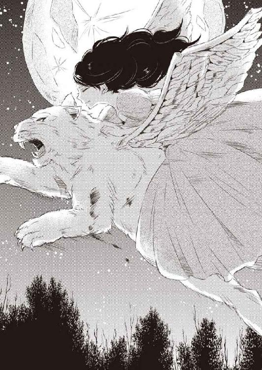
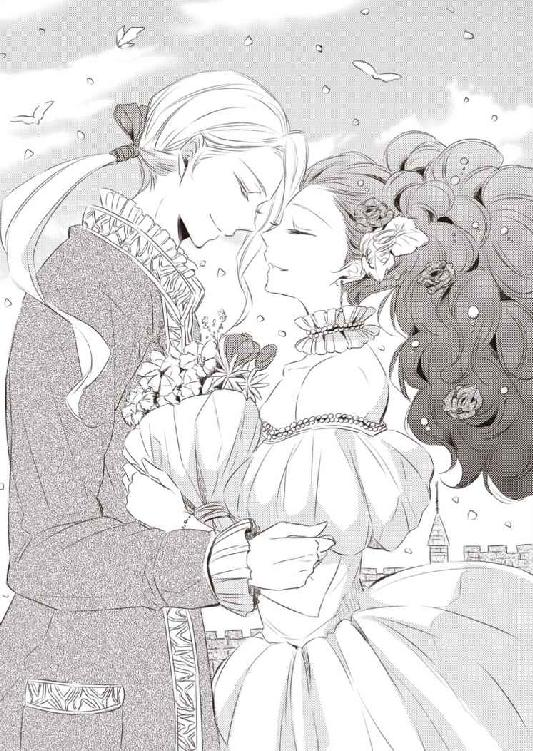

| 純白の乙女と神獣シスラ (マリーローズ文庫) | |
| 麻木未穂 | |
| (2012) | |
この作品は縦書きでレイアウトされています。
また、ご覧になる機種により、表示の差異が認められることがあります。
一部の漢字が簡略字で表示されていることがあります。
この作品はフィクションです。
実在の人物・団体・事件などに
一切関係ありません。
半分に欠けた月が、銀色の光を萌葱色の大地にまき散らした。
月色の波打つ髪と青い瞳を持った美青年、──シスラがアネルにほほえみかけ、アネルの胸が高鳴った。
シスラの微笑は唯一神イースに寵愛された〈神獣〉にふさわしい美しさをほこり、アネルは、そんな彼に強く惹きつけられるのをあらためて感じた。
ふたりは透明な泉の真ん中で抱き合い、互いの体を温め合った。
シスラがアネルに口づけした。
「ん......」
やわらかく甘やかな唇の感触が、アネルの体をとろけさせる。
アネルは、快楽と苦痛の両方をおぼえて長いまつげを震わせた。
ふれるだけの優しい接吻。
それなのに、驚くほど心地よく、また切なく、胸の先端が硬直する。
アネルは、自分がはしたない快楽をおぼえていることに気づき恥じらいを感じたが、唇からもたらされる愉悦をこらえることはできなかった。
体の奥底から官能の蜜があふれ出し、欲望の波が全身に広がっていく。
シスラの吐息も、シスラの鼓動も、シスラの匂いも、何もかも快い。
だが、こんなふうに感じてはいけないのだ。
シスラは、唯一神イースに仕える聖なる獣。
いまは人間の姿をしているが、いずれイースのいる天空に戻らねばならない。イースのもとにいるのが彼の幸せだ。
アネルのなかにこのままずっとシスラと一緒にいたいという気持ちと、ずっと一緒にはいられないという気持ちが浮かんでは消え、アネルは苦しみにたえきれず強くまぶたを閉じた。
銀色の輝きがアネルのうえに降りかかる。
あのどこかでイースさまはアネルとシスラの抱擁を見つめているのだろうか。傲慢な神の目で。
「シスラ......」
アネルは苦しさのこもった声をもらした。
同時に、その声にはこらえがたい感情も満ちていた。
まだ一度もシスラに告げたことのない、恋という感情が──。
白刃がうなり、銀の筋が弧を描いた。
虚空を切る音が宮殿の中庭に響きわたり、まわりを取り囲んでいた衛兵が息を飲みこんだ。
アネルの体は細身だったが鹿のように俊敏で、すみれ色の輝く瞳は相手の動きを子細ももらさずとらえている。
イグナシオの剣が天をとらえた。白銀のやいばが振り下ろされるより早く、大きく振りかざされた剣のすきをついて、アネルが刀身を横合いにたたきつけた。
イグナシオが足を滑らせて尻もちをつき、アネルはイグナシオの眉間に切っ先を突きつけた。
「わたくしの勝ち、ですわね」
厳しい表情のままイグナシオを見下ろし、ゆっくりと言った。
「最初にお約束したとおりです。わたくしに負けた以上、あなたの求婚は受け入れられません」
イグナシオが、顔を真っ赤にして強く奥歯をかみしめた。パーシヴィル家にその名も高き息女アネルが、剣で自分を倒した相手としか結婚しないと公言していることはだれもが知っている事実だった。
だが、しょせん相手は女。少しぐらい剣の腕があると言っても、たかがしれているとイグナシオが思ったとしてもむりはない。
こうして、もうアネルはずいぶん多くの男を打ち負かしてきた。
「どうなさいますか、イグナシオさま。もう一度、剣を交えますか」
合金の甲冑と装飾のついた豪華な衣を身につけたイグナシオが、肩で荒々しく息をした。
顔立ちは悪くなかったが、いまの彼は鼻筋にしわが寄り、焦げ茶色の瞳には誇りを傷つけられた者の激しい怒りがにじんでいた。
一方のアネルはパーシヴィル家の後継であるにもかかわらず、装飾のたぐいは一切つけておらず、上衣と裳が連なった春らしい淡緑色の衣を着て、背中でしっかりと紐を交差させている。
そのため、きれいに盛り上がった胸から完璧な曲線を描く腰つきが際だち、その下に広がる蕾のような裳がアネルの美しさを強調した。
泡が立ったような長い黒髪は耳にあたる一房をねじり上げて頭の後ろで結い上げている。真っ白な肌は剣を振るったため薔薇色になっていた。
まつげは扇のように長く、すみれ色の瞳は吸いこまれそうなきらめきを帯び、小振りの鼻は高く、ふっくらした唇は娘らしいなまめかしさを宿している。
今年で十七歳。
パーシヴィル家に男の跡継ぎがいないため、ただひとりの娘を男のように育てたことをアネルの父である現当主は嘆いていたが、いまさらどうしようもないことだ。
アネルは、イグナシオに背中を向け草地に落ちた鞘を拾い上げた。
「次はもう少し剣の腕を磨いてからおいでください」
アネルがひざを曲げた礼をして、その場を去り際、イグナシオがうめくように言いはなった。
「今日は油断しただけだ。あなたを女だと思って甘くみた。だが、つぎはこうはいかぬぞ。あなたは部下たちの前でわたしに恥をかかせた。これがどういうことになるか、必ず思い知らせてやる」
アネルは背後にいるイグナシオを見返した。仮にも騎士なら、剣を持った相手に油断をしてはならないことはわかりきっているはずだが、これ以上よけいなことを言ってイグナシオの恨みを買うことはない。アネルは剣を鞘にしまって、イグナシオに勝ったこと、ゆえにターレーン家の子息との結婚は見送りになったことを父に知らせに向かった。
ここ、グレイズヘイム王国では五つの古王家、ターレーン家、ヘラース家、カルヴァー家、ラスケルハノ家、パーシヴィル家が現王家バルデランを補弼し、危うい均衡を保っている。
なかでも、パーシヴィル家は前王家の血を引く由緒正しい家柄であり、ほかの四つの古王家は現王家に対抗するため次の当主たるアネルとの結婚を望んでいた──。
夜の大気が浸透し、アネルは王宮からそっと抜け出して、狩猟園のそばにある泉に向かった。
さきほどまでの夜宴で、遠くに座ったイグナシオはアネルに憎悪のこもったまなざしを向けたあと視線をそらし、歓談の輪の中に戻っていった。
アネルの父が「娘がずいぶん無礼をはたらいたそうで」と言うと、イグナシオは儀礼的な表情を浮かべ、「こういうときは女人に花を持たせるものかと存じます」と笑った。
「そう言えば、今日は満月ですな」
父が不意に言い、アネルは卓のずっと向こうにいる父に視線を向けた。
「満月の夜には神獣が出ると言います。なんと言ってもパーシヴィル家は唯一神イースの恩寵を受けた土地。イグナシオ殿も気晴らしに神獣を探してごらんになってはいかがですか」
イグナシオはわずかに瞳を光らせた。
「ここに来る前にそういう話をちらりとおうかがいしましたが、......これまで貴領土に神獣が出てきたことはあるのですか」
「満月の翌日はいろんなところで娘たちが噂しておりますよ。本当かどうかはわかりません」
「そうですか」
イグナシオは興味のなさそうな生返事をしてぶどう酒の入った杯をまわし、それきり話は立ち消えになった。
父の言ったとおり、今日はきれいな満月だった。
樫や櫟、ぶなや楢の生える木々のすきまをぬけると、岩に囲まれた清らかな泉がある。
天の彼方では無数の星が明るくきらめき、アネルはあの空のどこに唯一神イースがいらっしゃるのだろう、と思った。
唯一神イースはシスラと呼ばれる神獣を供に連れ、天空から人間を見下ろしていると言われている。神獣はイースの守護者にして、不死の恩寵を得た神の獣だ。
「満月の夜にはシスラが出てくるのよね。たしか純潔の乙女がシスラを呼び寄せるんだっけ。って、わたしには似合わないわ。純潔だけど神獣を呼び寄せる乙女にはほど遠いもの」
純潔の乙女は通称〈純白の乙女〉とも呼ばれ、グレイズヘイム王国で尊ばれる貞節と正義の象徴とされている。吟遊詩人の歌う純白の乙女はたおやかな姫であるだけでなく、ときには勇敢に戦って民人を守り、ときには領主を支えて王に尽くした。
アネルは腰に帯びていた剣を草地に置き、背中の紐をほどいて衣を脱ぎ捨て、青銀色のぬるい水面につま先をひたした。
両手で水をかきわけ、何度も身をくねらせてから岩肌を蹴り、水面におどりでる。
昼間見たイグナシオの様子が浮かび上がった。自尊心を傷つけられた男の顔があんなに醜いとは思わなかった。
「男は強くなきゃだめよ。わたしより強い男じゃなかったら、結婚なんかできないわ」
強い男なら、尊敬できると思う。尊敬できる相手なら、愛情も芽生えるはずだ。
けれど、本当にそうだろうか。イグナシオが剣術をもっと磨いてアネルより強くなったとしても、アネルがイグナシオを愛することができるようになるとは思えなかった。
そもそも古王家の後継として生まれた身だ。結婚は愛情でするものではない。
家のために必要な相手と結婚すること。ならば、剣で勝負を挑むのはばかげているが、「剣で勝った者と結婚する」と明言したアネルの言葉にひそむ真意を理解しているのは父だけだ。
自分より弱い男とは結婚できないと言えば、パーシヴィル家の当主の座をねらう不届き者を容易に退けることができる......。
「パーシヴィル家の跡継ぎなんだから、愛なんて必要ないか......」
それでも、いまだ亡くなった母を愛している父のことを考えると、愛とはすばらしいものなのではないかという気がした。
母はアネルとはまったく違い、そばかすの浮いた赤毛の不器量な娘だった。可能なかぎり美しく描かれているはずの肖像画ですらどこかゆがんでいる。
だが、肖像画からにじみ出る優しさは本物だった。そんな母を父は愛した。
アネルの美しさは父譲りだ。黒色の髪も。すみれ色の目も。
「わたしはパーシヴィル家の次の当主。家のために必要な相手と結婚する。それだけよ」
言って、もう一度水のなかに飛び込み、何度も身をくねらせて水面に飛び出した、そのとき。
木々の向こうから、ざっと音が鳴り響いた。アネルは体をこわばらせた。
アネルのいる泉の中心から剣を置いた水べりまでは少しばかり距離がある。
アネルは肩まで水につかり、気配の主を確かめた。
誰かがいる。だが、なんだろう、この気配。人ではない。
しなやかな草を踏む音は......、──アネルが飼っている動物マロンと同じだ。
こちらの様子をうかがいながら近づいてくる。狼か、野犬か。
だが、なにかもっと大きい獣のようだ。マロンより一回りほど大きな獣......。
アネルの緊張が極限まで高まったとき、茨の奥から白銀の毛皮に包まれた巨大な獣が現れた。
月光を宿した毛皮は美しく照り輝き、四肢は太く、姿形は虎に似てはいるが文様はどこにも入っていない。長いしっぽの先端は巻き上がり、息を吸うと口から牙がのぞき見えた。
それだけではない。獣の背中には白銀の輝かしい翼がついていた。
アネルはすみずみまで獣を見わたし、小さなうめき声をあげた。大きな背中から二本の矢が突きだしている。白銀の毛皮と翼の上に赤い血がしたたり、草地を濡らした。
そこにいるのがなにか──、自分のそばにやってきた獣が何者か、すぐにわかった。
アネルは泉からあがって、裸体のままゆっくり獣に近づいた。
獣はアネルを見ると、牙をむいて威嚇した。
「わたしはあなたの敵じゃないわ。その矢を抜いてあげる。だから、こっちにいらっしゃい」
アネルが音楽のように優しい抑揚の声で言うと、その言葉に含まれたいたわりに気づいたのか、獣が慎重な足取りでアネルに近づき、水に濡れた体の匂いをかぎ始めた。
アネルが獣の首をつかんで自分に向けると、澄み切った青のなかに灰色の線が入った不思議な瞳がアネルをとらえた。アネルは、太い首をつかんで優しくなでた。
「あなたは神獣ね。シスラでしょう。わが領地はイースさまの恩寵を受けているからいつも神獣が見守っているって父上がおっしゃっていたけど、本当だとは思わなかった。あなたに会えてすごくうれしい！」
アネルはシスラの首を抱きしめたあと、その背から伸びた矢を見て泣きそうな顔になった。
「すぐに手当てしないと。いったいだれがこんなひどいことをしたの？」
アネルがそこまで言ったとき、どこからか馬蹄のとどろきが聞こえ、喧噪が響いた。
男たちの騒ぎ声。──どこへ逃げた。あちらだ！ あの茂みに入ったぞっ。追え、追えー！
蹄の音が徐々にこちらへ近づいてくる。アネルは自分が全裸であることに改めて気づき、水滴もぬぐわず衣を身につけ、神獣の前に立ちはだかった。そのときだった。
木々の向こうから武装したイグナシオとその従者たちが馬の背に乗って現れた。
「だれかと思えば、麗しの姫君ではございませんか」
イグナシオはシスラとともにいるアネルを見て口もとに残忍な笑みを閃かせ、馬から下りた。
「あなたが後ろにかばっていらっしゃるのはわたしの獲物ですよ。返していただけますか」
「神獣はだれの獲物でもありません。ここにいるのは唯一神イースさまの守護獣です。それを矢で傷つけるなど......唯一神をおとしめる行為ではありませんか。ここからすぐにお立ち去りください。そうすれば、あなたさまの行いをとがめることはいたしません」
「そうはいかないのですよ。わたしにはほしいものがある」
イグナシオがアネルののど元に槍の穂先を突きつけ、注意深く歩を進めた。
シスラがとどろくような声を挙げ、大きく翼を羽ばたかせた。イグナシオが目を細めた。
「神獣をおとなしくさせていただけますかな。どうやらシスラはあなたにずいぶんなついている様子だ。シスラは唯一神イースと純白の乙女にのみひれ伏すと言いますからな」
いま抵抗すれば、アネルはともかくシスラが従者たちの矢で打たれてしまう。
アネルはシスラの首をしっかりと押さえ、ピンと立った耳に優しい声でささやいた。
「おとなしくしていらっしゃい。大丈夫、あなたはわたしが守ってあげる」
アネルの言葉を聞いて、シスラがゆっくりと態勢を変え、頭をあげた。
「そのままシスラを押さえていなさい。そのままずっと」
「......神獣を殺すのではないでしょうね」
「まさか。わたしは敬虔なイースのしもべです。そのように不信心なまねはいたしません」
直後、イグナシオがシスラの体に手を伸ばし、左の翼の下から羽根を一本引き抜いた。
銀色に光る翼のなかでひとつだけ金の輝きを帯びた羽根だ。
ほかの羽根とちがって、やいばのような鋭さを誇っている。
シスラが、ゴーッ！ とうなりイグナシオに飛びかかろうとしたが、アネルは必死でシスラを抱きしめ、矢を放とうとする従者たちからシスラを守った。
イグナシオはシスラの翼から引き抜いた金の羽根を満足そうにながめたあと、まだシスラを抱いているアネルに憎しみのこもった目を向けた。
「もうほしいものは手に入れました。あとはあなたの好きになさるがいい」
「その羽根は......、いったいなんなのですか」
「あなたには関係のないものです」
イグナシオは馬に乗りあがって従者たちに「行くぞ！」と声をかけ、その場から立ち去った。
アネルは馬蹄の音が聞こえなくなったのを見計らってゆっくりと立ち上がり、自分に体をすり寄せているシスラの喉をなでた。
「とりあえず手当をしなくちゃ......。こっちにいらっしゃい」
アネルがシスラの首の毛皮をつかんで歩いていくと、シスラがおとなしくついてきた。
アネルは不寝番たちの立つ正面入口にはいかず、いくつもの中庭を通って自分の寝室に面した露台に向かった。露台には屋根がなく、やや高くなった台が大きな窓からはりだしている。行儀が悪いと知りながら露台の手すりをこえて、鍵のついていない窓を開けた。シスラに目を向けると、神獣は軽々と手すりを飛び越えた。
アネルが窓を開くと、白い垂れ幕が風にあおられ眼前をおおった。直後。
巨大な獣の気配がアネルに向かって飛びかかり、シスラが獣に牙をむいた。
「やめて、シスラ！ この子は違うのっ」
仰向けに倒れたアネルが言い放つと、シスラがすぐさま動きをとめた。だが、牙と爪はしっかりと出したまま、アネルの上に乗り上がった獣を怒りのまなざしでにらみつける。
そこにいたのは、立派なたてがみを生やした巨大な獅子だ。
「マロン！ おとなしくしてた？ おまえは本当にいい子ね」
かつて狩猟園で母獅子とはぐれていた赤ん坊の獅子をアネルが見つけ、育てたのだ。
マロンは大きくなってからもアネルを母のように慕い、アネルから離れようとしない。
アネル以外のだれの命令も聞かなかったが、アネルの言葉にだけは忠実に従った。
「シスラ、この子はマロンよ。仲良くしてちょうだい。マロン、こっちはシスラ。イースさまに仕える神獣なの。シスラ、こっちに来て」
巨大な二頭の獣が血みどろの戦いをくり広げるのではないかと危惧したが、シスラが雄叫びを上げると、マロンはみずからの王に平伏するように頭をさげて服従の姿勢を取った。
アネルは、シスラの頭をなでて寝台のそばに座らせ、締め切られた入口をそっと開き、不寝番の兵に声をかけた。
「こんな夜中に悪いんだけど、賢女を呼んできてくれるかしら。いますぐに」
「御意にございます」
忠実な不寝番は理由も聞かず回廊を走っていき、アネルはシスラとマロンのもとにもどり、医術をあつかう賢女が来るのを待った。
「賢女より厩舎頭の方が良かったのかしら。厩舎頭は動物の医者もかねてるものね。でも、神獣の怪我を治したことはないはずだわ。神獣は不死の肉体を持つって言うから死ぬことはないと思うけど......、矢にあたったら痛いわよ」
アネルは自分も寝台を背にして敷物に腰を下ろし、隣に座ったシスラの頭を優しくなでた。
アネルがじりじりしはじめたころ。
「失礼しますよ」
声と同時に扉が開き、しわだらけの小柄な老婆が入ってきた。
老婆が寝室の影にかくれた獅子を見てうなずき、神獣を見て「おや、まあ」と言った。
「お願いです、賢女さま。大声を出さないで」
「この年になると驚くなんてことはもうないと思ったんですけどねえ、まさかこの目で神獣が見られるとは思いもよりませんでしたよ」
「この神獣、矢を放たれて怪我をしてるの。助けてもらえる？」
「神獣の怪我など治したことはありませんが、相手は不死の獣。矢を抜いて、包帯を巻いておけば治るでしょう。どれどれ、やってみましょうかねえ」
賢女は治療道具を床に置き、神獣のそばに近づいた。そのとたん、シスラが牙をむき、アネルは慌ててシスラの首を押さえた。
「アネルさま、この獣はあなたさまにしかなついておらんようです。どうかその手を離さないようにしてくださいませ」
アネルはシスラに「おとなしくして。大丈夫よ。恐くないから」と何度も声をかけ、シスラが暴れないよう懸命に首を抱きしめた。
賢女は、小さな体躯に全身全霊の力を込めて、鏃が体に残らないよう慎重に矢をぬいた。
矢が抜き放たれた瞬間、シスラが翼を羽ばたかせ苦痛のうめき声を上げたが、アネルがシスラの痛みを感じて涙を流すと、シスラは声をとめ、アネルの涙を舌先でなめた。
賢女は二本の矢をぶじにぬき、銀の毛皮にあふれ出た血をふいた。
「おや、もう血がとまっていますよ。これなら縫う必要はありませんな」
化膿止めの軟膏を塗り込んで、包帯を巻き、
「一日に一回包帯を取り替えて、この軟膏をお塗りください。まあ、念のためですが」
言って、賢女はアネルの寝室から出て行った。
アネルは賢女に丁寧に礼を言い、寝台のへりに背中を当てて敷物に腰を下ろした。そのとたん、シスラがアネルの大腿にあごを乗せ、アネルは愛おしそうにシスラをなでた。
「あなたは天空に帰るのね......、月が消える朝までに。寂しいけど仕方ないわ。天空に帰っても、わたしのことをおぼえていて......、って、そんなのはむりか。でも、わたしはあなたのことをおぼえている。わたしが目をさましたときにはあなたはもういないだろうけど、あなたのことは忘れない。おやすみ、シスラ。──さようなら......」
アネルはシスラの首を抱きしめ敷物の上に横たわり、銀色の毛皮の体を寄せて眠りに落ちた。
＊
若い男がそばにいた。
二十歳をすぎたあたりだろう。
月の光を宿したような銀色の波打つ長い髪と青い瞳が印象的な美青年だ。
凛々しくあがった眉、深い二重、大きめの鼻。唇は薄いが冷酷な感じは見あたらず、目にも口もとにもおだやかな笑みがほころんでいる。
男は全裸だった。
平均的な男よりずいぶん背の高い均整の取れた体躯は彫刻家が削り取ったかと思うほどみごとで、肩はやや広く、むきだしの胸は理想的な厚みを誇っているが、けがをしているのか腹に白い包帯を巻いていた。
男は、アネルの体を横抱きにして抱え上げ寝台に乗せて、アネルの指先に唇をあてた。
「わたしはただあなたのみに仕え、あなたを愛することを誓います」
男がひざまずいて言い、アネルの唇に接吻した。
やわらかく甘い唇の感触はアネルがこれまで得たこともないほど心地よいときめきを与えた。アネルの背筋に戦慄が走り、体が震える。
男がいたわるようにアネルの髪をなで下ろした。
アネルがわずかに口を開くと、男の舌が忍び込み、アネルの舌先を絡め取った。
ざわめくような熱情が唇を通じて全身に注ぎ込まれ、アネルは重なった唇のすきまから自分のものとは思えない声をもらした。
「ん......」
男の舌が生き物のようにうごめき、アネルの口内をもてあそんだ。
舌の先端があらゆる箇所をくまなくつつき、唇にそって這い進む。
激しく、淫らで、甘く、官能的な接吻は、アネルにとってかつてなかった経験だ。
アネルは男の舌に翻弄され、しびれるような喜びを味わった。
男がアネルを寝具の上に押し倒した。やわらかな羽毛のなかに背中が沈み、ひきしまった太い腕がアネルの体を抱きしめた。
盛り上がった乳房が硬い男の胸筋で押しつぶされ、ふたりの鼓動が交差した。
男がアネルを慎重に抱きしめ、アネルの不安が消えていく。重なった肌はアネルに言いしれぬ安堵を与え、男が背中に手をあてるとアネルは小さく身震いした。
男が顔をねじって深く唇をむさぼると他人のもののはずの舌がひとつになった。
男の手が、指が、唇が、アネルの体をまさぐり、瑞々しい快楽を与えていく。ふたりの肌がこすれあい、繊細なくぼみを通るたび、軽やかな火花がアネルの背中をかけぬけた。
男の手がくびれた腰部をつたって下方に伸びたとき、アネルは思わずつま先を引きつらせた。
すぐに男はアネルのおびえを感じて手を引き、アネルはひそかな失望をおぼえた。
男が上体を起こして、アネルの瞳をのぞき込んだ。
「愛しい姫......」
男が夢見るようにささやいた。
「わたしはあなたのものです」と──。
太陽の日差しを感じて、アネルは眠気の残るまぶたを開いた。帳のおりた寝台の上だ。
いつもは日の出とともに目をさますのに、今日は寝坊をしてしまったらしい。
「昨日、夜遅くまで起きてたもんね。夜に水浴びするのはもうやめた方がいいかも......」
寝坊の理由はそれだけではない。
アネルは昨日見た夢を思い起こして、頬をそめた。
白銀の髪をした美青年との官能的な夢。あんな夢、はじめてだ。
ひきしまった太い腕の感触、なめらかな指先、温かい唇、細やかによく動く舌。
なにもかもあまりに現実的で、とても夢とは思えなかった。
「わたし、どうしちゃったんだろう。わたしのなかにあんな願望があるのかしら」
昨日夢のなかで青年が接吻した唇に指先でふれ、恥じらいを浮かべた、そのときだった。
寝息が聞こえた。
正確に言えば、いま聞こえたわけではない。目をさましたときから、──それ以前からずっと聞こえていた。あまりに自然で聞き流していたのだ。
背後に人の気配がある。
寝台に横向けに寝ころんでいたアネルは息を殺し、ゆっくりと反対に向きなおった。
男がいた。
「ひっ！」
白銀の波打つ髪と目を閉じていてもわかる端麗な容貌。
夢で見た男だ。
アネルは、もう一度「ひいっ！」と言い、男を寝台から蹴り落とした。
「どえ！」
男が寝具をつかんだまま、床に転がりおちた。寝台の下にいたマロンが不思議そうな顔でこちらを見た。アネルは、寝台の上で上体を起こし、枕元に立てていた長剣をつかんだ。
アネルの体からするりと掛け布がこぼれ落ちた。衣をまとってはいない。
悲鳴を上げようとしたが、慌てて声を飲み込み、掛け布を引きよせ男に剣を突きつけた。
男は寝ぼけ眼を開いてあたりをきょろきょろと見回し、アネルに気づいてほほえんだ。
「姫～、おはようございます～」
男が立ち上がり、掛け布が床の上に落ちた。男も全裸だった。
きゃあああっ、と。
アネルは今度こそ悲鳴をあげた。
「アネルさま、どうなさいましたか！ アネルさま！」
「どうかなさったんですか、姫！」
扉の向こうに立っていた不寝番の衛兵と、全裸の男が同時に叫んだ。
不寝番が駆け込んでこないのは、この寝室にマロンがいるからだ。
アネルは、不寝番か男か、どちらに応えようか迷ったあと、すぐさま、
「わ......、わたしは平気よ。ちょっと寝台から転げ落ちたの。気にしないで」
と衛兵に言い、男の首に長剣の切っ先を突きつけた。
男をかばうつもりはなかったが、結婚もしていない古王家の姫が全裸の男と一緒にいるところを見られたらどんな噂を立てられるかわからない。
それこそ、パーシヴィル家にとっては致命的な汚点となる。
アネルは寝具の掛け布を首筋まで引き上げて、寝台の横でうつぶせになったマロンにささやくような声をかけた。
「マロンっ、そいつを殺せ......、殺しなさい！」
マロンが黒い瞳でアネルを見たあと前に向きなおり、男に容赦なく飛びかかった。
男が勢いあまって背後に倒れ、マロンが男にのしかかった。
まさか本当に殺したわけではあるまい......。
心配になって背後からのぞき込むと、マロンがうれしそうに男の顔をなめていた。
「マ......、マロン......」
男が笑いながら上体を起こし、マロンが「これでいいか？」と言うようにアネルを見た。
アネルは肩を落としたあと、男をにらんだ。
「いったい何者なの？ こんなところにどうやって入ってきたのよっ。わたしになにをしたの！ だいたいおまえ......、おまえは......！」
訊きたいことが多すぎて、なにを言えばいいのかわからない。
男はアネルの怒りの意味が理解できず、マロンとともにぼんやりこちらをながめた。
光り輝く銀色の髪。青い瞳のなかに入った灰色の筋。そして、腹に巻いた白い包帯。
「おまえは......」
唐突にひとつの結論に思い当たり、アネルは唾液を飲んで渇いた喉を潤した。
「おまえは神獣......。昨日わたしが助けた神獣、シスラね......」
「そうですよ～。姫ったら、わたしのことを忘れたんですか～」
語尾を妙に伸ばした緊張感のない言葉を聞いて、頭が痛くなってきた。
アネルはみずからの体を隠そうともしないシスラから視線をそらし、なるべく下半身を見ないようにして言った。
「なんでその姿なのよ。神獣の体はどうしたの。どうしてわたしは衣を着ていないのっ」
「いまは地上にいますからね。それに、昨日けがをしたので神獣の姿になるには力をためねばなりません。もともとあの姿はイースに仕えるために用意されたものです。これがわたしの本来の姿ですよ。あなたが衣を着ていないのは、ええっと......、寝ている間に暑くて自分でお脱ぎになったんです」
「なんで昨日のうちに天空に帰らなかったの。とっとと帰りなさい！」
シスラが泣きそうな顔をした。
「なんでそんなつれないことを言うんですか。姫はわたしのことが嫌いですか～？」
「......嫌いとかそういうのじゃなくて、あなたはイースさまに仕える神の獣でしょう。こんなところにあなたがいて、だれがイースさまをお守りするのよ」
「唯一神にはほかに何頭も神獣がいるからいいんです。でも、あなたのまわりに神獣はいないじゃないですか。だから、わたしが姫のそばにいます！ わたしの愛しい姫......」
シスラが全裸のまま近づき、アネルは剣をかまえたまま後方にしりぞいた。
「来ないで！ 来ないでよっ」
「そ......、そんなに嫌わなくったって......」
シスラが本当に泣きそうな顔をしたので、アネルはシスラに背中を向けた。
「体を隠しなさい！ 見えるでしょうっ。早く」
シスラははじめて気づいたように自分の裸体を見返し、寝台の上の掛け布を腰に巻いた。
「いやだなぁ、姫ったら。わたしの体は姫のものなのに。この程度で恥ずかしがらなくったって。昨日はあんなに恥ずかしいことをいっぱい、い～～～っぱいしたのに」
アネルは顔を真っ赤にそめ、シスラの喉に剣先を突きつけた。
「あなた、昨日わたしになにをしたの？」
アネルの声がすごみを帯びる。そのなかにこもった殺気にシスラが気づいた。
「えっと、その......、ふたりでカードゲームを......」
「な、に、を、し、た、の」
「な......、なにもしてません......！」
アネルが奥歯をかみしめ、剣の柄を持つ手に力を込めた。
「ほ、ほんと......、ほんとです！ 本当になにもしてませんって。......ちょっとチュウしただけで......」
「そんなことをしていいって、わたしがいつ言った？」
「だって、手にキスしたとき、いやがらなかったし......。もしかしていやだったんですか？」
アネルはなにも言わず、シスラをにらみつづけた。シスラが情けなさそうに鼻水をすすった。
「剣を離してください～。そんな目でにらまれたら本当に泣いちゃいますよ」
もう泣いてるじゃない！ とアネルは思ったが、このひ弱そうな男をどうしても憎むことができず、ゆっくりと剣をおろした。
「で？」
アネルはシスラに訊き返した。
「なにが『で』なんです？」
「もう帰ったら？」
「どこに」
「天空によ」
「むりで～す」
アネルはもう一度シスラの喉に剣先をあてがい、シスラが慌てて言った。
「本当にむりなんですってば。帰りたくても帰れないんです」
「どうして」
「昨日〈心の翼〉を取られたからです」
「心の翼って......？」
「昨日男たちに襲われたでしょう。あのとき、天空に戻るのに必要な羽根を奪われました。あれがないと天空に帰ることはできません。──で」
アネルは昨日の夜イグナシオがシスラの左の翼から金色の羽根を取ったことを思い出した。もしかしてあれが......？
「で......、どうするの？」
「あなたと一緒にいます！」
シスラがこぶしを握って言い、その瞬間腰にまとっていた掛け布がはずれ、アネルはまた悲鳴をあげた。
「ひ、姫さま......、大丈夫ですか！ 姫さま！」
入口の向こうから侍女のうわずった声が聞こえ、アネルは怒った口調で言った。
「マロンが粗相をしたの。わたしは平気。それより男物の衣を用意してちょうだい。あと靴も」
「......そのようなものをなににお使いになられるのでしょう」
「......散歩をしていて、......みどころのある男を見つけたのよ。その男をわたしの従者にしたくて......。でも、いでたちが不格好なので、近衛隊長に引き合わせる前に少しは見られるようにしたいの。わたしの従者にふさわしい、大きめの衣と靴を持ってきて」
侍女はアネルの言葉に迷ったものの、結局は「わかりました」と答え、「朝のお食事は隣室にご用意してあります」とつけ加えて去り、アネルはシスラに「後ろを向きなさい」と言った。
「どうしてですか？」
「いいから、後ろを向きなさい！ 早くっ」
シスラがぶつぶつ不平を言いながら後ろを向き、アネルは壁際にある櫃を開いて今日の衣装を取り出した。すばやい動作で白いサテンの飾り下着を身につけ、上衣と裳がつながった薄桃色の衣を取りだし、頭からかぶる。
鏡を見ながら、背中についた真珠貝のボタンを留めようとして──。
「後ろを向きなさいって言ったでしょう！」
マロンの隣に座ったシスラがにこにこしながら、着替えるアネルを見つめていた。
アネルは手元にあったクッションをつかんで、シスラに投げた。
「なんでそんなきれいな体を隠すんですか、もったいない。だれにでも見せるわけじゃないんだし、わたしの前ならいいじゃないですか」
「よくありません！」
アネルは細い腰帯を幾重にも巻き、やっと肩をなで下ろした。
シスラをにらみつけるが、どうにも怒りが持続しない。アネルに向けられた笑顔を見ると、自分も気持ちが和らいでしまう。この男のことなどなにも知らないのに。
神の獣と言うだけで。
それとも、神の獣は人の気持ちを和らげる不思議な力を持っているのだろうか。こんなふうにおだやかになれるのは、マロンと一緒にいるときだけだ。
それ以外は古王家の姫としていつも気持ちを張りつめている。
アネルに言い寄ってくる男たちは、アネルの背後にあるパーシヴィル家の名と財産、地位を目当てにしていたし、アネルの美しさにこころを奪われるものは逆にパーシヴィル家の名に怖じ気づいた。
だが、シスラはそのどちらとも違う。
彼の本当の姿が神の獣だから、パーシヴィル家のことや、アネルの地位になど興味を示さず、いっときの快楽のみを求めるのだろうか。
回廊から侍女の足音が聞こえてきた。
「寝台の向こうにかくれてて」
アネルはシスラに小声で言い放ち、入口に駆けよった。シスラはどうしていいかわからず寝台のそばに立っている。シスラが口を開いてたたずんでいる姿を見て、アネルは本当に腹が立つ男！ と思ったが、こころの底ではそんなに怒ってはいなかった。
白銀の髪も整った容貌も、すべてが神に愛されていると実感できるほどに美しい。どうしてこんな獣になつかれたのかと思うが、......アネルが昨日助けたせいにちがいない。
犬も命を助けた相手にはなつくと言うし、シスラにとってはその程度の感情なのだろう。
「その程度ってわけでもないだろうけど、ほかの人が助けたら、ほかの人になつくのよね」
アネルが妙な落胆を感じたとき、シスラが寝台に身を乗り出して「なんですか？」と訊いた。
「なんでもありません。しばらくそこにかくれてなさい」
アネルはシスラを「しっしっ」と追い払い、少しだけ扉を開けた。
「姫さま、衣を用意いたしました。甲冑のたぐいは営舎に行けばございますので、必要とあらばまたお申しつけください。従者にしたい男というのはどこに......」
「......営舎にいるわ。甲冑は衣を持って行くついでにいただいてくるから大丈夫よ」
「朝食がおすみになられましたら、ご当主の執務室までおいでください。ご当主がお呼びになっていらっしゃいます」
「わかったわ。いろいろとありがとう」
アネルは侍女の視線から室内を隠して衣を受け取り、扉を閉ざしたあと寝台に衣をおいた。
「出てきなさい。さっさとそれを着るのよ」
シスラが寝台の影から姿をあらわし、衣を広げた。
綿でできた下穿きと白いリネンのシャツ。薄茶色の革の上衣。黒い革の腰紐。灰青色の亜麻布の脚衣と革製の長靴。
シスラのそばにいたマロンが、衣の匂いをくんくんとかいだ。
シスラははじめて衣を見るようにシャツを見返し、革靴をつかんだ。
「まさか着たことがないとか？」
「少なくとも天空では着ません」
「......着方がわからない？」
もしかして自分が手取り足取り下穿きから着せなければならないのではないだろうか......、そんな不安にかられたが。
「んんん......、なんとかわかると思います」
シスラはそう言って腰に巻いた掛け布を外し、思ったより手なれた様子で次々衣を身につけていった。
「少し脚衣が短いみたいね。でも、長靴を履くから大丈夫か。靴の大きさは合うかしら」
アネルはシスラのそばに行ってシスラの足もとでひざを折り、脚衣の裾を軽く伸ばして革靴をうまくたるませた。
「衣の方は大丈夫だけど、問題は靴ね。足の指が痛くなったりしてない？ もし小さければ、べつのを持ってこさせるわ」
シスラから返事がないので不思議に思い顔を上げると、シスラがなにかをかみしめるように目と口を閉じて上方を向いていた。
「わたしの話、聞いてる？」
「姫がそこまでわたしのことを想っていてくださるのがうれしくて。胸がいっぱいですっ」
「......だれがだれを想ってる、ですって？」
「わたしのことを想って、優しくしてくださるんじゃないんですか？」
「ち、が、い、ま、す」
シスラがすねたように表情をくもらせた。
「......姫はお優しいから、だれにでも優しくするんですか？」
「......そういうわけじゃないけど」
「じゃあ、やっぱりわたしのことが好きなんだ！」
シスラの顔が明るくなり、アネルは慌てて、「ちがうってば」と言い放った。
「じゃあ、なんでわたしに優しくするんですか？ 好きでもないのに」
シスラが物欲しそうな目でアネルをながめた。マロンがシスラとアネルの間で大きなあくびをし、アネルはその場にうずくまってマロンの首をそっとなでた。
正直なところ、こういう男は好きではないはずだ。妙に軟弱で、口先ばかりの男は信用できない。だが、どうしてか嫌いではないとこころのなかで思ってしまう。
それでも、好きになるには物足りない。好きになるのは強い男だ。自分より強い男。そんな男だったら、尊敬もできるし、愛せるだろう。
「会ったばかりだし、好きかどうかなんてわからない」
「だったら、これから知ってください」
「あなた、人間じゃないじゃない。神獣でしょ。人間じゃない相手を好きにはなれないわ」
「そんなの気にしなきゃいいんですよ。体は男なんですから姫に喜びを与えることはできます」
「気にします！ いつか空に帰っちゃう相手を好きになったら、わたしが不幸になる」
「わたしはどこにも行きません。ずっと姫のそばにいます」
アネルは、熱っぽく自分をとらえる視線が苦しくなって目をそらした。
本当にこの男はアネルを愛しているのだろうか。
神獣という聖なる獣が、それほど簡単に人を好きになるだろうかと思う反面、そばにいてほしいという気持ちもあった。どうしてそんなふうに思うのかわからなかったけれど......。
アネルは仰向けに寝ころんだマロンの胸をなで、小さな声でつぶやいた。
「イグナシオさまから心の翼を取りもどさないと。あれがなかったら、あなたが天空に戻れない。簡単に渡してはくれないだろうから、なにか策を凝らさないとね」
「そんなことしなくてもいいです。心の翼はあの男に取られたんだから、もうあの男のものですよ。わたしの愛しい姫......」
シスラがアネルに近づいて背後からアネルを抱きしめ、アネルはすぐさまシスラから退いた。
「な......、なにするのっ。やめなさい」
アネルは身をよじってあらがったが、シスラのふれた部分が快いざわめきを放った。
シスラが情けなさそうに顔をゆがめた。
「わたしにさわられるのはいやですか？」
アネルはどう答えようか迷ったあと、言葉を換えた。
「どうしてこんなことをするの？」
「あなたが好きだからですよ。あなたを愛しているんです」
「......わたしのどこが好き？」
「あなたは高潔で、正義感が強く、勇気があり、誠実で、生気にあふれた、とても美しい方です。わたしはいままでいろんな女人を見てきましたが、あんなふうに大勢の男たちに囲まれながら、ひるまずにわたしを守ってくださる女人なんてひとりもいませんでした。わたしがあなたを愛するのは当然でしょう」
熱のこもった率直な告白を聞いて、アネルは思わず言葉を失い頬をそめ、シスラから目をそらしてマロンの首をなでた。つまらないお世辞だと思うが、シスラの目は真剣だ。
「おだてたって、なんにも出ないわ」
「なにもいりません。あなたがそばにいてくださるだけで、わたしは幸せなんです」
アネルは唇を開きかけたが、結局なにも言わず、朝食の用意された隣室に行った。
＊
シスラのことにばかりかまけてはいられない。アネルが考えねばならないのは、ターレーン家の子息、イグナシオのこと。それに、自分の結婚のことだ。
アネルは、シスラとともに早々に朝食をおえ、父の待つ執務室へ向かった。
回廊にはどこにも円柱が建てられ、天井は高く、壁には灯の灯っていない燭台が備えられている。きらめきを放つ太陽は温かく木々を照らし、青く茂る葉の匂いが窓を通して漂った。
甲冑を着た男や盆をたずさえた侍女たちはアネルを見ると回廊の脇に退いて頭を下げ、アネルはそんな臣従の民にひとりひとり笑顔を向け、
「今日は天気がいいわね」
「あなたの子どもはもう歩けるようになった？」
と親しげに声をかけた。
背後から、軽やかな足音が忠実についてくる。アネルは後方にちらりと視線を投げかけ、にこにこしているシスラを見た。
「......まさかずっとついてくる気じゃないでしょうね」
「わたしはあなたのものですよ。どこにだってついていくのは当然です。それにあなただって、わたしのことを従者って言ったじゃないですか。従者っていうのは姫の身近にいて、姫を守る兵士のことでしょう？ だったら、姫のそばにいて、姫をお守りしないと」
「わたしに従者は必要ないの。自分の身は自分で守れるからね。あなたが本当に誰かの従者になるっていうなら、近衛隊長にしごいてもらいなさい。近衛隊長が認めれば、父上の従者にしてもらえるでしょう」
「あなたの父上はわたしの父上になる方だけど、だからって姫のことを放っておいて、父上をお守りするわけにはいきませんよ。やっぱりわたしは姫の従者がいいです」
アネルは気分を静めるようにこめかみを押さえ、ゆっくりと息を吐き出した。
「ここにはわたし以外にも純潔の乙女がいっぱいいるわ。わたしよりきれいな娘も、わたしより気だてのいい娘も、お望みならわたしより強い娘も。あなた、器量だけはいいから、きっと気に入られるでしょう。わたしが口添えしてあげるから適当に選びなさい」
「姫！」
ふいにシスラが強い口調で言い、アネルの両肩をつかみ自分に向きなおらせた。
「好きになるっていうのは、そういうことじゃないんです。あなたより美人とか、あなたより性格がいいとか、あなたより強いとかそんなのは関係なくて、あなたがいいんです」
シスラがアネルの頬にそろそろと手をそえ、アネルはその心地よさに身震いした。体の隅々にまで熱が行き交い、官能がほとばしる。アネルは、そんな自分に驚いた。
シスラがアネルのあごを指先でつかみ、ゆっくりと持ち上げた。
「あなたを愛しています。わたしの姫」
シスラの目が情熱的にアネルを見下ろし、アネルの鼓動が高鳴った。
シスラが体を折りまげ、アネルの眉間に口づけした。シスラの唇を感じた瞬間、アネルの全身に甘美なさざ波が行き交い、アネルは誘われるように目をつぶった。
シスラが両のまぶたに、頬に、鼻の頭に、あごに口づけしていった。
アネルはとろけるような喜びをおぼえ、唇のすきまから熱い吐息をもらした。
なにも知らない相手に対して、こんなふうに感じる自分がいやだった。
これまで誰かにふれられて気持ちいいと思ったことは一度もない。なのに、いまアネルはシスラの指先から悦楽を与えられ、体中を震わせている。自分になにが起こったのか。
アネルがまぶたを開いてシスラを見ると、きらめくばかりに美しいシスラのほほえみがアネルのこころを打った。シスラが、アネルの唇に接吻しようとした、そのとき。
アネルは迷いを振り切るようにシスラから顔をそむけ、こわばった声で言った。
「わたしはあなたの気持ちに応えることはできないわ......」
「さっきは嫌いじゃないって言ったのに」
「好き嫌いの問題じゃなくて......、わたしの結婚はその場かぎりの感情で決められるものではないの。わたしはパーシヴィル家にとってもっともいい相手と結婚しなければならない。だから、あなたがどれだけわたしのことを想っていても、わたしにはどうしようもないのよ」
アネルの肩をつかんでいたシスラの手から、力がぬけていくのがわかった。
アネルのなかに言い知れない寂しさが訪れたが、彼に期待を持たせるのは酷というものだ。
「あなたはあなたの行きたいところにいきなさい。心の翼はわたしがなんとかするから、それまでどこでも好きなところに......」
シスラの手が一瞬アネルから離れたあと、またアネルの肩をつかんだ。
「じゃあ、わたしはあなたの愛人になります！」
「はぁっ？」
「結婚できないんなら愛人でがまんします。あなたは好きでもない男と嫌々結婚しますが、こころではわたしを愛していて、愛の喜びを感じるのはわたしだけなんです！ わたしはそんなに度量の狭い男じゃないから、あなたの苦しみをふたりで分かち合いますよ。これならいいでしょう？」
「......」
アネルは、眉間に人差し指をあて、シスラが言った言葉を理解しようとした。だが、どう考えてもわからない。ずいぶん経って、笑顔を取りもどしたシスラを呆然とながめた。
「男ならともかく女が愛人を持つなんてあり得ないわ。そんなの、だめに決まってるでしょう」
「なんでだめなんですか？」
「なんでって、そんなことだれもしてないし......」
「だったら、姫がすればいいんです。なにごとも最初はありますよ。男が愛人を持っていいなら、女も持っていいはずです。というわけで、これからわたしはあなたの愛人としてふさわしい行動をとりますから。るるん、るん、るん」
アネルは大きなため息をついた。言うべきことが山ほどあると思ったが、──いいかげん父のもとに行かねばならない。
「もういいわ。ひとりで勝手に歌ってなさい。これから父上と会うから、よけいな邪魔はしないでね」
「愛人らしく、そばでおとなしく侍ってます」
執務室へ行くと、父が山と積まれた羊皮紙の上から一枚一枚書類を取りだし、ひとつずつ目を通して署名をし、必要なものは蝋をたらしてパーシヴィル家の印章を押していた。
「父上、まいりました」
アネルの声を聞いて父が顔をあげたが、表情はさえない。このところ、父の頭には白いものがずいぶん混ざり、目の端には深いしわが刻まれていた。アネルにはいつも優しいが、優しすぎて気弱さが目立つ。そんな父の優しさがアネルは大好きだった。
「座りなさい」
父の座る卓の前に長いすがふたつ、その前に大理石でできた低い卓があり、アネルは長いすのひとつに腰を下ろした。
父がアネルの背後に立つ若い男を見て、眉毛にかくれた目をわずかに開いた。
「その男は何者だ」
「わたくしの従者です」
シスラがなにか言う前に、すぐさま答えた。ここへ来る直前、シスラには本当に従者になりたいなら従者らしくするように言い含めておいた。ほかの者が見ている前で座らないこと。決して声は出さないこと。常にアネルの背後に立ち、アネルの前には出ないこと、等々......。
仮にも相手は神に仕える聖なる獣だ。そんな神聖な存在に対し、従者のように振る舞えと命じるのは不遜なことだと思うが、アネルの言葉を聞いてシスラはうれしそうにうなずいた。
アネルは背後に立つシスラがまじめな顔をしているのを見て、ほっとした。アネルには間の抜けた笑顔ばかり見せているが、ちゃんと取りつくろうこともできるようだ。
イグナシオのように自尊心が高すぎる男は嫌いだが、シスラのように自尊心がない相手も困りものだと思いつつ、アネルは父に視線を移した。
父が、不審そうな目でシスラを見返した。
「従者にしては甲冑をつけておらんし、剣も帯びておらんな。そのような姿でちゃんとおまえを守れるのか」
「その......、この男は武具を使わず相手を倒すことに長けているのです」
「そうか。おまえが見込んだ男なのだから、それ相応の腕があるのだろう。ところで──」
もし名前を聞かれたらなんと答えようかあれこれ考えていたが、父がそれきりその話はやめにしたのでアネルは内心安堵の息を吐いた。
父が卓の上で指を組み、神妙な面持ちで言った。
「昨夜のことは聞いた。神獣を助けたそうだな。神獣はどこへ行った」
アネルは背筋を伸ばし、つっかえながら答えた。
「神獣はわたくしが逃がしました......」
「イグナシオ殿に心の翼を取られていては天空に戻れまい」
「昼間に神獣が出てくるなど聞いたこともございません。きっとわたくしたちには思いもつかないところにいるのでございましょう」
「そうかもしれんな」
父はそれ以上追求せず、窓からのぞき見える領地の風景に目をはせた。
小麦や大麦の穂が風に揺れている。青い草地の間には休閑地が並んでいて、さらに遠くには深緑色をした木々が茂っていた。安穏としたパーシヴィルの領地がどこまでも広がっていたが、この景色が決して平和ではないことはアネルとて知っている。
領地では長らく不作がつづき、多くの民人が苦しんでいた。
「イグナシオさまはまだこの宮殿にいらっしゃるんですよね？」
「イグナシオ殿はすでにお発ちになられた」
「どこにですか！」
「バルデラン城だ。心の翼をバルデラン王に捧げるために」
「なぜそんなことを......」
「知らんのか。といっても、あの布告が出されたのはずいぶん前だから、おまえが知らなくても当然か。すべてはバルデラン王が出された布告のせいだ。心の翼を手に入れた者はすぐさまバルデラン王家に差しだすように、とな。このところ王宮ではターレーン家が謀反を企ているのではないかという噂が流れている。だが、いまターレーン家がバルデラン王家と戦って勝てる見込みはない。ゆえに、心の翼を差しだして忠誠心を示したいのだ」
朝早くに馬で発ったというなら、アネルがどんなにがんばっても追いつくのはバルデラン王に心の翼が差しだされたあとになる。
アネルは昨日見たイグナシオの目を思い出した。あの男はなにをたくらんでいるのか。
「バルデラン王は心の翼をどうなさるおつもりなのでしょう」
「心の翼を手に入れた者は不死の命を得るのだそうな。バルデラン王の狙いもそれだろう。心の翼はさまざまな力をもたらす魔法の羽根だ。ほかにもいろんな言い伝えがある。イースの体を貫けば唯一神の命を奪うことができるとか、心の翼を煎じて飲めば、みずからも天空にのぼることができるとか」
「唯一神の命を奪うなんて恐れおおい......」
「なにもかも不確かな言い伝えにすぎんよ。真実を知る者はおらんのだ」
「ですが、おのが欲望をかなえるために王陛下がつまらない布告を出されたことはたしかです」
「口を慎め。どこでだれが聞いているかわからん。バルデラン王家に攻撃するすきを与えるな。パーシヴィルが反逆を企てているなどといううわさが流れれば、バルデラン王家はすぐさま軍勢を率いてわが領土を侵略しに来るだろう」
アネルは粟立つ気持ちを抑え、ゆっくり言葉を絞り出した。
「ですが、ターレーン家の求婚に応えるわけにはまいりません。昨日のことは、あれでよかったのですよね？」
「ターレーン家が狙っているのはパーシヴィルの当主の座。ひいてはバルデラン王の座る黄金の玉座だ。グレイズヘイムでの習わしもある。わが国では古王家の当主は男しかなれぬ」
アネルは自分がこれまで考えないようにしてきたことを改めて父に言われ、裳のうえでこぶしを作った。
古王家のどこかの子息と結婚すれば、王の承認がないかぎり必然的に結婚相手が当主となる。
たとえそうなったとしてもアネルの生む子がその次の当主になるのだから、一代かぎりべつの古王家の当主がパーシヴィル家の当主の座を兼ねても問題はないが、ターレーン家のように野心をもっている相手は充分注意を払わねばならない。自分にとって都合のいい側室に子を産ませ、その子をパーシヴィル家の当主にすえることも考えられる。
自分が男に生まれていれば、こんなことにこころを煩わせる必要などなかったものを。
アネルが唇をかみしめたのを見て、父が優しい言葉をかけた。
「すまんな、アネル。わたしがちゃんと息子を作っておけば、おまえにこのような気づかいをさせることはなかったのに。だが、わたしはおまえの母が亡くなってから情熱を失った。だれかを新たに娶っても、子は生まれなかったろう」
「父上......」
アネルは、母に対する父の愛情の深さをいまさらながら思い知らされ、胸が痛くなってきた。こんなふうに死んでもなお恋しく思うほどだれかを愛せるときが自分にも来るのだろうか。
「ターレーン家の求婚についてはあれでよかった。だが、ラスケルハノ家はそうはいかん」
父が考えもしなかった古王家の名を口に出し、アネルはわれに返った。
「今日ラスケルハノ家の当主から親書が来た。おまえを四番目のご子息にめあわせたいそうだ」
ラスケルハノ家はグレイズヘイム王国の西に位置するパーシヴィルとは異なり、東端に領地をかまえている。ほかの四つの古王家のどことも同盟をくんでいないが、豊かな土壌に加え背後に海をひかえていて、どこよりも強い国力を誇っていた。
「四番目のご子息というとたしか......」
「去年の剣闘会で優勝した強者だよ。イグナシオ殿がおまえに求婚したのを聞きつけ、こたびの親書を送ってきたにちがいない。イグナシオ殿がおまえに負けることを見こしたのだ」
「わたくしはどうすればいいのでしょう」
「最善をつくせ」
「最善ですか......」
アネルは小声でつぶやいた。
「いま東国の王子とおまえの結婚を進めている。向こうの法では相手側に女の世継ぎしかない場合、共同統治にできるそうだ。バルデラン王とて東国の皇子が単独でパーシヴィル家の当主に立つのは望まぬはず。この話がまとまるまで、おまえにはがんばってくれと言う以外ない」
「なんとしてもラスケルハノ家のご子息に勝つしかないのですね」
父がいすの背もたれに寄りかかり、妻とはまるで違った面差しをもちながら、妻と同じ意思の強さを感じさせる娘をまぶしそうにながめた。
「妙に気を張るな。おまえが敗れれば、そのときはそのときだ。わたしが望むのはおまえが幸せに暮らすこと。もしおまえがラスケルハノ家のご子息と幸せに暮らせると思ったなら......」
「わたくしの幸せはパーシヴィル家に尽くすこと。わたくしはパーシヴィル家のために必要なことをします。ラスケルハノ家のご子息はいつこちらにいらっしゃるのですか」
「親書がずいぶん遅れたようだ。ご子息はすでに領地を発たれていて、十日後にはつくだろう」
アネルは勢いよく立ち上がった。
「では、それまでわたくしはラスケルハノ家のご子息に立ち向かうべく武術を磨いております」
「ありがとう、アネル。おまえはお母さんにそっくりだよ。お母さんもおまえと一緒で、とても強い心根の持ち主だった。わたしはおまえが誇らしい」
「そう言っていただけてうれしゅうございます」
アネルは頭を下げ、執務室を辞した。
大男が刀身を振りかぶり、アネルは剣を身がまえた。
なたのような大剣と細身の剣が交じり合おうとした、その瞬間。
「危ない！」
シスラが叫び、大男に体当たりした。
ふいをつかれた大男が尻もちをつき、アネルは思わず顔をしかめ、大男とともに地面に崩れ落ちたシスラを見下ろした。シスラが、鼻をすすりながらアネルを見た。
「もう！ 何回練習の邪魔をしたら気がすむのよ」
「だって、この大男が姫に......、姫に～」
「彼は優秀な近衛隊員なの。わたしを傷つけたりしないって何度も言ってるでしょう」
「で～も～」
「あなたは下がって。もう二度と邪魔しちゃだめよ。さ、つづけましょう！」
立派な体躯をした近衛隊員が頭をなでながら立ち上がり、地面に落ちた大剣をつかんだ。
「いえ、今日はもうお休みください。まだまだやりたりないとは思いますが、直前まで練習をしているところをラスケルハノ家のご子息に見せるわけにはいきませんので」
腰を落としたアネルは勢いをそがれたが、やがて全身の緊張をとき、剣を降ろした。
「ここで負けて自信を失っては仕方ないものね。あなたの言うとおりにするわ」
あたりを見回していると、気を取り直したシスラがアネルに鞘を手渡した。
「......ありがとう」
いつもいつも犬のようにあとからついてくるため、このごろはそばにいるという感覚さえなくなった。彼の気配にも、足音にも、匂いにも慣れてしまい、近くにいないとアネルの方が落ち着かなくなってくる。
もっとも、シスラがアネルの近くにいないことなどなかったが。
アネルが、シスラから受け取った葡萄酒の革袋を近衛兵に返した、そのとき。
「アネルさま！ アネルさまはいらっしゃいますか！」
いつもしとやかにしている中年の侍女が裳裾を両手でつかんで走ってきた。
「ラスケルハノ家のご子息がいらっしゃいました！ すぐにお支度をなさってください」
「ずいぶん早かったわね。こんな姿では会えないわ。湯浴みをして、それから......」
「すべてご用意してございます。さ、こちらへ」
侍女が勢いよく身を翻し、アネルはすぐさま後を追った。
宮殿の石段を登り、衛兵の守る入口を通って回廊を渡る。大理石で作られた浴場に入ると熱い湯気が押しよせた。
背後で、侍女と男が言い合う声が聞こえた。衣の前についたボタンを半分はずして後ろを向くと、侍女にとめられたシスラが浴場に入ってこようとするのが見えた。
アネルは慌てて衣の襟をかき合わせ、侍女たちを押し返そうとしているシスラに言った。
「なにしてるの、あなた。とっとと出て行きなさいっ」
「わたしは姫の従者ですっ」
「従者でもこんなところには来ないわ。外で待っていなさい」
シスラが叱られた犬のような顔でアネルを見たが、アネルが強い視線でにらみつけると渋々引き下がり、侍女が浴場の扉を堅く閉めた。
まったくあの男はどこまでついてくれば気がすむのだろう。あきれる反面、おかしい気もした。子どものころのマロンを見ているようだ。マロンも常にアネルの後ろからつきしたがい、剣の練習のとき誰かがアネルに襲いかかろうとすると、その相手に牙をむいた。
アネルの胸に温かいものがこみ上げ、緊張がほどけ唇に笑みがほころんだ。
アネルはすぐさまわれに返った。こうしてはいられない！
アネルは浴場に建つ神獣の彫像を見て一瞬迷ったあと勢いよく衣を脱ぎ捨て、浴槽に体をひたした。侍女のひとりがハーブ入りの石けんを泡立てて髪の毛を洗い、べつの侍女が何度も湯をかけて泡を流す。最後に香り高い薔薇水をつけたあと羊毛のタオルで体中の水滴を拭いた。
浴場の隣にある休憩室で、上衣と裳がつながったくるぶしまである深紅の衣を身につける。
侍女の手で扉が開かれると、外で待っていたシスラがアネルを見てぼんやり口を開いた。
アネルは思わず息を止め、上目づかいでシスラの様子をうかがった。
「......そんなに変かしら？ もうちょっと着飾った方がいい？」
シスラがアネルを見てまばたきしたあと、うっとうしいほどの熱心さで叫んだ。
「変だなんてとんでもありません。ものすごくものすごくものすご～く美しいです。いつも美しいけど、今日はさらに美しいですっ。こんな......、こんな......！」
「もういいわ。......さっさと謁見の間に行かなきゃ」
シスラがそろそろと手を出すと、いつのまに摘んできたのか、鮮やかな朱色をした柘榴の花が乗っている。シスラがアネルの耳に花を差し、アネルは小さな声でつぶやいた。
「......ありがとう」
咳払いをしてわずかに頬をそめ、幸せそうにほほえむシスラを見た。
「あなたのおかけで少し自信がついたわ」
「自信だなんてそんな......。真実を言ったまでです」
アネルは唇に恥じらいを浮かべたまま前に向きなおり、太陽の入り込む回廊を息が切れない程度の早足で駆けぬけた。
＊
夜の闇が浸透した。父のいる宮殿では、いまだ歓迎の饗宴がつづいている。
アネルは鏡の前に座り、ブラシで髪を解きほぐした。白い夜着を身につけ、その上に桜色の長衣を羽織っている。
アネルのいすのそばにシスラが腰を下ろし、シスラの横にマロンがうつぶせになっていた。
アネルは葡萄酒を何杯か飲んで許しを請い退席したが、ラスケルハノ家の四番目の息子たるオーグが即興で見せた剣舞が気にかかって眠ることができなかった。
オーグは身長こそ高くないものの、みごとなまでに筋肉がついた立派な肉体を誇っていた。みごとな剣舞で人々の賞賛を浴び、気をよくしたオーグはしたたかに酔ったあげく、アネルの体にぴたりと身を寄せ、「あなたは本当に美しい」と言い酒臭い息を吐いた。
「決闘なんてやめなさい。なんなら今夜にでもあなたを抱いてさしあげましょう。そうすれば、あなたはわたしから離れられなくなる」
オーグがアネルの耳に息をふきかけ、人差し指でアネルの首筋をくすぐった。その瞬間。
「姫から離れろ！」
「汚い手を離してよ！」
ふたつの声が同時にとどろき、人を殴る音がした。
頬を赤くはれ上がらせたオーグは、立ち上がったアネルをぼんやりながめた。
一方のシスラは、両隣に立つ近衛兵に体をおさえられている。
オーグを殴ったのはアネルだ。
オーグはしばらく呆然としたあと酔った瞳に怒りの色をにじませ、激しい口調で言い放った。
「女だと思って甘くみておればいい気になりおって。このような領地などラスケルハノ家が本気になれば簡単に討ち取れるのだぞっ。この場で決闘だ。剣を持ってまいれーっ！」
オーグが大声で怒鳴り散らし、大使者がやって来てオーグをなだめた。
「オーグさま、いまは宴の席でございます。女たち、踊れ踊れ。新たな酒を持ってくるのだ」
美女たちが目の前で踊りを披露し、オーグにしなだれかかって酒をつぐと、オーグはアネルのことなど忘れ去ったように口の端をゆるめた。
アネルはそのすきに夜宴から抜け出した。
アネルはブラシをかけながら、いやらしい笑みを浮かべるオーグの横顔を思い出した。
不安、恐怖、苛立ち、懸念......、あらゆる感情がアネルをとらえ、孤独の彼方に押しやった。オーグの笑みを思い出すたび、生理的な嫌悪感がこみ上げる。
ふいに、足の甲にやわらかな感触をおぼえ、アネルは下方に目を移した。
「なにしてるの」
シスラが、マロンの首をしっかりとつかみながら、アネルの足に接吻していた。
「やめなさいったら......」
シスラがアネルを見上げ、不安そうな顔をした。
「どうしたんですか、姫......。なんだかいつもと違いますよ」
「なにがどう違うっていうの」
「いつもは元気なのに、今日は元気じゃない気がします」
「......宴席であんなことがあったあとだもん。仕方ないわ。あの男に明日、謝りにいかないといけないし......」
「そんな必要ないですよっ。姫が殴ってなかったら、わたしが一発喰らわしてました！」
「神の獣にそんなことはさせられないわ」
「あの男は姫にさわったんですよ。絶対許せません！ 絶対、絶対許しませんっ」
「でも......」
アネルはなにか言いかけて声をとめ、結局はなにも言わなかった。結婚すれば、あの男に毎日抱かれることになる、......そう言おうとしたが、考えたくもないことだ。
「まさかあんな男と結婚するわけじゃないでしょうね......」
シスラが恐る恐る言い、アネルはため息が出そうになるのを懸命にこらえた。
「......ラスケルハノ家の領土は肥沃で、海洋貿易も盛んにおこなわれているわ。民人は飢えを知らず、領地はどこも繁栄してるそうよ。でも、パーシヴィル家はちがう。このところの不作で民人は飢え、領主たちが税金を引き上げたあげく、さらに民人を苦しめている。わたしがオーグさまと結婚すれば、ラスケルハノ家から援助をいただくことができるでしょう」
「援助のために結婚なさるんですか？ 愛ではなく......」
アネルはシスラに笑みを向けたが、その顔には悲しみが沈んでいた。
「その前に、領主たちにちゃんと土地を治めさせればいいんですっ」
ふいに、シスラが身を乗り出して言い、アネルはわずかに驚いた。
「領主はちゃんと土地を治めてるわ。税金を引き上げたのだって仕方ないことよ」
「このところ姫と何度も領地を見てまわっていますが、どこも荒れ果てているじゃないですか。あれではちゃんと土地を治めているとは言えませんっ。水車を建てて灌漑を整え、田畑に効率よく水を引き込むこと。また、休閑地の半分には春に収穫するエン麦や豆をまいて、残りの半分を放牧地にすれば、次の年に収穫量がへるのを抑えることができるでしょう。それに牡牛にすきを曳かせるのではなく、もっと牽引力のある馬を使うべきです」
アネルは、こぶしを握って力説するシスラをぼんやりながめた。
熱弁を振るうシスラは、いつもの頼りない彼とは別人のようだ。
「いまの話、イースさまから教わったの？」
シスラがちょっと顔を赤らめ、首をすくめた。
「......わたしは誰もが知ってる当然のことを口にしただけです。領主は領民から上納されたものをただ受け取ればいいというものではありません。みずからの土地を有効に統べ、領民を正しく導き、領民が差しだしたものを領民と国に還元するのが領主の役目」
ここ何日か一緒にいてシスラのことはなんでも知っていると思っていた。
頼りなくて、情けなくて、優しいだけの男。
だが、それは間違いだった。シスラの中にはアネルも知らない意思の強さと土地を統べるのに必要な判断力が備わっている。
「わたし、変なことを言いましたか......？」
「いいえ、ちっとも変じゃないわ。明日、さっそく父上のところに行きましょう。あなたがいま言ったことを話して布告を出してもらうの」
アネルは胸が躍るのを感じ、しばし不安を忘れた。
神に愛された完璧な横顔をじっと見る。
やわらかい風が吹きよせると、こちらを見るシスラと目があった。いましがたの喜びが炎のように消え、寂しさだけが残る。身体に火がついたような激しいときめき。地に突き落とされたような切なさ。
シスラといると、そんな気持ちが交互に訪れ、冷静ではいられない。
アネルは小さな吐息をつき、シスラから視線をそらした。
「もう寝るわ......」
「燭台は消しますか」
「つけたままにして」
「おやすみなさい」
シスラが、寝台の脇で寝ころんだマロンの首をつかんで横になった。
最初、いくらなんでも神獣を床に寝かせるのはまずいと思い、べつの寝室を用意したが、シスラは「自分はアネルの従者なのだから、寝るときもそばにいる」と言ってきかなかった。しかたなく長いすを寝台に見立ててクッションをおいたが、シスラは少しでもアネルに近い位置を探し、マロンを寝具代わりにして寝るようになった。
夏に向かう季節だから大丈夫だと思うが、寒くなったらこのままではいられまい。
せめて床に寝具を敷かせるか。秋まで一緒にいられれば、だが。
アネルは羽毛のつまった寝台の上で右になり、身じろぎをして左になった。眠れない。
「マロン」
アネルは愛する獅子に声をかけた。獅子が薄闇のなかで首を上げた。
「こっちにおいで」
マロンが獣の王らしいゆったりとした動作で起きあがり、帳を押して寝台の上に乗りあがった。アネルはマロンの首を抱き、たてがみのなかに顔をうずめた。
慣れた匂いをかぎ、自分の鼓動に耳をすませるが、眠気はなかなかやってこない。
アネルはとうとう起きあがり、床の上で横になるシスラを見下ろした。
シスラがアネルの様子に気づいて、目を開いた。
「なにもしないって約束できる？」
横になったシスラが呆然として口を半開きにした。一瞬経った、のち。
「でででできますっ。できますっ。できますっ」
アネルは寝台の上からシスラをにらみ、シスラはアネルの前で正座をした。
アネルは、マロンの首を軽く持ち上げて自分の反対側に寝かせ、マロンがいたところをぽんぽんとたたいた。
シスラが飛ぶような勢いで帳を開き、長靴を脱ぎ捨てアネルの横に寝ころんだ。
「変なことしたら、本当にだめよ？」
シスラがうんうんとうなずいた。アネルは疑わしそうな目でシスラを見ていたが、やがて背中を向け横たわった。
アネルは安らぎと緊張の両方を感じ、規則正しい寝息を立てるマロンの首を抱きしめた。
マロンは草原を走る夢でも見ているのだろうか。本当はアネルといるより仲間たちと暮らした方がマロンのためだ。シスラがイースのそばにいる方が幸せなように。
ゆっくり目を閉じた瞬間、わずかな刺激を感じ、アネルは背後を振り返った。
「さわったらいけません」
シスラが寝台に広がったアネルの髪を指先でつついている。アネルがしかりつけると、今度は反り返った髪の裾に指を絡めた。アネルはもう一度シスラをしかりつけようとしたが、この程度なら仕方ないと思い、またシスラに背を向けた。
シスラが燭台の炎がにじむ帳のなかでぼんやりと言った。
「姫のことが心配です」
「......どうして？」
「すごく不安そうだから」
シスラが背後で深いため息をつき、アネルは驚いて上体を起こした。
「ため息なんかつかないで......」
アネルが言い放つと、また深々とため息をついてアネルを見上げた。
「姫がつらい気持ちでいるのになにもできないのが苦しくて......」
「なにもしてないわけじゃないわ。あなたはわたしのそばにいてくれる」
アネルはささやくような声で言い、体の向きを変えてシスラににじり寄った。シスラが息を飲み込み、緊張で全身をこわばらせた。
「うっ......」
シスラが、五本の指を芋虫のように動かした。アネルが目を閉じていると、そろそろとアネルを抱きしめ、静かに寄りそった。優しい体温がアネルのなかに忍び込み、シスラの鼓動が聞こえてくる。体がぴったりと重なり、ふたりの吐息が交じり合った。
アネルの腰にシスラの興奮がつたわったが、シスラはそれ以上なにもしてはこなかった。
喜びと緊張がアネルのなかに同時に押しよせ、アネルはおだやかな時のなかで心地よい夜を過ごした。
＊ ＊ ＊
翌日、いつも通りの朝を迎え、アネルはシスラとともに隣室で遅い朝食を取った。
アネルは露台に近づき、澄み切った空をながめたあと扉の前に立つ侍女をふり返った。
「オーグさまは、昨日のこと、怒っていらっしゃる様子だったかしら」
「いいえ、どうやら饗宴でのことはすべてお忘れになった模様です。うわさでは酒癖があまりよろしくないそうで......。今日は、朝から城下の視察に出かけていらっしゃいます」
「そう......。よかった」
ならば、わざわざ謝りに行って、忘れたことを思い出させることはない。
昨日はいやな目にあったが、こちらももう忘れよう。
部屋の中央に視線を移すと、シスラがよどんだ目をして卓の前につき、朝食の林檎をまだ口に運んでいた。
目の下に隈ができている。シスラが大きなあくびをして、眠そうに目をこすった。
「疲れたような顔をしてどうしたの。なにかあった？」
シスラはなにも言わず、しゃりしゃりと林檎をかんだ。
「姫はよく眠れたようですね......」
「ええ。おかげさまでぐっすりよ」
シスラがどこか恨みがましそうな目でアネルをとらえた。
「そういえば、ご当主のところにカルヴァー家から親書が届いたそうです。その件で、アネルさまにお話ししたいことがあると仰せでした」
「親書......、なにかしら。──すぐ父上のところに行くわ」
アネルが宮殿を出ると、シスラが慌ててついてきた。アネルはひそかに後方をうかがった。シスラの足音が聞こえると、自分が守られているような安堵をおぼえた。
こんなふうに感じるようになったのは、一体いつからだろう。
最初はどこにいてもまとわりついてくるシスラをうっとうしいと思っていたはずだ。
だが、いまアネルの背後にいるシスラの気配や匂いは快く、彼がそばにいると思うと、マロンが一緒にいるときと同じような、それでいてマロンとは違う不思議な心持ちにとらわれた。
執務室に入ると、いすに座った父の横に使者とおぼしき見知らぬ男が立っていた。
アネルは、使者を見てどうしようか迷ったが、父は気にするなと言うようにうなずいた。
「カルヴァー家から親書が来たとか。どういうことですか」
「カルヴァー家の旗章をたずさえた騎馬隊が、ぜひわが領地を横切りたいと言ってきた。わが領地を横切れば、ヘラース家にもっとも早く到着することができるからな」
カルヴァー家はずいぶん以前からヘラース家との不和がうわさされていた。まさかとは思う。だが、パーシヴィル家の領地を横切りたいというなら、考えられることはひとつしかない。
「戦いが始まるのでしょうか。パーシヴィルが巻き込まれるようなことは......」
「正当な理由がなければ戦はできんよ。それに、両古王家の戦いがわが方に飛び火することがあれば、ターレーン家も出てくるだろうし、誰も戦いが広がることは望むまい」
父はそう言って、使者に向きなおった。
「カルヴァー家の者たちにわが領土を横切る許可を与えよう。だが、あくまで平穏にだ。略奪や騒ぎを起こすことがあれば、あとで必ず賠償を請求すると伝えよ」
「かしこまりました」
使者が頭を下げ、執務室から出て行った。
アネルは使者の残した影をながめたあと、父に視線を移しかえた。
「大きな戦争にならなければいいのですが」
「カルヴァー家とヘラース家はたがいの領地をめぐって諍いが絶えなかった。かと言って戦うための口実はなかったし、バルデラン王家からもよけいな諍いは起こさぬよう常々言いわたされていた。こちらは前以上に領地沿いの警邏を厳重にし、双方の動向を注視する。おまえはなにも気にせず、ふだんどおりふるまうがよい」
「わかりました、父上」
午後の軽食をおえたアネルは、剣をつかんで狩猟園のそばにある泉に行った。
いつのまにか灰色の雲が低くたれ込め、湿気を含んだ冷たい大気が足にまとわりつくようだ。アネルは岩べりに腰をおろして透明な泉を手ですくった。
水浴びには少し肌寒い。シスラが、薄曇りの空を見てめずらしくまじめな顔をした。
「どうしたの、シスラ」
「......さきほどのこと。ヘラース家とカルヴァー家はずっと戦闘状態にあったんですか」
「戦闘ってほどじゃないけど、ヘラース家から無法者が流れ込んできて治安が乱れたり、カルヴァー家がヘラース家の領地からまちがって穀物を収穫したり......。そんなことよ」
「婚姻の話が進んでる時期にヘラース家と悶着があるから領地を横切らせてくれなんて妙だと思いまして......。いまはこちらにラスケルハノ家のご子息も逗留しています。ラスケルハノ家はカルヴァー家と盟約を結んでいるわけじゃないんでしょう？」
「ええ、たしかにそうだけど......」
「ここでへたなことをすれば、ラスケルハノ家にみずからの弱みを見せるようなものです。それにいま聞いたかぎりでは、両家の関係はさほど深刻を極めているというものではないですし、ヘラース家からなにも言ってこないのもおかしい。胸騒ぎがします」
低い声で言ってから、アネルの不安を紛らわせるような笑みを浮かべた。
「でも安心してください。なにがあっても姫はわたしがお守りしますから」
昨日、アネルはやっとシスラがただの間抜けではないと気づいたところだ。
いまの言葉も筋が通っており、領地を横切らせてほしいという要請には妙なものがある。
カルヴァー家はもしかしてパーシヴィル家にやいばを向けるつもりではないだろうか。
「父上もお忙しいだろうし、午後になってからもう一度執務室に行って、それとなくほのめかしてみるわ。昨日の話もしてないからね。あなたって......」
シスラがその先をうながすように首をかしげたが、アネルはなにも言わなかった。
ほめ言葉を口にするつもりだったのだが、なにかがアネルを押しとどめた。
なにがアネルに引き止めたのか、自分でもわかっている。
自分がシスラに惹かれていること。
これまでさまざまな男がアネルに求婚してきたが、シスラのような男ははじめてだ。
アネルは、ずっと昔「武勇だけが強さではない」と父が言っていたことを思い出した。アネルが毎日剣の腕を磨いていたときだ。あのときは「では、なにが強さなのか」と思ったが、いまになってわかる。優しさも、領民を愛する気持ちも、すべて強さだ。
彼が神獣でなければよかったのに。
そして、自分がパーシヴィル家の跡継ぎでさえなければ──。
アネルは自分のなかに芽生えた気持ちを押し殺し、指の間からこぼれるしずくをながめた。
「......天空のことが恋しくならない？」
「なりません。姫と一緒にいる方が楽しいです」
シスラはきっぱり言い切った。
「でもイースさまは恋しく思っているにちがいないわ。あなたはイースさまのもとにいるべきよ」
「前にも言いましたが、神獣なんてほかにたくさんいます。一頭ぐらいいなくなったって、どうってことありません。ですが、姫はわたしにとってただ一人の方です」
シスラの口から甘い言葉がほとばしるたび、快いざわめきが駆けぬけ体がとろけそうになる。
シスラがいるだけで安心し、彼がいずれいなくなると思うと切なさに襲われた。
永遠に一緒にいたい。なのにそれは許されない。
「あなたは神獣よ。このままではいられないわ」
「永遠に姫のそばがいいです。永遠にそばにいます」
アネルは胸にしみこむシスラの言葉を全身で味わったあと、静かに目を開いた。
「......天空神はどんな方なの？」
「偉大で、強くて、美しくて......、傲慢な方です」
アネルは灰色の空からのぞき見えるにじんだ太陽をながめた。イースはあの太陽のごとき方だろうか。容赦なく照りつけ、きらめく光を与える天の覇者。
「姫はわたしが嫌いですか。わたしを天空に追い返したいくらいに？」
シスラがアネルを見つめている。唇にはいつものようにわずかな笑みが浮かんでいたが、瞳のなかには不安もあった。
「わたしは......」
アネルは泉に視線を移し、水の面に浮かぶ少女を見た。
いまここで嫌いだと言えば、シスラは天に戻るだろうか。
もしそうなら、シスラにとってはその方がいい。
傲慢な天の覇者たるイースは、シスラが地上にとどまるのを許してはおかないだろう。
アネルは震える唇からなんとか言葉を絞り出した。
「わたしは......、あなたのことが......」
シスラの顔が近づいた。シスラの吐息が顔にかかる。アネルはそれを心地よいと思った。
シスラの瞳がまっすぐにアネルをとらえた。海に似た青の地に灰色の線が入った双眸が。
好きか嫌いか、どちらかを選ぼうとして息を吸いこみ、シスラがアネルの唇をふさごうとした、そのときだった。
どこからか馬蹄のとどろきが聞こえた。一頭や二頭ではない。
地面が震え、地が咆哮をあげる。父がいるはずの宮殿から狂気の雄叫びが聞こえてきた。
「敵襲だーっ。敵襲だーっ。カルヴァー家が襲ってきたぞーっ。敵襲だーっ」
アネルはその場で立ち上がり、木々の向こうに見える宮殿の尖塔に目を細めた。
ここからではなにもわからない。
「姫......」
シスラも一緒に立ち上がり、アネルのそばに寄りそった。
「なにが起こったのかわからないけど、とにかく宮殿に戻らなきゃ......」
アネルが衣の裾をつかんで走り出そうとしたとき、いくつもの蹄の音が近づいてきた。
アネルは背中の産毛が逆立つのを感じて、剣の鞘を握りしめた。
「姫、わたしの後ろにかくれてください！」
シスラがアネルの前に立ちはだかったが、シスラは武器を持っていないし、甲冑もつけていない。
「あなたこそ下がっていなさい」
アネルはそう言い、つま先を前に出した。
蹄が土を蹴る音が大きくなり、木々をかきわけ騎馬隊が姿をあらわした。
騎馬隊の先頭に立ち、馬の背に乗っていた男は──。
「......イグナシオさま。どういうことですか」
甲冑を着て腰に剣をたずさえたイグナシオが馬から下りて、狡猾そうな笑みを浮かべた。
「やはりここにいましたな。あなたはずいぶんここが好きなようですから」
「領地沿いに来た兵というのはターレーン家なのですか。使者はカルヴァー家だと......」
「仕立て屋にカルヴァー家の旗章を作らせ、印章を偽造したのですよ。簡単なことです」
「ターレーン家は、パーシヴィル家を侵略するつもりですか。そのような無法が許されるはずがありません。あなたはグレイズヘイムの法を犯しています。なにもしていないパーシヴィル家を攻撃し、侵略するなど......！」
「グレイズヘイムの法を犯しているのはターレーン家ではなく、ラスケルハノ家です」
アネルは言葉の意味がわからず、眉根をひそめた。
「ラスケルハノ家は以前からパーシヴィル家の覇権を狙って企てを図ってきました。求婚などという都合のいい口実を設けてパーシヴィル家の領地に軍を駐留させ、パーシヴィル家が油断したのを見計らい、パーシヴィル家を攻撃する気です。聞いたところでは、ラスケルハノ家のご子息がパーシヴィルを討ち取ってやると言ったそうではないですか。われらターレーン家は、いましもカルヴァー家に奪われんとするパーシヴィル家を救いにやってきたのですよ」
「あれはお酒の席のことで、オーグさまは酔っておられただけです」
そんなことをなぜイグナシオが知っているのかと思ったが、きっと饗宴の場にターレーン家の間者がいたのだろう。どこにだれの目があるかわからない。
気がつくと、背後にいた騎馬兵たちが馬からおり、イグナシオの後ろに並んでいた。
二十人はいる。アネルは背後に回られまいとして視線をひそかに張りめぐらせた。
「こんな不名誉なことをされて、オーグさまが黙ってはいないはずよ」
「あの男はわが兵がとらえているでしょう。行き先はおそらくわたしのときと同じく金鉱の視察。あの男が他の古王家を訪れるときは、みずからの強さを自慢して近衛兵をつけずにいるのは有名な話です。だが、百人の兵士に囲まれたとあっては、どうにもなりますまい。すでに、パーシヴィルに駐留しているラスケルハノ家の騎馬兵もわが軍の手に落ちました。われらのことを心配していただく必要はありません」
アネルが一歩退くと背後に立つシスラの足にかかとがあたり、シスラがアネルを守るように後ろからアネルを抱きしめた。シスラの不安が的中したが、もはやなすすべはない。
「それで......、ターレーン家のご子息はわたくしをどうするおつもりですか。この場で首を斬って、パーシヴィル家の次の当主になろうというのかしら」
「まさか。あなたはパーシヴィル家の当主の座を放棄し、代わりにわたしが当主となるのです」
「パーシヴィル家の当主はわたしの父です。父が認めないかぎり、わたしは次の当主の座を放棄したりはいたしません」
「お父上が生きていれば、でしょう」
アネルは驚きのあまり声も出せず、イグナシオに飛びかかろうとしたが、背後にいたシスラがアネルの体を抱きとめた。
「父になにをしたの！」
「いまはまだなにも。ですが、あなたの態度次第ではお父上の命がどうなるか知れませんよ」
「こんなことをすれば、ほかの古王家が許してはおかないわ」
「あなたのお父上を手にかけるのはラスケルハノ家の刺客です。はじめからわたしとの結婚を承諾しておけば、このようなことにはならなかったものを」
アネルは強い瞳でイグナシオをにらんだが、イグナシオは平然としていた。
「むだな抵抗はしない方が、あなたとあなたのお父上のためです」
「わたしが抵抗しなくても、あなたは父を殺す気でしょう。そうしないと、ターレーン家の無法がグレイズヘイム中に知れ渡ることになる」
イグナシオが鼻先で冷笑した。肯定の笑みだった。
アネルは鞘から剣を引き抜き、シスラが反射的にアネルの鞘を受け取った。
「わたしはあなたの言うとおりにはならないわ！」
「ここに何人の兵士がいると思うのですか。後ろの男は丸腰。あなたは女だ。その剣を捨てるがいい。そうすれば、手荒なことはしないと約束しましょう」
「あなたの言葉など聞きません。そこをどきなさい！」
イグナシオがほほえんだままつま先を出し、アネルは即座に長剣をかまえた。
「怪我をさせるな。生かしたままとらえよ」
イグナシオの命令にあわせて、ふたりの衛兵が長槍を突き出し、ひとりが長剣を引き抜いた。
銀のきらめきが虚空を舞い、剣とやいばがまじわる、直前。
「姫、危ない！」
アネルの前にシスラが飛び出し、アネルの体を抱きしめた。長槍の穂がシスラの肩を突き、剣が背中を切りさいた。鮮血が噴出し、シスラがうめいた。
「シスラ......、シスラ！」
アネルは眼前をおおった血を見て、自分が斬られたような痛みを感じた。
アネルの視界が涙でさえぎられたとき。
シスラがアネルの手首を強くつかんで、イグナシオとは反対側に走り出した。
イグナシオは虚をつかれ、一呼吸遅れたあと大声で叫んだ。
「追え、逃がすな、追えーっ！」
アネルは、右手で裳を持ち上げながら、懸命に走った。シスラの背中から真っ赤な血が流れ、見る間に衣を染めていく。
樺の木の並木を抜けると、棘の突き出た茨の茂みがあった。
シスラがアネルをかばって彼女を抱きよせ、茨のなかにもぐり込んだ。
茨の棘は相当痛いはずだが、シスラは声もあげず息をひそめた。
アネルがなにか言おうとすると、人差し指を立ててアネルの言葉を制した。背後からイグナシオと彼の騎馬兵たちの声が聞こえる。──どこだ。どこに行った。探せっ。探し出せーっ！
やがて男たちの足が遠ざかり、静寂に包まれた。
シスラはアネルが泣いているのを見て驚きの表情を浮かべ、自分も泣きそうな顔をした。
「姫、恐かったんですか？ わたしがいるんだから、大丈夫ですよ！」
シスラが舌を出してアネルの涙をすくい取り、アネルは顔をゆがめた。
「わたしじゃなくて、あなたのことよ......！ なんでこんなこと......」
アネルはすぐさま裳裾を引き裂き、シスラの体を前に倒して傷ついた背中を見た。
穴の開いた衣を指で開くと、血はすでに止まっている。
「わたしは平気です。これでも神獣ですから。わたしのこと心配してくださるんですか」
シスラは痛みに顔をしかめながらも、アネルから剣を受け取り、持っていた鞘にやいばを収めた。アネルは涙を流しながら、破いた裳裾を三つの傷口に巻きつけた。
「当たり前でしょう！ いきなり飛び出したりして......。わたしは大丈夫だったのよ。それなのに......。もう二度とあんなことしないで。二度とよ。約束しなさい！」
「わたしは姫の従者ですから、姫を守るのは当然です」
アネルがなにも答えることができずにうつむくと、シスラがアネルのあごをつかんでアネルの目をのぞき込んだ。青い瞳がアネルを見る。いつも神を見ている目。「愛している」という言葉をどこまで信じていいのだろう。
本当に自分を想ってくれているのだろうか。命がけでアネルをかばいたいと考えるほど。
だったら、いいのだけれど......。
「お願いだから、泣かないでください。あなたが泣いているとわたしも悲しくなります」
シスラがアネルを抱きしめる。アネルはシスラから逃れようとしたがシスラは離さなかった。
「愛しいわが姫、いまだけはわたしひとりの姫でいてくれますか」
シスラがアネルの頬を手のひらで包み込み、アネルの顔に唇を近づけた。
唇が耳たぶにふれたとき。
「だめ！ こんなことしてられないっ。父上を助けに行かないと！」
アネルがシスラから押しのけて立ち上がり、シスラがカクリと肩を落とした。
にぶい陽光にさらされた宮殿は、ターレーンの兵に囲まれていた。
パーシヴィル家の兵士は領地を突っ切ってきたターレーンの兵を同胞だと誤認したためどうすることもできず、宮殿のまわりでは特に混乱は見られなかった。
ターレーン家の兵が、入口を守る近衛兵たちを中央に集め槍を突きつけているが、殺戮がおこなわれた様子はない。
木々の影から宮殿の様子を盗み見ていたアネルはどうしようか迷ったあと、大きく息を吸いこんで背筋を伸ばし、入口に向かってまっすぐに歩いていった。
アネルの後ろから肩と腹に包帯を巻いたシスラが忠実についてきた。
「おまえら、何者だ！ ここへは入るなっ」
ターレーン家の兵はアネルに気づくと、居丈高に命じてアネルに長槍を突きつけた。
「わたくしはパーシヴィル家の当主の娘、アネルです。これから父に会いに行きます」
「おまえが当主の娘だと？ しかし......」
「わたくしを傷つければ、イグナシオさまからどのような叱責を受けるかしれませんよ。わたくしを父のいる執務室に連れて行きなさい。──早くなさい！」
兵士はアネルの勢いに押されて口ごもり、軽く一礼してから背中を向けて歩き出した。
宮殿のなかは静けさに包まれていた。そこここにターレーンの兵がいる。アネルは体のなかから燃えるような怒りをおぼえて下唇をかみしめた。
アネルの前を歩いていた男が、「開くぞ」と言って執務室の扉を開いた。
執務室の卓の前に父が座り、その脇に侍従、近衛兵が立っている。
そのまわりにターレーンの兵が並び、近衛兵や侍従に長槍を突きつけていた。
「父上、ごぶじで！」
アネルは父に走り寄り、しっかりと抱きついた。
「アネル......、ああ、アネル！ ぶじでよかった」
アネルはこみ上げるような安堵をおぼえて涙を飲み込み、ターレーンの兵士をにらみつけた。
「父上に手出しはさせないわ！」
一番年長の兵士がわずかにひるんだあと、すぐ背筋を伸ばした。
「それを決めるのは、あなたさまではありません」
アネルが唇を強くかみしめ、どうすべきか迷った、そのとき。
回廊から怒りを含んだ靴音が聞こえてきた。靴音が近づき、扉が勢いよく開いた。
室内に、怒りで双眸を光らせたイグナシオが入ってきた。
イグナシオは、扉のそばに立ったシスラに視線を移し、アネルに向かって目を細めた。
「探しましたよ。へたに抵抗するのはおよしなさい」
「父を殺させはしないわ」
「なら、おとなしくするがいい。こちらへ来て、わたしの妻になるのです」
イグナシオが、アネルに手のひらを差しだした。アネルはこぶしを握りしめたあと、ゆっくりと口を開いた。
「......父に手は出さないと約束してくださるなら、お望みどおりあなたの妻になります」
「姫！」
「アネル！」
シスラと父が同時に叫んだが、アネルは聞いてはいなかった。
「ですが、もしあなたが少しでも父を傷つければ、わたしはあなたをグレイズヘイムの法を破った科人としてバルデラン王に告発します」
イグナシオが余裕のこもった目でアネルを見つめた。アネルのなかに焦燥が生まれたが、これ以外に父を救うすべはない。いまのアネルに、シスラを案じる余裕はなかった。
イグナシオがアネルの言葉の内容を推し量るように鼻を鳴らした。
「いいでしょう。あなたのお父上はわたしの父でもある。その代わり、あなたにはいまここでわたしの妻になっていたたぎます。わたしの言う意味はわかりますな」
「ここでって......、みなが見ているのですよ」
「わが兵の前でわたしを侮辱した報いだ。あなたの父の前で、あなたの純潔を奪ってやる！」
アネルが驚きのあまり声も出せずにいると、イグナシオがアネルの手首をつかんで強引にアネルを引きよせた。
「姫！」
足を踏み出したシスラに、ターレーンの兵が長槍を突きつけた。シスラが長槍を押しのけようとするのを見て、アネルはシスラに懇願した。
「お願い、やめて。こっちに来ないで！」
シスラが苦しげに顔をゆがめた。
ターレーンの兵に囲まれた父が長槍の穂先をつかんで「やめろ！」と叫んだ。
イグナシオが仰向けに倒れたアネルの上に乗り上がり、アネルはぎゅっとまぶたを閉じて、こみ上げる嫌悪をこらえた。そのときだった。
回廊から激しい足音が聞こえ、扉が勢いよく開かれた。
「イグナシオさま、大変です！ こちらに軍勢がやってきますっ」
アネルの上で四つんばいになっていたイグナシオが目を見開いて立ち上がり、露台に通じる扉に駆けよった。
馬蹄のとどろきが聞こえた。窓の向こうに騎馬隊が見えるが、どこの兵かはわからない。
「ラスケルハノ家だ......」
父が頭を抱えて、その場に座り込んだ。起きあがったアネルは即座に父のそばに行き、父を優しく抱きしめた。
「事態に気づいたラスケルハノ家が軍勢を向けたにちがいない。もうパーシヴィル家は終わりだ。わが領地はラスケルハノ家とターレーン家に蹂躙され、パーシヴィル家はどちらか勝った古王家に従属することとなるだろう」
遠くから男の声が響いた。──止まれーっ。止まれーっ。
整然と騎馬隊が止まった。イグナシオが窓枠に爪を立て、大きく身を乗り出した。
「あの旗章......、ラスケルハノ家ではない。どういうことだ！」
父が顔を上げ、アネルも父の視線の先を追った。何人もの男の足音。激しい喧噪。
足音がこちらに近づき、開いたままの扉から背中を向けた兵たちが入ってきた。
ターレーン家の兵だった。
「おまえたち、一体どういうことだ」
イグナシオが厳しい口調で問いかけたが、背中を向けた兵たちがその言葉に応えるより早く、べつの兵がやってきた。
先頭に立っている兵は、前足を振り上げた牡鹿の旗章をもっている。
「あなた方はバルデラン王家の方々。なぜこんなところに......」
アネルは驚いてつぶやき、イグナシオも目を見張った。
口ひげを蓄えた使者が室内の様子を無視し、威厳のこもったまなざしでアネルの父を見た。
「わたしはバルデラン王から遣わされた大使者です。このたび、第三王子を貴古王家に差しだしたいとわが王が申しています。これがバルデラン王からの親書。どうぞ目をお通しください」
父がゆっくり立ち上がって親書を受け取り、アネルは足もとをふらつかせた父を支えた。
「第三王子を差しだすとはどういうことでしょう」
「バルデランの第三王子をアネルさまの婿にしたいということです。その際、次の当主にはアネルさまをいただき、わが方は貴領土に対して一切の干渉はせぬことを誓います。アネルさまは選ばれた純白の乙女。わが王家にふさわしい。その代わりといってはなんですが、ひとつだけ条件がございます」
「条件とは？」
「花嫁支度金として神獣をこちらにいただくこと。バルデラン王家からはパーシヴィル家に相当額の結納金を支払います」
「しかし、あの神獣は......」
父がなにか言おうとしたが、アネルは父の腕をつかんで父を制した。
「神獣一頭でバルデラン王家から結婚のための多大な費用と恒久的な平穏が得られるのですから、安いものではないですか？」
大使者は儀礼的な笑みのなかに有無を言わせぬ強引さをちらつかせ、イグナシオに冷たい一瞥を投げかけた。いま反対すれば自分はすぐにここを出ていくから、あとの始末はおまえたちでつけろと言うように。
これほどまで都合良くバルデラン王家の大使者がやってきたのは、ターレーン家の動向を注意深く探っていたからにちがいない。ターレーンがパーシヴィルに結婚の申し出をしたこと、イグナシオがアネルに敗れたこと、その後ターレーンが軍備を整えパーシヴィルの領地に向かったこと、すべてを把握した上でパーシヴィルが窮地に陥るのを傍観し、もっとも効果的な頃合いを見はからって姿をあらわしたのだ。
ターレーンも狡猾だが、バルデランはそれをはるかに上回った。
アネルは悔しさをかみころし、意を決して、ゆっくりと口を開いた。
「父上、このようなお申し出をしていただき光栄かと存じます。父上も常々おっしゃっていたではありませんか。バルデラン王家と盟約を結ぶことができれば、それにこしたことはないと」
「しかし、神獣はどうするのだ」
アネルは、自分の剣を持ってたたずむシスラを見て、父に視線を戻した。
「神獣はわたしがなんとかいたします」
「だが......」
「父上、異国の王子と結婚したところで、バルデラン王家が認めねば、わたしはパーシヴィル家の当主にはなれません。だとすれば、いまここでバルデラン王陛下のお申し出を受けておいた方がパーシヴィルのため」
父がため息をつき、手のひらでアネルの頬を包み込んだ。
「アネル、おまえには迷惑をかけるな」
「父上とパーシヴィル家のために生きることがわたしの使命。父上の喜びが、わたしの最上の喜びです」
「そう言ってくれてうれしいよ、アネル」
父はアネルの額に接吻したあと、大使者に向きなおった。
「王陛下のお申し出を受け入れましょう。これからわれらはどうすればよいのですか」
「まずは、アネルさまに婚約期間として一年の間わが領地にとどまっていただき、しかる後、第三王子を貴領土に遣わします。よろしいですかな」
「異存はありません」
大使者が、なすすべもなくたたずんでいたイグナシオに視線を向けた。
「ターレーン家のご子息よ、いまこのときよりパーシヴィル家はバルデラン王家と盟約を結びました。あなたがこれ以上パーシヴィルの領地を不法に占拠するというなら、バルデラン王家に刃向かうものとしてターレーン家を糾弾します」
イグナシオは奥歯をかみしめ、扉に向かって歩き出した。
「イグナシオさま！ どこへ」
「わが領地へ戻るぞ。退け！ 退くのだ」
ターレーン家の兵たちがイグナシオに従って執務室から出て行き、室内は沈黙で満たされた。
「では、アネルさまの用意ができ次第、わが領地へお連れします。──神獣はいずこへ」
「神獣は......、獣舎のひとつに入れてあります。わたしにしかなつかないもので。バルデラン王陛下は神獣を傷つけるようなことはなさらないでしょうか......」
「ご心配にはおよびません。王に献上された獣はすべて檻のなかで平和に暮らしていますよ」
「檻のなかで......」
アネルは、不安そうな顔をしたシスラに視線をはせたあと、大使者に向きなおった。
「これから数日をかけて準備いたしますので、お待ちいただけますか」
「よろしいでしょう。ですが、あなたさまの衣など必要なものはすべてバルデラン王家でそろえてあります。あなたさまには身ひとつでわが領地に来ていただければ結構です」
ターレーン家の軍勢は、来たときと同じく目を見張るほどすばやい動きでパーシヴィルの領地から去っていった。入れ替わりに、解放されたオーグが執務室にやって来て、一体なにが起こったのかとアネルの父を問いつめたが、パーシヴィルの当主は、答える代わりにバルデラン王の親書を見せた。これでラスケルハノ家の求婚は中止だ。
今後、秘密裏にターレーン家とラスケルハノ家の間で補償交渉がおこなわれるだろう。
バルデラン王家の大使者は数日の間離宮にとどまることになった。場合が場合だけに、大使者をもてなす饗宴は催されず、パーシヴィルの宮殿はいつもと同じ平穏に満たされた。
アネルは、つい先ほど侍女に「オーグさまが騎馬隊を連れてラスケルハノ家のご領地にお戻りになられました」と伝えられ、薄闇のこもった暗い寝台に横たわった。
「ヴォロド......、ヴォロド、か」
アネルは突如自分のいいなずけになった少年の名を口ずさんだ。
名前はヴォロド。今年で十四歳だという。結婚にはまだ早い年齢であるため、古王家の歌を詠み歩く吟遊詩人たちから名前を伝え聞いたことはなく、宮廷にもうわさは入ってきていない。
「少なくともオーグさまよりましか。これからわたしがしつけていけばいいんだし」
十四歳の少年をどうしつけるのかと思うが、二十歳を過ぎた大人よりいいだろう。
彼は強い男だろうか。──こうなった以上そんなことはどうでもいい。
とうてい好きになれない相手だったとしても、妻のつとめを果たすだけだ。
それに、アネルには考えねばならない大切なことがある。
バルデラン王が求めてきたこと。神獣を差しだすように、と。
「ずっと檻に入れられたままなんて、そんなことさせられない」
ふと、右足の中指に湿った刺激が訪れ、アネルは寝台の外に出していた足を引っ込めた。
「こら」
寝台の下に目を向けると、マロンの首を抱いて横になったシスラがアネルの足をなめている。
「足をなめたらいけません」
シスラが今度は寝台に乗り上がってアネルの横に寝ころがり、アネルの腰を抱きよせた。
アネルはひきしまった腕の感触に心地よさをおぼえて目を閉じ、大きく息を吐き出した。
こんなことをされて気持ちいいなんて自分ははしたない女だと思う。
しかも、婚約が決まった身なのに。アネルは身じろぎしてシスラの腕から逃れようとしたが、シスラはアネルの腰をしっかりとつかんだ。
「あなたのためなら檻に入れられるのなんて大したことじゃありませんよ。姫のそばにいられないのはつらいですけど」
シスラがアネルの頭に接吻する。それさえ快い。自分のなかに訪れた変化が、自分でも不思議だった。最初は軟弱なだけの男だと思っていたのに。
アネルは小さく身震いして、シスラの筋張った手をなでた。
「あなたを檻に入れるなんてできない」
「でもバルデラン王は神獣がほしいって言ってるし......。地上にいるわたし以外の神獣なんてわたしも知らないから、どうしようもありませんよ」
「それだけじゃないわ。わたしはこれからバルデラン城に行くの。これがどういうことかわかる？」
「......結婚するってことですか？」
「そうじゃなくて、心の翼よ。イグナシオがバルデラン王に贈った心の翼を取りもどす機会があるってこと！」
「はぁ。心の翼ですか......。忘れてました......」
「もう！ あなたにとって大切なのは天空に戻ることでしょっ。しっかりしなさい。そのためにもバルデラン城に行って、心の翼がどこにあるか探らなきゃ」
「はぁ......」
「わたしはなにがあってもあなたをぶじ天空に還すから。それがわたしの使命よ」
アネルはシスラに向きなおって、シスラの腕に体をゆだねた。シスラが「うぉぉ」とうなったが、アネルは気にせず、シスラのたくましい胸に頬をすりよせた。
「絶対に、──絶対にがんばるから。だから、もう少し待って」
アネルは静かに目を閉じ、眠りのなかに導かれた。
数日をかけて、慌ただしく出立の準備が整えられた。なにも用意する必要はないと言われたが、そういうわけにはいかない。パーシヴィル家ではあらゆる職人たちをせかして新しい衣、装飾具をはじめ、バルデラン城までの旅程に必要なものをそろえあげた。
まずは王への挨拶が先とのことで、民人への告知はおこなわれず、バルデラン王家の護衛兵と最低限の侍女に伴われて、アネルはパーシヴィルの領地をあとにした。
まるで運命に翻弄されているようだ。アネルは涙ぐむ父を抱きしめ、侍女とともにパーシヴィル家の紋章が入った立派な馬車に乗り込む間際、つくづくとそう思った。
自分の意思とは無関係に、こんなにも簡単に結婚相手が決まってしまうなんて。
バルデラン王家に向かう隊列は長く、旗章をたずさえた兵をはじめ五十人以上の騎馬兵がアネルの馬車を護衛した。
アネルの乗る馬車の後ろには、錦の織物がかかった巨大な荷車があり、その織物のしたに格子でできた檻が乗っていた。
なかに「神獣」が入っている。
アネルのそばに、顔の上半分を隠し、目の部分がくりぬかれたかぶとをつけた兵士が近づいた。兵士は、瞳に不安と焦燥を浮かべたアネルになにか言おうとしたが、アネルの手を取った侍女ににらまれ、すごすごと引き下がった。
アネルは、口を開きかけた兵士に向かって手のひらを見せた。
「わたしは大丈夫よ、自分の持ち場に戻りなさい」
言って、馬車に乗り込み毛皮の敷かれた席に座って、自分の運命をゆだねるようにまぶたをおろした。
パーシヴィルの領地からバルデラン城まではずいぶんな長旅だった。アネルが乗っているため下手に馬の足を速めることはできず、何度も休憩を取り日が暮れる前に宿屋に行く。
旅の間、アネルは「神獣はわたしにしかなつきません。命がおしくば決して近づかないように」と言って、みずから「神獣」に食事をあたえ世話をした。バルデラン王家の者たちは、ときおり聞こえる咆哮に恐れをなし、むやみに近寄ろうとしなかった。
バルデラン城につくまでに季節が変わるのではないかと思われたが、薊と石ころだけの景色はいつのまにか小麦や大麦の穂が揺れる豊かな国土へと移りはじめた。
バルデランの街はパーシヴィルの街とは比べものにならないほど繁栄していた。どこもかしこも石造りで、家はたいてい二階建てになっており、二階の窓から隣の窓にかけて蔦を絡めた花飾りが渡されている。
見なれぬ紋章をつけた馬車が通りすぎると民人が群がり、先頭の騎馬兵が「下がれ、下がれ！」と命じなければならないほどだった。
いいかげん尻と背中が痛くなっていたアネルは毛皮の上で身じろぎし、アネルのいる窓のすぐそばで危なっかしく手綱を握る兵を見返した。顔の上半分を隠したかぶとをつけた兵だ。
最初は馬に乗れるのかといぶかしんだが、なんとかここまでたどり着くことができ、アネルは内心ほっとした。
兵が、やっと慣れてきた手綱を操りながら、どこかをぼんやりとながめていた。視線の先を見ると、バルデラン王の彫像が建っている。
どうしたのか訊こうとしたとき、前方から「止まれーっ」という声がして馬車が止まった。
大使者が馬車の扉を開き、まず侍女が外へ出た。アネルは緊張をおさえ、何度か深呼吸したあと、ゆっくり足を出した。
すぐ目の前に太陽に照らされた大円蓋を持つ立派な宮殿があり、尖塔に巨大な鐘がついている。アネルは太陽を貫くばかりの宮殿を見て、圧倒されるような勢いを感じた。
アネルの前にあごひげを生やした初老の男がやってきた。刺繍の入った緋色の長衣を着た男はアネルを見て、丁重にお辞儀をした。
「ようこそ、お越しくださいました。まずは入浴していただき、夜に行われる歓迎の饗宴までごゆっくりお休みください。饗宴の場には第三王子もおりますので、お言葉をおかけいただければ第三王子には格別の喜びとなるでしょう」
第三王子と言われた瞬間、胸が跳びはね、緊張が増した。自分が彼を愛せるかどうかばかり考えていたが、そもそも彼は自分を愛してくれるだろうか。
王家と古王家の結婚だ。愛がある必要はないが、思いやりといたわりはもっていたい。
そのとき、錦の織物がかかった荷車から猛々しい咆哮が聞こえ、その場の全員が硬直した。旅をともにしてきた騎馬兵や侍女はもう慣れているはずだが、それでも地の底からとどろくような声は恐ろしく、目の前にいる初老の男は瞳の奥に浮かんだ恐怖を隠すことができなかった。
「ここへ来るとき......、問題はございませんでしたか。騎馬兵を襲ったとか」
「わたくし以外、神獣には近づけないようにしておりましたから。こちらでも、むやみに近づかないようにお願いします。見知らぬ土地に来て興奮しておりますので」
「饗宴の場では、神獣をバルデラン王に引き合わせたいと存じます。バルデラン王は神獣をずいぶん楽しみにしておいででして......」
「バルデラン王は神獣にむちゃなことはなさらないかしら」
「神獣を異国の獣と同じようにめでるだけの話。ご心配にはおよびません」
「だといいのだけれど......」
ずいぶん大勢の兵士が集まって荷車を取り囲み、大声をかけあって荷車の後ろに積まれた檻の部分を持ち上げた。アネルははらはらしながら兵士たちと織物のなかにいる「神獣」を見守ったが、大きな檻は板の上にうまく乗せられ、宮殿のなかへと連れて行かれた。
「どうぞこちらへお越しください」
今度は、身分の高そうな中年の女官がやってきて、アネルにひざを曲げたお辞儀をした。
長旅の間、湯につかれるときはなるべく湯で体を流し、そうでないときは毎日濡れた布で拭いていたから汚くはないはずだが、湯の申し出はありがたい。できるだけ美しく着飾って完璧な花嫁に見えるようにしなければ。バルデラン王家にあなどられないために。
「お召し物はすべてご用意してあります。侍女の方々もここまでになさってください。これから先、アネルさまはバルデラン王家でお世話をいたします」
アネルのまわりをバルデラン王家の女官が取り囲み、パーシヴィルから来た侍女たちを脇に遠ざけた。
パーシヴィル家の侍女たちは屈辱を感じて青ざめたが、アネルはすぐさま先頭に立った侍女の耳元に唇を近づけた。
「わたしが本当に信頼しているのは、あなたたちだけよ。あの女を油断させるためにも、ここはいうことを聞いているふりをしましょう。なにかあれば、必ずあなたたちを呼ぶわ」
アネルが侍女の目を見てうなずくと、侍女もうなずき返した。
「では、わたしはこれから浴場にまいります。あなた方はバルデラン王がつけてくださった侍従の方々の言葉をよく聞いて、ゆっくりしていなさい」
「わかりました、姫さま」
侍女たちが頭を下げ、アネルはほっとして背中を向けた。そのとき。
「ちょっとあなたはなんですかっ。ついてくるなと言ったのが聞こえなかったのですか」
背後から女官のうわずった声が聞こえ、アネルが視線を向けると、顔の上半分を隠した兵士が女たちのあとからついてきていた。
アネルは、半分あきれて、また半分喜びで口を開き、ほほえみを浮かべたあと、かぶとの向こうから泣きそうな顔でアネルを見る兵士を手のひらで制した。
「あなたはここで待っていなさい。わたくしは平気です」
「しかし......」
「ここはもうバルデラン王家の領地内。わたくしたちが勝手なことをしていい場所ではありません。わたくしは大丈夫ですから」
兵士はなおも迷っていたが、アネルが三度「待っていなさい」というと仕方なくその場で足をとめた。
案内された浴場はパーシヴィルの宮殿にあるものよりもずっと広く、美しかった。
真っ白な獅子の口から熱い湯が流れ、磨きぬかれた大理石の浴槽にあふれ出す。薔薇の花びらを浮かべた巨大な浴槽のまわりに、乳白色や黄色をした薬湯、オレンジの香りがする湯など、さまざまな湯や水の入った浴槽がいくつも並んでいた。
髪と体を丁寧に洗ったあと、隣にある休憩室に連れて行かれ、女官の手で刺繍のついたサテン地の衣を身につけられ、何度も髪をとききれいに結い上げられた。
鏡のなかに立つアネルは、不安そうな顔をしていたものの自分でも目を奪われるほどに美しく、太陽が舞いおりたように光り輝いて見えた。
「大変お美しゅうございます、アネルさま」
中年の女官が思ってもみず感心したようにいい、アネルは震える唇を開いた。
「ヴォロド王子殿下もそう思ってくださるかしら」
「もちろんでございますとも。第三王子はこたびの結婚を心待ちにしていらっしゃいます」
そうは言われても、わずか十四歳の少年が結婚のなにを知っているのかと思うと気持ちは晴れなかった。
シスラはどう考えているのだろう。
以前アネルの愛人になると断言したが、いまでもその気持ちは変わらないのだろうか。
男が愛人を持つのはよくあることだ。アネルの父は母以外愛さなかったが、そんな男の方がめずらしい。
神獣が愛人なんて、バカみたい......。
そうこころのなかでつぶやくと唇にかすかな笑みが浮かび、アネルのなかから緊張がほどけた。
女が愛人を持つのと男が愛人を持つのはまったくべつだと思うが、なにがべつなのかはわからない。ひとつだけわかるのは、シスラを愛人にするということが、自分のことを愛しているというシスラに対して誠意も真心もない行為だということだ。
そんなことは許されない。シスラがアネルを愛しているというなら自分もその気持ちに答えねば。
シスラの気持ちに──。
アネルは慌てて首を振った。
こんなことは、結婚を前にした女の考えることではない。愛人なんてもってのほかだ。
この宮殿のどこかに、心の翼が保管されている。
心の翼を探して、シスラを天空に戻すこと。それがアネルのなすべきことだ。
シスラがアネルをおいて天に帰る......、そう考えると胸が締め付けられるように痛んだが、きっとそれは背中の紐をきつく結ばれているせいだ。
シスラが「なぜ天空に戻らなければいけないのか」とアネルに問うたび、アネルのなかにも「なぜなのか」という疑問が浮かんだ。
シスラが地上に残りたいというなら、地上に住めばいいではないか。
ふたりですごすことができれば毎日どれだけ楽しいだろう。シスラとの間に子どもはできるのだろうか。満月の夜になればシスラはまた新たな純白の乙女を見つけて、べつの恋をするかもしれない。
それでもかまわないとアネルは思った。どちらにしよ、シスラと結婚することはできないのだから。少しでも長く一緒にいられれば。
だが、そう思うのはアネルのわがままだ。イースさまに仕えるのがシスラのつとめ。シスラがイースを守るというみずからの使命を放り出せば、イースさまの罰が下る。
悪くすれば、シスラは不死の命を失うことになるだろう。
シスラをなるべく早く天に戻すことが、純潔の乙女たるアネルの役目だ。
シスラは天に帰り、アネルはヴォロドと結婚する。
そうすれば、なにもかも丸く収まるにちがいない。
アネルはわずかに瞳をくもらせたあと、すぐ気持ちを引き締めた。
「饗宴まで時間がございます。しばらくお部屋でお休みください」
女官の言葉でわれに返り、アネルは女官に従って裳裾をつかみ歩き出した。
アネルのために用意されたのは、王子の花嫁にふさわしい立派な部屋だった。
広い部屋の中央に顔のついた虎の毛皮が敷かれていて、低い卓の上には白い百合のいけられた花瓶と伽羅の焚かれた香炉、果物の入った籠が置かれていた。
アネルは広い長いすに横たわり、葡萄を一粒つかんで口に入れた。甘い果汁が口いっぱいに広がり、疲れが取れていくようだ。そのときだった。
「アネルさま」
扉の向こうから声が聞こえ、アネルは長いすに座りなおし、取り澄ました声を出した。
「なにかしら」
「その......、アネルさまの従者だと言う男が来ておりますが、いかがいたしますか」
アネルは瞳に自分でも気づかない喜びを浮かべ、扉に声をかけた。
「入れてちょうだい」
扉が開き、顔の上半分を隠すかぶとをつけた兵が入ってきた。
男の背後で扉が閉まり、男が待ち望んでいたようにアネルに駆けよった。
「姫、会いたかったです～！」
かぶとを取ってアネルの足もとに座り込んだのは、シスラだった。白銀の長い髪を首の横でくくって胸の前にたらしている。目を奪われるほど端麗な顔も、どこかたよりなさそうな目もいつもどおりだが、アネルはシスラを見てほっとするような温かさをおぼえた。
「姫～」
シスラが虎の毛皮の上に座ってアネルの手に頬ずりし、何度も接吻をくり返した。
「わかった......。わかったから。本当にわかったわよ......」
シスラがアネルの手に接吻し、腕に接吻に、さらに上体を乗り出して首筋に接吻した。
アネルはくすぐったさのあまり身をよじった。
「姫とずっと話せなくて、すごくすご～～～く寂しかったです」
「わかった。わかったから泣かないでよ......。もう！ 情けないんだから」
「姫は？ 姫はどうですか？ わたしと一緒にいられなくて寂しくありませんでしたか？」
シスラの瞳がアネルを見る。青色の地に灰色の線が入った双眸がアネルを映し、不安そうに瞬いた。アネルはシスラの目を見て切ない痛みをおぼえ、ゆっくりと口にした。
「うん、わたしも......。......あなたがそばにいなくて寂しかった」
シスラのほほえみ、優しい吐息、甘い口づけやおだやかな言葉は、アネルに躍るような喜びとときめきを与え、アネルは幸せが体の隅々にまで行きわたるのを感じた。
この気持ち──。
これまで考えもつかなかった気持ちが自分のなかで若葉のように芽生え、アネルは息を深く吸い込めなくなってきた。
「愛しいわが姫......」
シスラはアネルが退くより早くアネルを抱きしめ、吸い寄せられるようにアネルの唇に接吻した。
あまりの早業に抵抗する間もなく唇がふさがれ、アネルは逃げるように長いすの背もたれに身を沈めた。やわらかな唇がすきまなくアネルの唇に重なり、指先で頬をなでられるとアネルはしびれるような喜びを感じた。
シスラは、唇を重ね合わせたまましばらく動かないでいた。
やがて唇のすきまをとおって生き物のように温かい舌が忍び込んできた。
アネルは唇をしっかり結んでいたが、シスラの舌は容易にアネルの唇を押し広げ、アネルのなかに入り込んだ。
「ンン、んふぅ......」
アネルの舌が奥に引っ込み、アネルが固く目を閉じる。シスラは唇を押し進めると同時に舌を伸ばしてアネルの舌を絡め取った。
舌先がふれあい、舌の表層が重なり、唇がぴったりと交わって舌が口内で動き回る。
細やかな動きはアネルを翻弄し、アネルは気づくと自分も舌を動かしていた。
「あ......、はぁン......」
淫らな熱が体中を行き交い、秘められた感情がほとばしる。
喜びと興奮が体にさざ波を立て、下方へと下りていった。シスラが渇きを癒すように唇をむさぼり、燃えるような快感がアネルの全身をとろけさせた。
「あぁ......」
シスラがアネルの頭をなで、背中から腰に手のひらを移動させると、アネルの胸の先端が固くこわばり、下腹がうずいた。
「ん......、ん......」
シスラが口唇にそって舌を動かし、上唇を挟んで吸いこみ、下唇を軽く噛んだ。ひととおり唇を愛撫したあと、また舌を差し入れ、そこに息づく甘い存在を引きよせる。
アネルの舌は、おずおずとシスラの舌に近づき、舌先をふれあわせた瞬間おびえたように引っ込み、また奥から出てきて先端でシスラの舌先を刺激した。
「あ......、あぁ......」
シスラの唇がゆっくりと移動し、アネルの口から離れ、唇の端をとおり、耳の下を動いて首筋に到達する。
「んふ......」
アネルはシスラの舌が首を通ると頭をのけぞらせて甘い言葉をもらし、シスラの口づけに酔いしれた。シスラが親指と人差し指で胸の尖りに軽くふれ、アネルはしびれるような戦慄をおぼえて声を引きつらせ、シスラの手をつかんだ。
「もうだめ......。だめよ......、離して」
「わたしの姫......」
シスラがアネルの上に乗り上がって、アネルの瞳をのぞき込んだ。
アネルは情熱に満ちた視線にたえきれず、まぶしそうに目を細めた。
胸に鋭い痛みをおぼえたが、シスラに伝えねばならないことだと言い聞かせ、苦い言葉を絞り出した。
「わたしは......、結婚するのよ。あなたとこんなことをしてはいけないの」
そう言った自分の胸が引き裂かれるのを感じた。涙がこぼれそうになったが懸命にこらえた。
シスラがアネルから離れて床に座り込み、折りまげたひざを抱きしめアネルを見上げた。
「わたしはあなたの愛人だから平気です」
「だめ。あなたは天空に戻るの。あなたのいる場所はイースさまのおそばだけ」
「わたしのいる場所はあなたのそばです。あなたと一緒にいられないなら、......死んだほうがましです」
「そんなこと言わないで」
「姫は、そんなにわたしを天空に戻したいんですか？」
「当たり前よ。あなたは天空に住む神獣なんだもの」
「わたしのことは......、なんとも思ってないんですか」
「......あなたは人間じゃないし、わたしがどう思っても仕方ないでしょう」
「わたしはあなたをこころの底から愛しています。そう言っても、あなたはわたしを天空に戻すと言うんですか？ わたしを愛していないから......」
「わたしは......」
なにか言いかけ、アネルは口を閉ざした。針が刺さったように胸が痛んだ。
この感情。
シスラがアネルの手に指を絡め、アネルも指先に力を込めた。ふれあった部位から流れ込む熱が、アネルの体に快楽を注ぎ込む。
慈雨のようなシスラの優しさ。アネルを一途に愛する気持ち。アネルを見つめるシスラの目。
なにもかもがアネルを惑わせ、かぎりない喜びとささやかな不安をもたらした。
誰かに愛されるということはこんなにも恐く、──気持ちいい。
シスラが下方からアネルの目を見つめ、アネルはその真剣さが恐くなって目をそらした。
シスラの手から自分の指をそっと抜き、シスラの体温が残った手を自分の胸に持って行った。
この感覚。もうずっと以前から気づいていた。
これがなにを意味するのか。
いままで宮廷にいただれに対してもこんな感情を味わうことはなかった。もちろん求婚に来た古王家の子息たちに対しても。シスラのどこにこんな気持ちをおぼえるのか、まったくもってわからない。自分はずっと強い男が好きだとばかり思っていたから。
きっとそれが恋というものなのだろう。だが、これは許されないことだ。
この気持ちをだれにも悟られてはならない。なるべく早く心の翼を見つけねば。
自分の気持ちを隠し通す苦しみにがまんできなくなる前に。
ふと、シスラが壁にかけられた肖像画を見て、ぼんやり口を開いた。銀色のあごひげを生やした厳しい顔つきは、頭につけた宝冠からしてバルデラン王その人だ。
アネルは、シスラとの口づけをバルデラン王に見られたと思うと居心地が悪くなった。
「どうしたの？」
シスラが肖像画をながめながら言った。
「この人、泣いているように見えます。なにがこんなに悲しいんでしょう」
アネルは、バルデラン王を見上げたが、青い瞳のどこにも涙の断片はなかった。
「光の加減のせいじゃない？」
「かもしれません......。この人に、わたしも会えますか？」
「あなたはわたしの従者だから、遠くから見ることはできるわよ。話をするのはむずかしいと思うけど。会ってみたい？」
「ええ......、会ってみたいです。なぜかわかんないですけど......」
アネルは小さな吐息をつき、また心の翼のことを考えた。
バルデラン王は心の翼をどこに保管しているのだろう。
「大切なものだから宝物庫とかかしら。そんなところに忍び込めるかな。でもやらないと」
アネルに目を戻したシスラが、長いすに乗ったアネルの足を手のひらで包み込んだ。それさえアネルには心地よく、アネルは思わず足を引っ込めたが、そろそろともとに戻した。
「今日はなにをなさるんですか」
「夜に歓迎の宴ですって。城のまわりには自然が多いから散歩でもしたいけど、少しはおとなしくしてなきゃね」
アネルは小さなあくびをして長いすに横たわり、自分のそばに座り込むシスラを見て満足げな笑みを浮かべた。
アネルが長いすの上で目をつぶると、シスラがアネルのそばにぴったりと寄りそった。
「わたしはまた姫と離ればなれになるんですね」
「あなたも来ればいいのよ。あなたはわたしの従者なんだから、どこについて来ても平気よ」
とたんに、シスラの顔が明るく輝き、アネルはシスラの体温を感じながら、長旅の疲労と緊張にたえきれず夢のなかに引きずり込まれた。
＊
「アネルさま、いらっしゃいますでしょうか」
扉の向こうから女官の声が聞こえ、アネルは長いすの上で目を開き、床の上に寝ころんだシスラを揺り動かした。
「一体なにかしら」
「饗宴にあわせて、お召し替えを願います」
中年の女官が入ってくると、長いすに座ったアネルを居丈高に見返した。
シスラは従者らしく壁際に立っている。若い男を部屋に引き入れることをとがめられるかと思ったが、女官はシスラを見ようともしなかった。
中年の女官の後ろに何人もの若い女官が立ち、たたんだ衣やいくつもの装身具をかかげ持っている。女官は壁際に立つシスラに向かって、小さな咳払いをした。
アネルはシスラを見て、
「そとに出ていなさい」と言い、シスラは従順に扉の外に出た。
「さきほど着替えたばかりなのに、また着替えるのね。こんなにきれいなのにもったいないわ」
「ふだんの衣と宴に出席するときの衣が同じというわけにはまいりません」
なぜ同じではだめなのかと思うが、こんなところで女官と言い争いをするつもりはない。
自分が望まれない花嫁なのは、はじめからわかっていたことだ。そもそもバルデラン王家とパーシヴィル家は、長い間いつ戦いが起こるかしれない緊張状態にあった。
神獣のことがなければ、バルデラン王家がパーシヴィル家と和平を結ぶなど考えもしなかったろう。もしかしてシスラがパーシヴィル家に平穏をもたらしたのかもしれないと思うが、自分を愛しているというシスラのことを考えるとアネルの気持ちは晴れなかった。
アネルは、女官の手で、赤い小花があしらわれた朱色の長衣を着こみ、縮みじわのついた鴇色の裳をはいて、その上から胸元や裳の部分に花飾りのついた薄緑色の上衣を身につけた。
ふたたび髪をといて艶やかにブラシをかけ、複雑に編み上げてネットでまとめ、あらゆる宝玉で全身を飾り立てられる。
最後にラヴェンダー水を振りかけられると、鏡のなかに立つ女人は王家の花嫁にふさわしい美しさを放ってアネルを見返した。
「ご存じかと思いますが、ここは古王家ではございません。現バルデラン王の統治する王宮です。こたびの結婚であなたさまが王女の位を得ることはありませんが、あなたさまには王女と同じ責務が与えられます。そのことをよくわきまえたうえで、ヴォロド王子殿下の花嫁にふさわしい振る舞いをなさってください」
「......わかっているわ」
「まずは、すべての貴族に平等に接すること。特定の相手とだけ長々と話すことは許されません。どなたともむやみに緊密にならず、さりとて冷淡になることのないように」
「はい......」
「特に若い殿方とお会いになるときはご注意くださいませ。あなたさまの座を狙おうとするご婦人はたくさんいます。むやみな醜聞を立てられては、こたびの結婚にも影響をおよぼしかねません。殿方とふたりきりで過ごすなどもってのほかです」
女官は、「よろしゅうございますね」と言ってアネルの反応をうかがい、アネルはかろうじて、
「......わかったわ」
と答えた。
もしかしてこの女官が言うのは外にいるシスラのことではないかと思う。
通常、従者は男につき、女にはそば仕えの侍女がつくものだが、「パーシヴィルではこうしていた」と言えば、文句は言われないはずだ。
それでも、若い男がそばにいるのは外聞のいいものではないだろう。アネルはなるべく人のいるところでは自分に近づかないようにあとでシスラに言い聞かせねばならないと思ったが、そう伝えたときのシスラの反応を考えると心苦しくなってきた。
扉に侍従とおぼしき男の声がかかり、「そろそろ饗宴が始まります」と告げた。
アネルが女官たちに囲まれて部屋から出ると、待ちくたびれたシスラが立っていた。
シスラはアネルを見てぼんやりしたあと、ため息とともに言った。
「目がくらむほどお美しいです......」
「ありがとう」
アネルは頬を赤く染めて言い、長衣を着た侍従のあとにつづいて広い回廊を渡っていった。
何人もの女官たちがアネルのあとからつきしたがい、最後にシスラがついてくる。自分の後ろにシスラがいると思うと心強く、アネルはまっすぐ背筋を伸ばして歩いた。
夜宴のための広間は宮殿の中央に設けられ、すでに太陽が傾いていた。
いくつもの回廊や宮殿を通って近衛兵の守る扉の前にたどり着くと、重々しい扉には炎のなかで咆哮をあげる神獣の浮き彫りが施されていた。
侍従が近衛兵に声をかけると、広間のなかで太鼓、角笛、手鼓、三糸の琴が演奏されて、アネルの到着が告げられた。
アネルは少しだけ背後をふり返り、そこにシスラがいることを確認して安堵し、侍従にうながされるまま押し開かれた扉の向こうに足を踏み出した。
一番奥の黄金の玉座にバルデラン王が座り、その左隣にバルデラン王妃が腰かけ、さらに左にふたりの若い男が並び、その横に子どもと言ってもいい少年が立っていた。
おそらく彼が第三王子ヴォロドだろう。
アネルはヴォロドに視線をすえたくなる気持ちを懸命にこらえ、バルデラン王の前にひざをついてこうべをたれた。
「顔をあげなさい。わが娘よ。そなたをわが娘と呼ばせてくれるかな、アネル殿」
バルデラン王が厳めしさを含んだ重厚な声音で言い、アネルは新たな緊張をおぼえた。
「はい......、もちろんでございます。バルデラン王陛下」
アネルはゆっくりと顔を上げ、バルデラン王を見た。
バルデラン王は唇ではほほえんでいたが、目は笑っていなかった。
首の後ろでくくった髪は灰と銀がまじり、父とはまったくことなる威厳と恐さが青い瞳のなかに見え隠れしている。
「このたびはわが王家の申し出を快く引き受けてくれて余もヴォロドもうれしく思っている。紹介しよう、こちらにいるのが第三王子たるわが息子、ヴォロドだ。末子ゆえ甘やかせて育てたこともあり、いたらぬところばかりだが、よろしく頼む。ヴォロド、あいさつなさい」
ヴォロドが一歩足を踏み出し、アネルはひざをついたまま少年に向きなおった。
「はじめまして、アネル殿。バルデラン王家の第三王子ヴォロドです。まだ十四歳でいろいろとわからないことも多いですが、アネル殿とともに学んでいけたらと思います。アネル殿は剣や弓がお得意だとおうかがいいたしましたが、本当ですか」
太陽を宿したような白金の髪と濁りのない紺碧の瞳は、王妃に似て充分に整っている。
薄い唇には親愛の笑みが浮かび、身長はアネルの肩の高さで、裾に刺繍を施した青藍色の長衣をまとっていた。王子にふさわしい教育を受けた、利発そうな少年という印象だ。
あどけない顔立ちやアネルに向けられた微笑は、十四歳という年齢よりずいぶん子どもっぽく、この少年としとねをともにするなどアネルには考えられなかった。
アネルは、人なつっこいまなざしで自分を見つめる少年に一目で好感を持った。
「得意......、というほどではありません。しょせん女の手慰みですから。これからは女らしく刺繍や歌などを学んでいきたいと思います」
「剣や弓が得意なご婦人も素敵だと思います。今度、わが領地の狩猟園に鷹狩りに行きませんか。これからは季節がよくて、いろんな獣がとれると思います」
「ヴォロド、やんごとなき前王家の姫君を鷹狩りに誘うとは何事だ。高貴なご婦人は鷹狩りなどせぬものだ」
父親にやんわりといさめられ、ヴォロドが頬を赤らめた。
「す、すみません。ぼく......、その、わたしはあまりご婦人のことはよくわからなくて......。これからもっともっと勉強していきます。アネル殿、わたしにご婦人のことをいろいろと教えていただけますか」
アネルは口のなかでくすくすと笑い、母親のような声でヴォロドに言った。
「ヴォロド王子殿下がそうおっしゃるなら、喜んで」
バルデラン王が、アネルに視線を移して言った。
「今回の結婚にあたり、貴古王家からわが方にすばらしい贈り物があるそうだな。いまこちらに運ばせているが、見せてもらっていいだろうか」
アネルは鼓動を大きく跳ね上がらせたあと、うわずった声で、
「はい......。バルデラン王陛下にご満足いただけることが父とわたくしの最大限の喜びでございます」と答えた。
謁見室の扉が大きく開かれ、錦の織物をかけられた檻が運んでこられた。
織物のなかから低いうなり声が聞こえ、広間に緊迫した空気が流れた。
バルデラン王でさえ息を飲み、目の前に引っぱってこられた檻を見てごくりと喉を鳴らした。
「神獣は気が荒いもの。いまは見知らぬ地に連れてこられておびえています。むやみにお近づきにならないように願います」
アネルの言葉を聞いて、バルデラン王がうなずき、そばにいた衛兵に目で合図した。
四人の衛兵が織物を引きはがし、背後に丸めて退いた。
ゴーッ！ と。
檻のなかにいた獣がうなり声をあげ、アネル以外のすべての者が上体をのけぞらせた。
息を飲むほど巨大な体、太い手足。
首のまわりには立派なたてがみがあり、背中には黄金の翼がついている。
バルデラン王ははじめて見る神獣の姿を目の当たりにして、言葉を喉につまらせた。
「おお......」
広間のあちこちから熱いため息がもれ、貴婦人のうち何人かが気を失ってその場に倒れ、衛兵に助け起こされた。
「これが神獣......、なんと......」
バルデラン王はそれ以上なにも言うことができず、黄金の玉座から立ち上がりかけたあと、口のなかで「うむむ」といううなり声をあげ、玉座に腰を戻した。
「実にすばらしい。そなたはまさに純白の乙女だ」
王が衛兵にうなずきかけると、ふたたび檻に敷物がかけられ、「神獣」は広間を辞して特別な獣舎に連れていかれた。
アネルは安堵の息をつき、内心で「ごめんね」とつぶやいた。
バルデラン王が、侍従長の差しだしたゴブレットをつかんで、玉座から立ち上がった。
「さあ、みなのもの、今宵は祝杯だ。こころゆくまで飲むがよい！」
バルデラン王の声にあわせて祝杯があげられたあと、貴人たちがアネルの前に次々とやってきた。
アネルはなにかを食べることはおろか、葡萄酒で喉を潤すこともできず、顔にこわばった笑みを張りつかせ、ひっきりなしにあらわれる貴人に「そう言っていただいて光栄です」「では、ぜひとも次の機会に」「ありがとうございます」とくり返し、そのうちだれがだれだかわからなくなってきた。
いったん人の波がとぎれ、やっと人心地ついて給仕が運んできたゴブレットをつかみ、渇いた喉を葡萄酒で潤した。そのときだった。
「お話ししてもよろしいですかな、アネルさま」
背後から声が聞こえ、ほほえみとともにふり返った。
そこに立っていた人物を見て、アネルは笑みを凍り付かせた。
イグナシオが、ぎらぎらと光る瞳をアネルに向けている。
「......イグナシオさま、まさかここにいらっしゃるとは......。あなたさまはターレーン領にお戻りになられたとばかり思っていました」
「こたびの結婚を祝福したくて、多大な貢物を持ってきたのですよ」
イグナシオが策略をめぐらせてパーシヴィル家を乗っ取ろうとした話はバルデラン王も聞いているはずだ。今回の貢物はそのことに対する謝罪にちがいない。
「あいかわらずあなたの美しさは太陽もかげるほどですな。王宮の貴族たちは、第三王子の花嫁になるあなたをやっかんでいるようだが、わたしにしてみればあなたの夫になる第三王子が妬ましい」
イグナシオの唇から赤い舌が蛇のように閃き、イグナシオの視線が波打つアネルの胸元をとらえた。
アネルは自分の体を隠したくなったが、だれに対しても平等に接しなければならないという女官の言葉を思い出し、かろうじて自制した。
「そういえば、さきほど神獣が披露されたそうな。親族との挨拶が長引いたので、わたしは見ることができませんでしたが、あなたが神獣を王に捧げるとは思いませんでした」
「バルデラン王家とパーシヴィル家の友好のためですから」
アネルが視線を感じて人々の波間に顔を向けると、少し離れたところからヴォロドがこちらをながめていた。アネルがイグナシオと話しているのを見てためらっている様子だ。
イグナシオもすぐヴォロドに気づき、乗り出していた上体を後ろに戻した。
「あなたにふさわしいのは、あんな子どもではなくわたしのように成熟した男ですよ。──今日のところはこれで失礼します。またいずれお会いしましょう。では」
イグナシオが意味ありげな視線を残してその場を去り、アネルは自分でも気づかないうちにシスラの姿を求めた。
「シスラ、シスラはどこ......」
バルデラン王に会いたいと言っていたから、王の様子を遠目からでもながめているかと思ったが、王は重臣たちに囲まれ、近づくことはおろかまともに見ることさえできなかった。
「どこに行ったのかしら。まさか神獣だってことがばれたんじゃ......。シスラ......！」
アネルは挨拶をしたのかどうかわからない貴族たちがひしめくなかで、たえがたい孤独に苛まれた。
目の前にいた貴族たちが、ゴブレットをつかんでどこかへ歩いていく。
その向こうにシスラを見つけ、唇に喜びをにじませた。が──。
シスラのまわりに何人もの着飾った若い娘たちがいるのを見て、アネルは表情をこわばらせた。
女たちは、豊かな胸を突き出し、体をすり寄せ、攻撃的とも言える媚態を見せている。
「あなた、どこからいらっしゃったの。見なれないお顔ですわね。あなたほど素敵な方なら絶対に知っているはずなんですけど」
「今度わたくしの邸でもよおす夜会にいらっしゃいませんか。宮廷の要職についていらっしゃる方が多数お見えよ。よければ紹介してさしあげますわ」
「あなた、このあいだべつの殿方にも同じことをおっしゃってなかった？ それよりわたくしの邸のお庭を見にいらしてください。わたくしとふたりだけでお庭を散策しませんか」
「まあ、あなた、なんてはしたない」
シスラは右の女が声をかければ右に向き、左の女が笑いかけると左に視線を変え、後ろの女が誘いかけるとふり返り、前の女が手を引くと慌てて前に向きなおった。なんとかその場から逃げだそうとすると、女たちが立ちはだかり、シスラの行く手を妨げた。
女たちに囲まれたシスラを見たとたん、アネルの胸に燃えるような怒りがわき起こった。
これまで感じたことのない苛立ちがアネルを焦がし、アネルは自分でも気づかないうちにシスラに向かって歩いていた。
シスラはすぐアネルに気づき、顔を明るく輝かせた。
だが、アネルはそんなシスラを見ても怒りを和らげることはなく、鋭い視線のままシスラをにらんだ。
「一体なにをしているの」
自分のどこからこんな声が出たのかと思うほど、鋭く尖った声音だった。
「姫......、どうかなさったんですか」
「あなたはわたしの従者でしょう。従者なら従者らしくわたしの後ろを守っていなさい」
アネルはそう言うと、裳裾をつかんでシスラに背中を向け、まっすぐに歩き出した。
シスラが背後から「姫......、待ってください、姫！」と声をかけ、女たちがシスラを、
「あっ、あなた、どこにいらっしゃるの」「わたくしのお邸に......」と呼びとめた。
シスラと女たちの声が後方で交わり、遠ざかる。
アネルは自分のなかで泡立つ怒りをどうすることもできず、柱の並ぶ壁際に立ち、雑談する貴族たちをながめ、理不尽な気持ちをおさえこもうとした。
すぐにシスラが追ってきて、アネルの顔色をうかがった。
女たちは、シスラがアネルのそばに行ったのを見てためらい、結局ほかの男のもとへ行った。
「姫、どうしたんですか。......わたしはなにか悪いことをしたでしょうか」
「わたしに話しかけないで」
「ひ、姫......」
「わたしはもう第三王子の妻となる身よ。みだりにほかの男と話すわけにはいかないの。ふたりきりになるのもこれっきりよ。わたしには近づかないでちょうだい」
「そんな......」
「夜はあなたのために別室を用意させます。さっさとどこかへ行きなさい」
「怒らないでください、姫......。謝りますから。本当にごめんなさい。だから......」
ふと、シスラがアネルの表情を見て、気遣うような声をかけた。
「姫......、泣いてるんですか？」
「わたしをひとりにして」
「姫......」
「お願い」
アネルがかたくなに横を向くと、シスラが自分も泣きそうな顔をしたあと仕方なくどこかへ消えた。きっと遠くからアネルを見ているのだろうと思ったが、アネルは自分の感情をどうすることもできず、シスラの言葉を思い出して指先を目尻にあてがった。
透明な水滴を見て、自分がはじめて泣いているのだと気づき、驚いた。
接吻していたわけではないし、女たちに色目を使っていたわけでもない。
シスラは戸惑っていただけだ。それだけなのに──。
自分の動揺が自分でも信じられず、なにも悪くはないシスラに腹立ちをぶつけてしまったことを後悔した。
「心の翼よ......」
アネルは小声でつぶやいた。
「心の翼を見つけて、シスラを天に戻すの。そうすれば、こんな気持ちもなくなるわ」
アネルは鼻水をすすり、涙を拭いた。そのとき。
「アネル殿」
すぐそばでだれかに呼びかけられ、アネルはいそいで声に向きなおった。
「ヴォロド王子殿下......」
ヴォロドが頬を紅潮させ、子犬のように首をかしげて立っていた。
アネルはひざを曲げて、こうべをたれた。
「頭を上げてください。あなたにそんなふうにされるとどうしていいのかわからなくなる」
アネルはゆっくり頭をあげ、自分より小柄なヴォロドを見返した。
「さきほど一緒にいらっしゃったのは......」
「わたくしの従者です。従者をつける必要はないとうかがいましたが、ひとりは腕の立つ者を連れて行った方がいいと父が申しましたので......」
「彼はずっとあなたに仕えているのですか」
「......ええ」
「そうですか。すいません、変なことを訊いてしまって。どこかで会ったような気がしたものですから」
「きっと他人のそら似でしょう」
ヴォロドははにかんだ笑みを浮かべ、アネルの横に立った。
「長旅のあとですぐ歓迎の宴ですから、お疲れになったのではありませんか」
「それもありますが、パーシヴィルの宮廷とは違い、あまりにたくさんの方がいらっしゃって、ご挨拶いただいたみなさまの顔を忘れてしまったのではないかと心配です」
「わたしなど、いまだに全員の顔をおぼえていませんよ」
「ヴォロド王子殿下はお優しいんですね」
「男は優しいより、強くあるべきだと父がいつも申しています。ですから、わたしは男としては失格です」
「そのようなことはありません。強いだけで優しくない殿方より、弱くとも優しい殿方の方がずっと素敵です」
アネルはこころの底からそう言いながら、自分は一体だれのことを話しているのだろうと思った。
「だとよいのですが。そういえば、あの神獣はなんだか獅子のようですね。あの翼も金の飾りみたいに見えました」
「......獅子も聖なる獣ですから、きっと似たところがあるのでしょう」
「かもしれません。唯一神イースに仕える神獣を手なずけるなんて、あなたは本当に純白の乙女だ」
「たまたまそこにわたくしがいたから、わたくしについてきただけです。純潔の娘ならだれでもよかったのですわ」
「そんなことはありませんよ。神獣を連れてきた方は、いままであなたひとりだけです。父はずっと神獣を探していましたが、満月の夜に見目麗しい女官を連れて狩りに出ても神獣はおりてきませんでした。一度だけ月のなかに影が浮かんだのを見て、神獣がたしかに存在することがわかったそうです。でも捕まりませんでした。それがあんな檻に入れられてこの王宮にやってくるのですから、すばらしいというほかありません。父はとても喜んでいますよ」
「そう言えば、バルデラン王陛下は心の翼を探しておられたそうですね。そこまで神獣にこだわるなんて、なにか理由がおありになるんでしょうか」
あどけない紺碧の瞳が、どこかをとらえた。
「わたしはいまは第三王子と名乗っていますが、本当は違います」
ふいに、ヴォロドが言い、アネルは少年に目を向けた。
「わたしとふたりの兄の間にはもうひとり兄がいました。オライエンという名で、古代の英雄にちなんでつけたそうです。それが本当の第三王子。わたしは、実際には四番目の王子です」
「三番目の王子殿下に一体なにが......」
「いまから九年ほど前のことです。グレイズヘイムでひどい干ばつが起こり、街は死者であふれかえりました。いにしえの書物によると、何百年かに一度そういった天災が起こるのだそうです。自分への信仰を忘れた天空神の怒りだとのこと。書物には、王子をひとり、天空神への捧げ物にすることで怒りを鎮めることができると書かれていて、父はその言葉どおりまだ幼かった第三王子を天空神に捧げました。それによって天災はぴたりと止まり、グレイズヘイムに平穏が訪れたそうです」
バルデラン王が天空神に王子を捧げものにした話は、アネルも聞いたことがある。
昔のことだと思っていたが、九年前ならつい最近ではないか。
「お会いしたばかりのあなたにこんなことを言うのはなんですが、......わたしたち三人の兄弟とオライエンは母親がちがいます。父と正妃たるわたしの母は王家にありがちな政略結婚で、最初のころふたりはうまくいっていませんでした。そんなとき、父を慰めたのがオライエンの母でした。噂でしか知りませんが、美しいばかりでなく、とても芯の強いご婦人だったそうです。オライエンの母はオライエンを孕んでも妃の座を求めることはなく、オライエンを産むと同時にこの世を去りました。そのときの父の嘆きようは、いまだに侍従たちの語りぐさになっているほどです。オライエンがぶじに産まれていなければ、父はいまごろ生きていなかったろう、と」
アネルの母の死からいまだ立ち直れずにいるアネルの父とバルデラン王の姿が重なり、アネルの胸に深い悲しみがこみ上げた。
「わたしは小さいころとても病弱で、ほかのふたりの兄からばかにされていましたが、オライエンだけは『おまえにはおまえのよさがある』と言って慰めてくれました。また、オライエンは自分におもねる廷臣ばかりを重用するふたりの兄とは異なり、重臣の訴えをよく聞き、必要であれば自分の目で確かめ、古の書物をよく読み、賢者と意見を戦わせ、その上で父に的確な助言をしていました。オライエンは、わたしのあこがれの兄だったのです。誰に対しても優しく、誠実で、為政者に必要な能力を持ち、それを鼻にかけることもありませんでした」
ヴォロドの目が遠くをとらえた。九年前、兄が捧げものになった日を。
「王子のひとりを捧げものにすると決まったとき、父はオライエンを捧げものにするべきだと主張する重臣たちの訴えを退け、わたしを選びました。ですが......、布告を出そうとする直前、オライエンが父に言ったのです。正妃の息子を捧げものにして正妃の親族と軋轢を生むことは得策ではないこと、もし第四王子であるわたしが捧げものになれば、ふたりの兄とオライエンを王にしようとする勢力で宮廷が真っ二つにわかれ、不穏の種をまくこと、それに......、神に捧げるなら、王がもっとも大切にしている者を選ぶべきだ、と。オライエンを天空神に捧げたとき誰より嘆き悲しんだのは父です。父はこの領内にいまもオライエンの宮殿を残していて、夜ひそかに訪れては悲しみの涙を流しています。父の絶望が癒えることは永遠にないでしょう」
ヴォロドは、感情が消えたのかと思うほど冷静な目で前を見つめていた。
他人事のように思い出を語る双眸は、彼のなかにひそむ悲しみと決意を映しているように見えた。だが、一体どんな決意なのだろう？
アネルは、ヴォロドを慰めようとしたが、結局言葉は浮かばず、「おかわいそうに......」とだけ言った。
ヴォロドはしばし沈黙したあと、いまの話はすっかり忘れたようにあどけない笑みを向けた。
「つまらない話をしてしまいましたね。そうだ！ 聞くところでは、あなたと結婚するにはあなたと戦って勝たなければならないそうですね。──本当ですか」
「それは......、結婚を体よくお断りするための口実です。たいていの殿方は相手が女となると本気にはなりません。それに、女と戦って勝ったというのは殿方にとってあまり外聞のいいことではございませんので」
「戦うというのは真実なのですね。となると、あなたと結婚するためにはわたしもあなたと決闘しなければいけない。わたしは剣が得意ではないので、もしかしてこの結婚は取りやめになるかもしれないな」
「ご冗談を、王子殿下」
アネルは口のなかで小さな笑いをもらし、子どもっぽさの残る少年をながめた。
「それに王子殿下と戦ったら、きっとわたくしが負けてしまいます」
「それこそご冗談でしょう」
ふたりは声をあげて笑い合った。
アネルはふと思い出し、背筋を伸ばした。ヴォロドに訊かねばならないことがある。
心の翼のことだ。
子どもとはいえ王子の位についているのだから、なにか知っているかもしれない。
「王子殿下、その......」
その先を言いかけたアネルのなかに大きな迷いが生じた。──シスラと離れたくない。
けれど......。
「王子殿下に......、ひとつおうかがいしたいことがございます」
「なんでしょう」
「王子殿下は、心の翼のことをご存じですか」
「ターレーン家のイグナシオ殿がもってきたものですね。それがどうかしましたか」
「......どうというわけではないのですが、大切なものなのでへたな扱いを受けては困ると思って。一体どこに保管されているのでしょう」
「実はわたしもよく知らないのです。イグナシオ殿から受け取ったとたん、父はどこかへかくしてしまいました。宮廷の重臣なら知っているかもしれません」
「......そうですか」
アネルは大仰に肩を落とし、深いため息をついた。
翌日から、アネルは王城で慌ただしい日々を過ごした。
朝、女官たちにつきそわれ、「神獣」の世話をしに急ごしらえでしつらえられた獣舎に行き、その後衣を着がえ、茶会、食事会、舞踏会、夜会などに参加し、くたくたになって自分の宮殿に戻り、寝台の上で目を閉じる。
気づけば、もう朝だった。
シスラは、アネルに群がる女官たちや近衛兵のあとからいつも必ずついてきたが、女官たちの目がある前で言葉をかけることはできなかった。
ここへ来て五日目の夜、王の妹である首都長官の奥方と芝居を見て、夜宮殿に戻ってきたアネルは、いったん長いすに腰を下ろし、背後に立つ女官に声をかけた。
「明日の予定はなに？ 今度はどなたとご一緒するの？」
「明日はお休みです。ここへ来てからご挨拶ばかりでお疲れでしょう。ゆっくりなさってください。午後からはヴォロド王子殿下がふたりで遠乗りに出かけたいとおっしゃっています。いかがなさいますか」
「ぜひにと申し上げて。歓迎の宴以降、一度もまともにヴォロド王子殿下とお話ししていないんですもの。もうお顔を忘れそうよ」
アネルは冗談めかして言ったが、女官は冗談だとは思わず、無礼をとがめるように目を細めた。
「では、そのように申し上げておきます。なにかご用はございますか」
「いいえ、もういいわ。──おやすみなさい」
アネルの言葉でそば仕えの女官が引き下がり、アネルは天蓋からおりる帳を開いて羽毛のつまった寝台に仰向けに倒れた。
アネルはしばらくそのまま寝台に寝ころんでいたが、ふいに起きあがり夜着を脱いだ。
櫃を開いてパーシヴィルから持ってきた紅色の長衣を身につけ、背中で真珠貝のボタンをとめる。ここに来てから一度も手に取ったことのない長剣をつかみ、振ってみた。
少し腕がなまったようだ。
バルデラン王城にいる間は剣を振るうことはないだろうが、パーシヴィルに帰れば以前と同じ生活になるのだから、時々は女官の目をぬって剣の練習をしておこう。
アネルは剣をたずさえ、入口とは反対にできた大きな窓を開いて露台に出た。
大地にふりそそぐ明るい月は、きれいに欠けていた。そろそろ半月だろうか。
露台のすぐそばには棕櫚やシクラメン、色とりどりの百日草や月桂樹が植えられ、さまざまな色彩が庭を鮮やかに彩っている。
アネルは心地よい大気をいっぱいに吸い込み、露台の手すりを乗りこえた。同時に。
「パーシヴィルの姫ともあろう方がこんな夜中にどこへ行く！」
背後から険しい声がかかり、アネルは慌ててふり返った。
月光に照らされた人影を見て呆然とし、やがて口もとに笑みを浮かべた。
「シスラ......」
シスラがアネルに駆けよった。
だが、以前のように抱きつくばかりには近づかず、他人行儀な距離を取る。
「変な冗談はやめてちょうだい。こわ～い女官に見つかったかと思ったわ」
シスラは「へへ......」と笑い、アネルを見た。
「どうしてここへ来たの？」
「明日はお休みだって聞いて、きっと姫は閨を抜け出してどこかへ行くと思ったんです。だから、先回りして待ってました」
「そう......」
アネルは、そこに立つシスラを見知らぬ他人のような目でながめた。
まともに見るのは久しぶりだ。
「なんだかあなた、輝いているわ......」
シスラからほのかな光が放たれている。これは神々しさのあかしだろうか？
いつも美麗だが、今夜は月の明かりが彼だけを差しているような輝かしさで、太陽さえ彼の前ではひざまずくだろうと思われた。
「力が満ちてきているんですよ。そろそろ半月が近いですし。神獣は半月のときに力を取りもどすんです」
シスラは月に向かって目をすがめ、額におりた白銀の髪を人差し指で軽くはじいた。
その指先までもが美しい。アネルは完璧な形をした爪に目を奪われ、シスラが月光に照らされたほほえみを向けると、慌てて視線をそらした。
シスラはそんなアネルに気づかず、いつもの口調で言った。
「あなたがわたしの見えないところで悪漢に襲われていても、すぐに気づいてあなたを助け出しますよ」
「そんなことできるの？」
「それが純白の乙女と神獣の間にある絆です」
「絆......」
ふたりはしばし見つめ合い、アネルは気まずそうに背中を向けた。
「何日か前、造林園を見せてもらったら水の匂いがしたの。だから、そこへ行こうと思って......」
「はい」
アネルが歩き出すと、適当な隔たりを作ってシスラがあとから追ってきた。
以前は、アネルが足を止めたとたん体が触れあうほどそばにいたものだ。
だが、いまは背後から従う気配は感じられるものの、どこか遠くにいるようだった。
ふたり分の靴音が静寂の夜を引き立たせ、アネルはふいに立ち止まった。
「どうかなさいましたか」
シスラも背後で立ち止まり、アネルの様子をうかがった。
アネルはしばしまぶたをおろしたあと、目を開いてゆっくりと言った。
「このあいだは......、ごめんなさい」
「このあいだって？」
「歓迎の宴でのこと。あなたにきつくあたってしまって。長旅で疲れていたからあんなこと言ったの。本当にごめんなさい」
疲れていたから怒ったのではない。嫉妬をしていたのだ。自分とは違う女たちに囲まれているシスラを見て。あのとき、胸が張り裂けるような痛みをおぼえた。
だが、その気持ちを決して口にするわけにはいかない。決して。
「わたしを許してくださるんですか......？」
「許すもなにもわたしは怒ってないわ。わたしは謝ってるの。──ごめんなさい」
「そんな......、謝るなんてやめてください。姫......」
シスラがアネルに近づき、背後からアネルを抱きしめた。
シスラは壊れ物をあつかうようにアネルをおおった。甘い抱擁にアネルは吐息をついた。
「わたしが悪いのよ。あなたはなにも悪くない......」
「姫がいやがることをしたんだから、わたしが悪いんです」
シスラが上体を折りまげて、後ろからアネルのこめかみに接吻した。
アネルの胸の前でシスラの腕が組み合わされ、その太さに身震いする。
アネルは背中を反らせて、自分のなかに揺らめく欲望の炎に身を焦がした。
シスラの腰が背後にあたって彼の興奮がつたわると、アネルはこれまでになくうろたえ、後ろをふり返ってシスラから退いた。
アネルの瞳にわずかなおびえが浮かんだ。シスラが驚いた目でアネルを見返し、アネルはなにかを振り切るように前を向いて歩きはじめた。
「......あの獣は大丈夫でしょうか」
アネルは獣舎に入れられた「神獣」のことを思い出し、気持ちが沈んだ。
いま檻に入っているのは、金細工人が精魂込めて作った黄金の翼を背中につけたマロンだ。小札を連ねた黄金の翼は、曲がった鋼を使ってうまい具合に両腹からつきだして見え、よほど近づかないかぎり偽物だとはわからない。
「マロンには悪いけど、しばらくは檻のなかで過ごしてもらうわ。きっと王は好奇心から神獣を差しださせたのよ。神獣がそこらの獣と変わらないってわかれば、すぐ興味を失うわ。頃合いを見はからって、マロンをパーシヴィルの所領に連れて帰りたいと申し出れば、反対はなさらないはず。大丈夫、なんとかなるって」
「わたしを差しだせばいいって言ったのに、どうしてあの獣をわたしの代わりにしたんですか？」
「それは......」
アネルは言葉に迷い、長いまつげを下方に伏せた。
マロンは子どもの頃からアネルが面倒を見てきた大切な獅子だ。マロンよりシスラの方が大切というわけでは決してない。
だが、シスラを檻に入れると思うと、たえがたい不快感に襲われた。
「いまのあなたは人間の姿だし、神獣だって言っても信じていただけないわ」
「わたしが不死だということを見せれば、みな信用しますよ」
「どうやってそんなことするの」
「王の前でわたしを傷つければいいんです。なにをしてもわたしが生きていれば、わたしが神獣だとわかるでしょう」
「そんなことできるわけないわ！ あなたを傷つけるなんて、なに言ってるのっ」
アネルが驚いて言うと、シスラがうれしそうな笑みを浮かべた。
「わたしのことを心配してくださっているんですか。あなたのためならわたしはどんなことも厭いませんよ」
「あなたは聖なる獣なんだから、わたしのことより天空に戻ることを考えなさい」
「愛しいわが姫......、わたしほど幸せな者は天空にも地にもいないでしょう」
シスラがこれまでになくおだやかな口調で言い、アネルは静けさのなかに秘められた熱い想いにたえきれず、前に視線を移しかえた。
木々の間を抜けたとたん青い水をたたえた泉が広がり、アネルは泉に駆けよった。
藍色の水は透明で泉の底までもがはっきりと見え、小さな魚が群れを作って泳いでいた。
アネルは草地に剣を置き、背中のボタンをはずそうとして、ふと手をとめた。
少し離れたところにシスラが座り、屈託のない様子でこちらをながめている。
アネルはシスラに指を突き出した。
「あっちを向いていなさい」
「あっちって、どっちですか」
「こっちじゃない方」
シスラは少し考え、横を向いた。
「それじゃだめよ。見えるじゃない」
「見えたらだめなんですか」
「だめよ。これから結婚する身なんだし、第三王子以外の男に肌は見せられないわ」
「わたしはあなたのものなのに......」
「後ろを向いてて。早く。絶対にこっちを見ちゃだめよっ」
アネルがきつい口調で言い放つと、シスラは渋々背中を向けた。アネルはシスラがおとなしくしているのを確かめたあと、衣を脱いで泉に入った。
冷たい泉がつま先をしびれさせた。ゆっくり足をつけていくと、冷たさは暖かさへと変わっていく。アネルはいったん水を体にかけたあと、つま先を泉のなかに入れていった。
「姫......」
ふいに、背後からシスラの声が聞こえ、アネルは口もとをほころばせた。
「なに」
「姫は本当にあの子どもと結婚するんですか」
「......仕方ないわよ。もう決まったことだもん」
シスラのため息が聞こえた。
「反対なの？」
「姫がそうしたいって言うなら......。でも......」
「でも、なに？」
「結婚するってことはあの子どもと......」
「なによ」
シスラが口のなかでもごもごと言うが、言葉は喉の奥に飲み込まれた。
「言いたいことがあるなら、はっきり言いなさい。男でしょ」
アネルはシスラに目を向けた。直後。
小さな悲鳴を上げ、体を両手でおおいかくして水のなかに肩を沈めた。
シスラが地面にうつぶせになって、こちらをまっすぐ見つめている。
「こ......、こら！ 見るなって言ったでしょう。後ろを向きなさい」
アネルはシスラに背中を向け、ほてった体を抱きしめた。
「姫はあの子どものことが好きなんですか」
「そんなこと関係ないわよ。王家と古王家の結婚なんだから」
「好きでもないのに結婚するんですか。身分が高いから？ だから子どもでもいいんですか」
「身分がいいんじゃありません。古王家に生まれたんだから自分の意思で結婚は決められないの。神獣だってそれぐらいわかるでしょう」
「わたしはこんなに姫が好きなのに、姫とは結婚できないんですね」
アネルは自分の腕に指をめり込ませ、唇をかみしめた。
なにか言おうとしたが、言葉が出てこない。風がささやき、雲が月光に重なった。
「天空に戻れば、わたしのことなんて忘れるわ」
「姫がいなかったら、わたしは生きていけません」
「そんなこと言わないで」
「愛しい姫......」
アネルが後ろを向いている間にシスラが近づき、衣を着たまま水のなかに入ってきた。
すぐ間近に、シスラの気配がある。シスラが後ろからアネルを抱きしめた。
「こんなにきれいなのに隠さないでください」
シスラがアネルの耳元でささやき、アネルは甘い戦慄をおぼえた。
「あなたのすべてをわたしに見せてほしい」
胸の先端がこわばり、肌が粟立つ。シスラが体をぴったりと密着させると興奮した下腹が腰にあたり、アネルはその堅さにおびえを感じた。
「だめよ。こんなこと......」
「いやなんですか？」
「......」
アネルが応えずにいると 盛り上がった腕がアネルを抱きよせ、アネルの鼓動が高鳴った。シスラがアネルの髪に指を入れて体の前にとかしていき、あらわになった首筋に接吻した。
濡れた肌に柔らかい唇が何度も押しあてられ、舌が水滴をなめていく。
軽く歯をたてられると、体の芯がとろけていくような気がした。
「んふぅ......」
シスラは唇をさらに深く押しつけ、アネルの肌をついばむように吸い上げた。
アネルは頭上から降り注ぐ夜の光を浴び、まぶたを閉じてあごを上げた。
シスラがアネルの肩に手をかけ、アネルの体を前に向けた。
胸の先端に息づく薔薇色の頂を見てほほえみ、すぐアネルの瞳に目を変える。
ふたりの視線が絡まり、アネルは顔をそむけたが、シスラがアネルのあごを持ち上げた。
「こっちを見てください。あんな子どもではなく、わたしを......」
「シスラ......」
「あなたを愛しています。こころの底から」
シスラがアネルのこめかみに接吻し、耳に接吻し、眉間に接吻し、両の頬に接吻し、鼻の頭に接吻し、唇が重なった。
「ん......」
ふれるだけの優しい接吻。夜の音さえ聞こえそうなほどの静寂が、アネルの耳に響きわたる。シスラの舌が唇の形にそってうごめき、口全体を使って上唇を吸い上げ、下唇を挟み込んだ。舌が口内に入り込むと、舌と舌がこすれあい、重なり、まじり、ひとつになる。
「あぁ......」
アネルは小さな声をあげ、シスラから体を離そうとした。
「だめよ......。こんなことをしたらだめ。わたし、結婚するんだから」
「姫......、あなたがほしい。あなたのすべてをわたしに......」
シスラがアネルの腰を抱きよせる。
アネルはシスラの下腹から伝わる欲望の堅さに身震いした。
シスラがもう一度アネルに接吻し、舌を差し込み、舌先を絡め取った。
許されないことだとわかっているが、シスラの舌が入ってくると自然と自分も応えてしまう。シスラの舌の動きに自分の舌も反応し、シスラに合わせて舌がうごめき、唇を吸い上げた。息づかいが荒くなり、体がこきざみに震えだした。
胸のふくらみが硬い胸板で押しつぶされ、体中に快楽が走る。しびれるような熱が、ふれた部位を通じて全身につたわった。
「あなたがほしい」
シスラがもう一度言い、アネルの胸を優しい力でつかみ上げた。
アネルは感じたことのない官能の炎にあらがい、シスラの手に指を重ね、シスラを押しとどめた。
「だめよ。それ以上は......」
「わたしにさわられるのは嫌ですか」
「嫌じゃない......。でも......、だめなの。わたしはあなたとこんなことをするわけにはいかないのよ」
「わたしの姫......。どんなにわたしが愛しても、あなたはわたしだけの姫にはなってくださらない。だったら、せめて一度だけでもわたしの愛を受け取ってください」
シスラが胸をつかむ手に力を込め、指先で先端をこすり上げた。
アネルが背中を大きく引きつらせ、身をよじろうとすると、シスラがふたたび接吻した。
シスラの唇から情熱と官能が染みわたり、アネルはもう逃げることができなかった。
唇が強く吸い上げられ、腰が激しく抱きしめられる。
開いた手で内股の付け根をさぐられると、もうそこははしたないぐらいに潤っていた。
シスラが内股にふれた瞬間、アネルは小さな声をあげ、全身を震わせた。
「あっ......」
シスラは欲望のままアネルの唇を求め、痛いほどに舌先を吸い上げた。
シスラがやわらかなふくらみを手のひらで包み込み、いとおしむようにまさぐった。
アネルはシスラの手からもたらされる悦楽にあえぎ声をもらし、喉をのけぞらせた。
「ンふぅ......」
片手で胸をもみしだきながら、反対の手が胴部をつたって下半身に伸びていく。シスラの手はいったん腰を通って、大腿をなでたと思うと、ふいに引き返してアネルの内股に忍び込んだ。
指先が薄いかげりをかきわけ、濡れそぼった部位にふれる。手のひらが内股をゆっくりと揉み込み、アネルに歓びをもたらした。
アネルは懸命に奥歯をかみしめたが、どうしても声がもれてしまう。甘美な刺激が下腹から全身につたわり、足から力が抜けそうになると、シスラが反対の手でアネルを支えた。
「んん......、あぁ......」
しびれるような歓びが全身を行き交い、体の底からいやらしい蜜があふれ出す。
シスラが快楽のためだけにある突起にふれると、アネルは背中をけいれんさせた。
いままで誰ひとりとしてふれたことのない箇所だ。だが、シスラが押したとたん、待ちかまえていたようにうち震え、アネルはシスラを呼び込むように、太い腕をつかんだ。
シスラが強弱をつけながら突起をもみこみ、アネルに快楽を与えていく。
突起を通じて、体中に快感が満ちわたり、つま先がしびれた。
「あぁン......」
シスラが突起を入念に刺激しながら、アネルの首に歯を立てた。アネルが倒れないよう細い体をしっかりと押さえ、アネルの様子をうかがいながら突起をはじき、なで、指先で転がした。
指が動きを変えるたび、アネルはちがう反応をしめし、そんなアネルをシスラは愛おしそうにながめた。
「ふぅ......、ン......」
シスラが、二本の指で突起をつまみ上げ、優しく指を滑らせた。指にあわせて甘美な波が行き交い、アネルを彼女の知らなかった高みへと押し上げていく。
アネルは眉をひそめ、自分のなかに訪れた不思議な感覚に身をゆだねた。
シスラが突起を強くはじいたとたん、アネルは歓喜の頂点へと到達し、甲高い声をもらした。
「あぁぁっ......！」
自分でも信じられないあえぎを耳にし、長い余韻にひたってから、われに返って頬を染めた。
シスラがアネルの耳に接吻し、熱のこもった声でささやいた。
「ちゃんと声を聞かせてください。あなたがいやらしい声を出して、わたしの手で乱れている姿が見たいんです」
アネルは顔を上気させながらシスラの胸にもたれかかり、泉と夜気の匂いをいっぱいにかいで息をついた。快楽が手足を震わせる。唇がわななき、歓びのあまり視界が薄れた。
アネルが落ち着いたのを見計らって、シスラが自分の腰帯に手をかけた。
直後、アネルのなかにあった最後の理性が歯止めをかけた。
「だめ......。やっぱりだめ！」
「姫......」
アネルが身をよじってあらがうと、シスラが泣きそうな顔をした。
シスラの表情を見て、アネルも泣きたくなった。それでも、これはいけないことなのだと自分に言い聞かせ、シスラの頬を手のひらで包み込み、たくましい胸に頬を寄せた。
「ごめんなさい......」
アネルがシスラを抱きしめ、ふたりは夜のなかでたがいの鼓動に耳を澄ませた。
そのときだった。
「おやおや、このようなところでなにをなさっていらっしゃるのですか。アネルさま」
聞きおぼえのある声が響き、アネルが慌てて顔を向けると木陰の向こうから男が姿をあらわした。
アネルはすぐさま両手で体を隠して泉のなかに身を沈め、シスラがアネルをかばって前へ出た。
「イグナシオさま......」
イグナシオの背後から何人もの兵士がついてくる。ずいぶん数が多い。
イグナシオは焦げ茶色の瞳に欲望の輝きを浮かべ、なめるような目でアネルを見た。
「第三王子の奥方になることが決まった身だというのに、このようなところで従者と逢い引きですか。これがバルデラン王陛下に知られたら、果たしてパーシヴィル家はどうなりますかな」
「逢い引きなどしていません......」
「そうは見えませんでしたよ。少なくともあなたがその男と裸で抱き合っていたのは事実だ。第三王子のいいなずけとして許される行為ではないでしょう」
アネルが悔しさのあまり奥歯をかみしめると、イグナシオは楽しそうに唇をゆがめた。
「一体なにが目的なの」
「わたしはあなたをあきらめてはいないのですよ、アネルさま。すでに一度ほかの男にさわられた体です。べつの男にさわられたとしても問題はないでしょう。あんな子どもにあなたの処女をくれてやるのはおしい」
「これはあなたの復讐ですか。以前わたしに負けた腹いせでこんなことを......」
アネルは泉のなかで後退したが、逃げ道はない。
シスラがアネルをかばって両手を広げたまま泉からあがり、イグナシオの前に立った。
イグナシオの背後にいた兵士たちが長槍を水平に構え、シスラに狙いを定めた。
イグナシオとアネルの間に立ったシスラが大声で言った。
「姫、逃げてください。この男の言うとおりにはさせませんっ」
「きさまごとき従者がどうするというのだ」
「わたしが命を投げ出せば......、ここでわたしが死ねば、姫の名誉は守られます。だれもあなたを辱めることはできないでしょう。ですから、早く！」
「死ぬってそんなこと......、あなたは......」
シスラがイグナシオを見つめ、兵士たちが長槍を握りしめる。アネルはシスラとイグナシオたちがにらみ合っている間に、泉のへりに近づいて濡れた肌に長衣を身につけ、剣をつかんだ。
「きさま、アネルさまのために死ぬというのか。なんと高潔なことだ。死にたいというなら望みどおり死なせてやろう。きさまが死んだあとで、アネルさまをいただくさ！」
「シスラ......、シスラ！」
イグナシオが右手を挙げると長槍を構えた兵士たちが前に駆けだし、鋭利な切っ先がシスラの体に突き刺さった。
「シスラーっ！」
絶叫したアネルがシスラの背中を抱きしめた、──そのときだった。
シスラの背中からきらめくばかりの翼が生え、衣が内側から引き裂かれた。人間だったシスラの体が白銀のまばゆい光を放つ神々しい獣へと変わり、長槍がすべてはじけ飛んだ。
シスラが前足をつくと、アネルはシスラの首筋に抱きつき、背中に乗る格好になった。
シスラが翼をはためかせ、高々と宙に飛び上がった。
兵士たちが驚愕の叫びをあげ、イグナシオが目を見張った。
「なんだ、あれは......！」
「神獣だ......。神獣だーっ！」
翼が上下に動くと大地が遠のき、星空が近づいた。
アネルは振り落とされないようシスラの首を強く抱きしめ、温かい毛皮に顔をうずめた。
兵士たちの声が遠ざかり、どこかへ消える。
シスラはそのまま天空にのぼるかと思われたが、高く飛び上がるといったん地上に戻り、また翼をはためかせて宙に浮いた。
どうやらそれ以上は飛べないらしい。心の翼がなければ、シスラは天へは戻れない。
アネルはゆっくりと顔を上げ、月が近づいては遠のくたび胸を高く踊らせた。
「わたしの閨に戻って......。って、わたしの声、わかるのかしら」
アネルがシスラの耳元でささやくと、シスラは宮殿の方角に向かって走り抜け、アーチ状の石門を高々と飛んで果樹園に降り立ち、露台の近くまで歩いていった。
アネルはシスラの首から手を離し、背中から降りて地に足を着いた。
すぐシスラに目を向け、地面にひざまずいた。白銀の毛皮が真っ赤にそまっている。
「早く手当をしないと。部屋に入って」
アネルが露台の手すりを乗りこえ窓を開くと、シスラもあとからついてきた。
アネルは寝台の薄布をたてに引き裂き、傷口に巻いた。
シスラが閨のなかでうずくまり、苦しそうに目を閉じる。鮮血が丸い輪を広げた。
「シスラ、お願い、死なないで。シスラ......」
アネルは、シスラの首を抱きしめ、うなだれた顔に頬ずりした。
牙の奥から苦しげな声が聞こえ、アネルの頬に水滴が流れ落ちる。
透明な滴がシスラの鼻先にしたたるとシスラの体が溶け出し、人間の姿へと変わっていった。
「シスラ......、シスラ！」
全裸のままのシスラがアネルを見て、弱々しいほほえみを浮かべた。
「わたし......、生きてるんですね」
「あなたは不死の獣ですもの。死ぬわけないわ」
「あなたのためなら死ねると思ったんです。あなたはわたしの命そのものだから」
「ちゃんと手当てしないと......」
シスラの体はどこもかしこも傷ついていたが、いつのまにか血は止まっていた。

だが、傷口は深く、アネルは丁寧に薄布を巻いていった。
シスラの脇の下に肩を入れて彼を支え、寝台に連れて行く。寝台に仰向けに横たわると、シスラが深い吐息をもらした。
アネルはシスラの頭を自分のひざに乗せ、白銀の髪に指を入れた。
シスラが手を伸ばして、アネルの頬におずおずとふれた。
「わたしのことなんてどうだってよかったのに」
「だめですよ。あなたをあんな男の好きにはさせません......」
シスラはアネルの手をつかみ、指先に優しく接吻した。
「愛しい姫、あなたのために死ねるなら、それほどの喜びはないでしょう」
アネルは体をずらしてシスラの隣に並んで横たわり、シスラの瞳をのぞき込んだ。
「シスラ......」
どちらからともなく体を寄せ合い、唇が重なった。
シスラとの口づけは体がとろけるほど甘く、温かい体温を感じるだけで心地いい。
アネルはそれ以上なにもできず、シスラから静かに離れた。
シスラが興奮しているのがはっきりとわかる。
アネルは、自分から顔を寄せ、シスラに熱い接吻をした。
シスラが舌を忍び込ませてきた。身をくねらせるようにアネルの舌先をとらえ、吸い出し、軽くかみ、舌をこすり合わせ、官能をあおっていく。
シスラの体から与えられるすべてが心地よく、下腹に情熱の炎が灯った。
「あぁっ......」
アネルがこらえきれずに声をもらすと、シスラがうれしそうな笑みを浮かべ、唇にそって舌を動かし、アネルの喉をねっとりとなめていった。
シスラの手がアネルの胸をつかんだとき、アネルはわれに返った。
「だめよ、だめっ......！」
シスラの顔にたえがたい苦痛が浮かんだ。
「姫......、やはりわたしたちは結ばれることができないんですね......」
「そうじゃなくて......、あなた、けがをしてるじゃない。こんなことをしたら......」
シスラがはじめて気づいたように包帯をした自分の体を見返し、アネルに視線を戻した。
「こんなの、どうってことないですよ。あなたがおっしゃったじゃありませんか。わたしは不死の獣だって。治るまで少しばかり睡眠を取る必要がありますが、大したことじゃありません」
アネルは、シスラの様子を上目づかいでうかがった。
「本当に平気......？」
「あなたはどうなんですか。わたしにさわられるのが嫌なんでしょう......？」
「嫌じゃないわ！ 全然嫌じゃない......。わたし......、あなたにさわられるのが好き。あなたに......、愛してほしいの。わたしだけを......」
「わたしはあなたを愛していますよ、姫。あなただけを永遠に」
ふたりはもう一度接吻した。シスラが口を重ね合わせたまま上体を起こし、アネルの体をくるりと仰向けにして寝台に押し倒し、その上に乗りあがった。
何度も唇を引いては押しつけ、唇を吸い上げて舌を絡め取り、口のなかをくまなく愛撫する。ひととおり濃い接吻をしたあと、唇を移動させ、頬を通って耳に口づけをした。
耳の形にあわせて舌を動かし息を吹きかけ、こきざみに噛んで下方へ動き、首筋を吸い上げる。アネルは、シスラにふれられるたび幸福感に満たされた。
「......あなたといると驚くことばっかりだわ」
「なにがですか」
「情けないだけかと思ったら、わたしでも気づかないことを王みたいな口ぶりで提案したり、でもやっぱり情けなかったり......、弱いくせに命がけでわたしを守ったり......。あなたといるとどきどきが止まらない。わたし、どうしちゃったの？」
「わたしもですよ、姫。あなたがそばにいるとどきどきが止まらず、あなたがほほえむだけで幸せに満たされます。最初に会ったときから、ずっと」
アネルは目をつぶり、こころを揺さぶる感情に身をゆだねた。
「あなたが好き」
とうとうアネルは言った。
そのとたん、思いもよらなかった解放感が訪れ、アネルは自分の放った言葉の余韻に浸った。
「あなたが好き。......好き。大好きよ」
「わたしも姫が好きです。姫を愛しています。姫だけを」
シスラがまぶたに接吻すると、アネルの口から甘い吐息がほとばしり、胸の先端が硬直した。ふれあった部位から快楽がこぼれ落ち、シスラの舌が首から喉へ、鎖骨を通って胸に移るとアネルは小さく身じろぎした。
シスラが背中のボタンをはずし、紅色の長衣を脱がせていく。
アネルはシスラの視線から逃れようとしたが、シスラは体を隠そうとしたアネルの両手をつかみ、ゆっくりと開いた。
「こんなにきれいなのに隠さないでください」
「歓迎の宴であなたに話しかけていた女の人たちの方がよっぽどきれいよ」
「まだ怒ってるんですか？ 姫がそんなに嫉妬深いとは知りませんでした」
「だって......」
シスラが薔薇色の頂を中心としたふくらみに両手の指を這わせた。ふれるかふれないかの微妙な指の感覚はさわるのが惜しいと言うようだが、アネルにはもどかしく、指先が形のいい乳房にめり込むと深い安堵をおぼえてため息をもらした。
「んふぅ......」
シスラが両の胸をもみしだき、優しくこね上げ、下方から持ち上げて中央に集め、指の間から顔を出した尖りに接吻する。
胸をもみこみながら小さな先端を口に含まれると、アネルは大きく身震いした。
シスラの舌がどんなふうに動いているのかわからないが、アネルにもたらされる快感は強烈で、アネルはいつのまにか腰を揺らめかせ、背中を弓なりに反らせていた。
「あぁ......。あふん......」
シスラが口のなかで先端をころがし、軽くかみ、前歯を使ってこすり上げ、舌先で先端をくすぐり、愛おしそうにもてあそんだ。
反対の先端は親指と人差し指でつまみ上げ、小さくひねってふくらみのなかに押し込み、指で挟んで胸全体をもんでいく。アネルはシスラのたくみな動きに翻弄されている自分に気づき、快楽のなかで目を開いた。
「神獣は......、純白の乙女には必ずこういうことをするの？」
アネルが恐る恐る訊くと、シスラが不思議そうにアネルを見た。
「どういう意味ですか」
「いままで何人の乙女にこういうことを......」
アネルの声が喉の奥に吸いこまれると同時に、シスラが胸のふくらみに爪を立て、アネルは体をのけぞらせた。
「あんっ」
「わたしにとって、純白の乙女はあなただけです。姫以外のだれにもこんなことはしないし、過去にしたこともありません」
シスラの唇がアネルの胴部を這っていく。舌は細やかによく動き、アネルが強く反応すると必ずそこに吸い付き、歯を立てた。
シスラが胸の先端を強くひねり、アネルは身もだえするような刺激を感じて「ひっ」と小さな声をあげた。
「かわいい声。姫がちゃんと声を出してくれたら、もっと気持ちいいことをしてあげます」
「ん......、あぁ、ンン......」
「そうです、姫。もっともっと......、もっと乱れてください」
シスラのぬれた唇がアネルの胴部を吸い上げ、指が両の胸をもてあそんだ。
シスラが浮き出たあばらを一本ずつなめていき、下方へと顔を移動させる。
シスラの動きにあわせて、アネルのなかで欲望の炎が勢いをまし、体中がしびれた。
「......あぁ......。ンふぅ......」
まだ恥ずかしさが捨てきれず押し殺した声をもらすと、シスラが羞恥にゆがんだアネルの顔をのぞき込んだ。
「姫の体はとっても素直でわたしにすぐ応えてくれるのに、姫はまだまだ素直じゃありませんね。ここも、ここも、こっちも、すごく素直で愛らしいのに」
「あっ......、あぁっ......、あんっ」
シスラが体を突っつくたび、アネルは大仰に体を硬直させた。
反面、恥じらいの殻はまだ彼女をおおい、自分のなかに官能を押し込める。
シスラがそんなアネルを見て不服そうな顔をした。
「姫が喜んでくださらないんじゃ、わたしも楽しくありませんよ」
「ご......、ごめんなさい......」
アネルは申し訳なさそうに謝った。
その間もシスラはアネルの胸を揉み込み、先端をいじり、胴部をくまなくなめていく。
「姫はわたしとこういうことをして、楽しくないんですか」
「た......、楽しいわ......。......あなたは楽しくないの？」
「すっごく、すっごく楽しいです！」
やわらかい舌がこきざみに動きながらアネルの腹をくすぐったかと思うと、ふいにシスラがアネルの体を優しく裏返してアネルをうつぶせにした。
「あぁっ......」
背中に伝わる刺激は鋭敏で、シスラに吸い付かれるとアネルは上体をのけぞらせて心地よい愛撫にたえた。
「背中が好きみたいですね。隠してもわかりますよ」
「んん......、隠して......ないわ。ン......、はぁっ......」
寝具に倒れそうになる体をシスラがしっかりと支え、同時に喜びを与えていく。シスラが肌を吸い上げるたび、体の奥底がうち震え、いやらしい蜜をしたたらせた。
「ふぅ......、ん......ぁぁっ」
シスラが、背筋の曲線にあわせてアネルの体を吸い上げ、徐々に下へと移動すると腰にまでたどり着く。
アネルは特に感度の高い腰に吸い付くシスラの唇にがまんできず、切ない声をもらした。
「んふぅ......、あぁん」
シスラが、アネルの気持ちをときほぐすように腰から首をなめあげてから、またアネルを仰向けにした。
アネルは、シスラの前でなすすべもない自分に歯がゆさをおぼえたが、こんなときどうすればいいのかわからない。もっと経験があれば、シスラを喜ばせることも、シスラを翻弄させることもできるのだろうが、いまのアネルはシスラのなすがままだ。
アネルがなにか言いたそうにしているのに気づいたシスラが、指でアネルの唇にふれ、軽くたたいた。
「このかわいい唇はなにがおっしゃりたいんですか」
「......わたしもあなたにしたい......。あなたが喜ぶことを......」
アネルが寝台にひじをついて起きあがろうとすると、シスラが優しく押しとどめた。
「わたしの喜びは、姫が喜んでいる姿を見ることですよ。姫がわたしの腕のなかで恥じらいを忘れて淫らにもだえているところが見たいんです。──できますか？ それとも、わたしの技術ではそんなふうに喜ぶことはできませんか。もっとほかの誰かの方がいいかもしれませんね」
「そ......、そんなことはないわ......。だって、あなた......」
それ以上言うことができず、もごもごと口ごもると、シスラが意地悪く問い返した。
「なにを言ったのか聞こえません。喜んでなくて、気持ちよくなくて、楽しくもないなら、もうやめます」
「い......。いや......！ やめないで......。あなたに口づけされるのも、こんなことをされるのも、すべて好き。ほかの人じゃこんなふうに感じない。あなたじゃなきゃだめ......」
「ほかの男にさわられたことなんかないくせに。それとも、わたしの知らないところで他の男とはしたないことをしてたんですか」
シスラが、赤く色づいた胸の先端をつまみながら言い、アネルはシスラが指の腹に力を込めるたび、苦痛をこらえるように眉をひそめた。
「してないわ......。知ってるくせに。あなた以外の男とこんなことしたいとも思わない」
「愛するわが姫。それなら、もっとあなたを楽しませてあげないといけませんね。神獣の愛なんて、しょせんこの程度かと思われないために」
シスラがアネルの唇を強く吸い、舌を絡めて濃い接吻をし、唇を首筋に動かして胸の頂を交互に吸い上げたあと下方へ動き、とうとう薄い茂みにたどりついた。
「んふっ......」
アネルは、声を押し殺して愉楽の波にたえ、小さな息をくり返した。
シスラが舌を出して茂みをなめ、すでに蜜で濡れそぼった内股に顔をうずめた。
「やっ、あぁん......！」
隠された部位に接吻されると、アネルは感じたこともない悦楽に体を引きつらせ、固く目を閉ざした。
シスラの接吻は長くつづき、アネルの内股が歓喜を感じてこきざみに震えた。
ふれているだけなのに下腹がうずき、懸命に閉じた唇からしどけない声がもれる。
シスラがアネルのひざに手をそえて力をこめ、閉じた足を開こうとした。
「そ......、そんなこと......、だめ......。はしたないわ......」
「はしたなくなんかありませんよ。みんなしてることです。わたしにこういうことをされるのがどうしても嫌だって言うならやめますけど」
アネルは困ったような顔でシスラを見たあと、恥ずかしさを押し殺し、顔を赤らめて口を開いた。
「あなたがどうしてもしたいっていうなら......、かまわない......」
「どうしてもしたいです」
シスラがアネルのひざを慎重に開き、アネルはなおもわずかに抵抗したあと力を抜いた。
羞恥心が全身をつらぬいた。
体の奥底にシスラの熱い視線を感じ、アネルは恥じらいをこらえきれず、人差し指に歯を立てた。下半身がびくりと引きつり、蜜がしたたるのが自分でもわかる。
「きれいです、姫。本当にきれいだ」
シスラがふぅっと息を吹きかけるとアネルは足を閉じかけ、シスラがすぐさまアネルのひざを押しとどめた。
「ちゃんと見せてくれなきゃ、気持ちいいことができませんよ」
「ンふぅ......」
シスラがアネルの下半身に顔を近づけ、接吻する。アネルは唇がふれた瞬間、身を引きつらせ、寝具に顔をうずめた。
全身を硬直させ、次の行為を待ちわびるが、シスラはしばらくそのままでいた。
「ん......、あふぅ......」
やわらかい唇はアネルが落ち着くのを焦らずにまち、アネルの鼓動が静まると、やっと舌を出して、潤った部分をなめていった。
舌と唇からもたらされる悦楽は、腰が抜けそうになるほど鮮烈で、ぴちゃりぴちゃりとなめられるたびアネルは身もだえして、苦しげに顔をゆがめ体中をこわばらせた。
「まだ嫌ですか？ やめてほしいなら、そう言ってください。すぐやめますから」
「つづけて......。すごく気持ちいい......。わたし......」
アネルが自分の口にした言葉に驚き、頬を上気させてうつむくとシスラがいたわるような声で言った。
「姫にそう言っていただけて本当に幸せです」
「わたしも幸せよ......。あなたと一緒にいられて。なにもかも夢みたい」
「一緒にいるだけでいいんですか？」
「そうじゃないわ......。わかってるくせに。一緒にいるだけでもいいけど......、一緒にいてあなたにさわられるのはもっと好き」
シスラの舌が、体のなかでもっともやわらかい部位を丁寧にときほぐし、アネルの奥底から次々に蜜がこぼれ落ちた。
「ん......。ふぅ......」
シスラの舌が、唇が、歯が、アネルでさえ知らない密やかな部位をまさぐり、吸い上げ、つっついた。
アネルは、快楽におぼれまいとして、月光の差し込む窓の向こうに目を馳せた。いつかシスラはあの空の向こうに帰ってしまうのだろうか。そう遠くはないいつかに......。
そう考えると悲しみがこみ上げ、アネルは下腹からもたらされる快楽と胸に迫る寂しさのはざまで涙をこぼした。
「姫！ どうしたんですかっ。いやでしたか？ ごめんなさい......。もうやめます......！ だから、泣かないでください。姫......」
シスラが驚いて上体を起こし、アネルは手の甲で水滴をぬぐった。
「ちがうのっ。いやじゃない......。気持ちよかったから......。すごくすごく気持ちよかったから......、だから、もっと......」
「本当に？ ......大丈夫ですか？」
シスラはアネルの目尻に接吻して涙をなめとり、アネルが目をつぶると、もう一度下腹に顔をうずめた。
繊細な舌の動きにあわせ、アネルのなかにめくるめくような満ち引きがのぼりつめてはおりてきた。アネルをおおっていた恥じらいが喜びへと変わり、熱い欲望が下腹を通して全身に行きわたる。
シスラは、やがて魔法の力を秘めた小さな突起に吸い付いた。
「あぁんっ」
唇が突起に触れたとたん、アネルは官能にたえきれず小さく体をすくませた。
シスラが脚を閉じられまいとして開いたひざをしっかりと寝台に押しつけ、突起を口に含んだ。もはやアネルのなかにあった恥じらいは消え、淫蕩な欲望だけが彼女の意識を支配した。
シスラが、突起を大切な宝物のようにもてあそび、アネルの奥底に舌を突き入れ、全体をなめ、また突起をいじくった。
「あぁっ......、ん......。ンンっ......」
アネルは次から次へ押しよせる快楽にわれを忘れ、体をこきざみにけいれんさせて、悲鳴に似た絶え間ない声を発した。
シスラが突起を舌ではじいて甘噛みすると体がうごめき、背中に甘美な戦慄が走る。
突起への愛撫はすばらしく、いつのまにかアネルは舌の動きに腰をあわせていた。
「こ......、こんなこと......、あぁっ......、いつおわるの......？」
「まだ始まったばかりです。姫だって、おわってほしくないでしょう？」
「ンン......」
アネルは肯定とも否定ともとれる声をもらし、シスラが二本の指を使って突起の包皮をゆっくりとむいた。充血した突起が夜気にさらされ、アネルはわずかにおびえた。
「恐がらないでください。気持ちのいいことをするだけですから。姫が気に入らなかったら、すぐやめますよ」
シスラがむき出しになった突起に舌をあてがい、大きくなめ上げた。いままでとまったく異なる純粋な快楽がアネルの背骨を駆けぬけ、アネルは身をのけぞらせて熱い吐息をついた。
「ンふう......。あぁんっ。ああン......」
シスラがむき出しの突起に吸い付き、舌先でころがした。口のなかで踊るように動かされると、下腹の奥底に官能がこみ上げる。
アネルは全身を焦がすような熱情の炎にもだえ、しどけない声をあげた。
「気に入りましたか、姫。いやなら、そう言ってください。わたしは姫がいやがることは絶対にしませんから」
「あ......、あなた......、いじわるだわ。どうしていじわるなことばかり言うの？」
「いじわるじゃありませんよ。姫のことを考えているんです。優しいでしょ？ 姫が少しでもいやだって言ったら、すぐやめますから安心してください」
同時に、シスラが胸の尖りをきゅっとひねり、アネルは反射的に、「いやっ」と叫んだ。
シスラがアネルの反応をおもしろがるように顔をあげ、胸のふくらみをまさぐりながら言った。
「じゃあ、ここまでにしましょう。──おやすみなさい」
「な......、なに言うのっ」
シスラは背を向けるそぶりを見せたが、あいかわらず片手は胸をなでたままだ。アネルが表情を変えて起きあがったのを見て、シスラが満足げな笑みを浮かべ、アネルは頬をふくらませた。
「本当は......、あなたがしたくないんじゃないの......？ 調子のいいことばっかり言って、......もう満足したんだわ」
「満足なんかしてませんよ」
シスラがアネルの手をつかんで、自分の下方に導いた。
そこには、興奮したシスラの欲望がたぎっていた。
「あ......！」
アネルははじめてふれる男の部位に驚き、いったん指を引っ込めたあと、恐る恐る手を添えた。鉄のように堅く熱をもったそれは、アネルの手のなかで大きく脈打っていた。
アネルはもっとふれたいと思ったが、どうすることもできずおずおずと手を引っ込めた。
「これが収まるまで満足なんかできません。姫ならなんとかできるでしょう」
「なんとかって......」
アネルは当惑し、もう一度ふれるべきかどうか迷ったが、アネルが手を伸ばすより早く、シスラがアネルの耳元でくすくすと忍び笑いをもらし、アネルの中心に息づく濡れた突起をつまみあげた。
「あぁっ......！」
「そうやって素敵な声を聞かせて、思う存分乱れてください。がまんは体によくありません。姫が喜べば喜ぶほど、わたしもうれしくなります」
「はぁん......」
シスラが突起をもみこむと、アネルの体に戦慄が走り、なにも考えられなくなってくる。
淫らな水音が耳をうがち、指が繊細にうごめくたび快楽が増していった。
やがてアネルのなかになにかが徐々にせり上がり、たえがたい欲望がこみ上げる。アネルの腰が持ち上がり、背中が大きく反り返った。
「ンふぅ......、あぁンっ......」
シスラの指がアネルに恍惚の一瞬を与え、アネルは首をのけぞらせて、なにもかもをシスラにゆだねた。
アネルの吐息が荒くなり、シスラが突起をこすあげると、忘我の波がアネルをさらい、アネルは至福の頂点に到達した。
「あぁぁっ......！」
目尻に歓喜の涙が浮かび、アネルは胸を上下させて何度も深呼吸した。
シスラはアネルが静まるまで突起をゆるくもんでいた。
喜びと幸せが同時に押しよせ、雷に打たれたようにつま先がしびれた。
アネルが満たされた気持ちを味わっていると、シスラがほころんだ部位に指先をあてがった。
アネルは不安をおぼえて体をすくませ、シスラが優しい声をかけた。
「大丈夫ですよ、姫。なるべく痛くないようにします。力を抜いて。もしいやなら......」
「あなたにされることで、いやなことなんてひとつもないわ」
アネルは冗談めかして言い、体中の力をぬいた。
シスラの指がアネルのなかへと入っていく。自分の内部がシスラを締め付けながら、奥にいざなっているのが自分でもわかった。
わずかな痛みと途方もない喜びがアネルを満たし、アネルは自分の内側からもたらされる甘い愉悦にひたった。
「ンふぅ......。ン......ああ......」
シスラが浅い部分で指を動かし、こきざみに前後させると、くちゅくちゅという音が静まりかえった閨に響きわたり、アネルは恥ずかしさに頬をそめた。
そんなアネルを見てシスラが優しく接吻し、アネルは自分からシスラの舌を求めた。
自分でも思いもよらないほど積極的に舌がうごめき、深く交わり合っていく。シスラがアネルの情欲の高まりをとらえ、指を大きく動かした。
絶妙な強弱がアネルのなかに新たな欲望の火種を生み、アネルの腰が浮き上がった。
「ンン......、あぁン......」
シスラが指を出し入れするたび、透明な蜜が体の奥からしたたり、アネルの内ももをつたっていく。指からもたらされる刺激が、アネルを突き上げ、未知の世界へと導いた。
シスラがもう一本指を差し入れ、アネルはわずかに眉をひそめた。
「ん......、ふぅ......」
「痛いですか？」
「少し......。でも平気......。なんだか変なの......。すごく......」
「すごく、......なんですか？」
「わからない......」
二本の指がアネルの内部を慎重に探っていく。アネルはシスラの優しい配慮に安堵し、自分の体が求めるままに動いていった。
やがて、痛みは揺るぎない官能へと変わってアネルの中心をうがち、アネルは指が抜き差しされるたび身をくねらせて、自分のなかにほころぶ悦楽の波に酔いしれた。
激しい陶酔感がアネルを襲い、体中が火照り波打った。アネルは荒々しい息を吐いて欲望のおもむくままシスラの頬を両手で包んだ。
「お願い......、あなたがほしいの......。わたし......」
「わかってますよ。焦らないで」
シスラがいったん指を引き抜いてアネルを抱きしめ、こきざみに震える体を温めた。
アネルは硬直したシスラの熱塊を脚の間に感じ、シスラを抱く手に力を込めた。
「わたしの愛しい姫......、あなたがいやだと言っても、もうやめませんよ」
「やめろなんて言わないわ。あなたをわたしのものにしたい......」
「もうずっと前からなっていますよ。わたしはあなただけのものです」
シスラがアネルに接吻した。優しく唇を吸い上げ、舌先が絡まるとアネルは安らぎをおぼえた。
アネルが接吻に酔っているすきに、シスラが腰を浮かせ、硬直した局部に手のひらをそえて、アネルの中心にあてがった。
アネルはシスラの舌を思わず噛んだが、シスラは気にせず舌を動かしつづけた。
シスラの腰がゆっくりと沈んでいく。蜜で濡れたアネルの内部が押し広げられ、先端が狭い内部に突き進んだ。
「あぁっ......、あっ......、ああン！」
アネルは鋭利な痛みをおぼえて小さな悲鳴をあげ、頬に水滴をしたたらせた。シスラがアネルの涙を見て慌てて腰を引き、その瞬間アネルは強くシスラを締め上げた。
「だめ......。やめないで......！」
「いいんですか......」
「いいわ......。だから......、お願い。やめたらいや」
シスラがアネルの頬に接吻し、ふたたび腰を押し進めた。最後まで差し込まれるとアネルは深いため息をもらし、シスラが涙の残るアネルの目尻に唇を押し当てた。
「すぐ良くなりますから、もう少しだけがまんしてください」
「うん......」
シスラがアネルの体を抱きしめ、何度も接吻をくり返した。なにもかもが収まると、痛みだけではなく、アネルのなかにあった空白が満たされたような気がした。
あれほど大きなものが本当に入るのだろうかと最初はいぶかしんだが、シスラの一部はアネルのなかに深く差し込まれている。
アネルの呼吸が和らぐと、シスラが腰を動かしはじめた。
「あっ......、ンン......、ンふぅ......」
結合した部位から赤い血がしたたり落ち、寝具を汚す。シスラが動くたび、アネルは顔をしかめたが、最初のうちだけだった。
シスラの律動にあわせて自分の内部もうごめき、腰がゆっくり揺らめいていく。痛みだと思った感覚は、いつのまにか果てしない喜びに変わっていった。
こんな行為は知らないはずなのに、すべてを知っていたように体の奥底がシスラを求めた。シスラはアネルの様子を見ながら抜き差しをくり返し、アネルはとろけるような幸せを感じた。
「わたしはずっと前からこうしたかったんです。愛しい姫......、あなたが誰を愛しても、わたしはあなただけを愛しています」
「わたしだってあなただけよ。ほかの人なんて考えられない」
シスラが真実を探るようにアネルの目をのぞき込み、腰を引いては突きながら、アネルの額に口づけした。シスラの局部がアネルの突起をこすると、アネルの唇からもれるうめき声はいっそう切なげになり、アネルはますます激しい高まりを感じて自分も腰を揺らめかせた。
「ンンう......、はぁん......、あぁ......」
官能の波にたえきれず、アネルがシスラの首に歯を立てると、シスラがうれしそうにほほえんだ。上体を起こしたシスラがアネルの腰を持ち上げ、あいた手で胸をつかんだ。
アネルはシスラの腰に脚を絡め、シスラを逃すまいとした。体の中心からもたらされる甘い刺激がたまらなく心地いい。
シスラが背筋に指を這わせると、アネルは激しく身もだえした。
シスラの動きが徐々に早まり、アネルのなかに荒波が押しよせた。アネルは自分を飲み込むとらえどころのない、それでいてたしかな熱を感じながら大きく喉をのけぞらせた。
シスラが体の奥底をつらぬいた瞬間、アネルの背中を白熱の炎が行き交った。大波がアネルを揺さぶり、アネルは愉悦の園に到達してわなないた。
「あぁぁ......」
アネルの頬に新たな涙が盛り上がった。
アネルの様子を見ていたシスラが腰を激しく動かし、アネルのなかに命の息吹をほとばしらせ、アネルの上に折り重なった。
アネルはシスラの体を抱きしめ、シスラもアネルを抱きしめた。
「愛しいわが姫......、わたしたちは永遠にひとつです」
「シスラ......」
アネルはシスラの胸に頬を寄せ、薄闇の底で目を閉じた。
アネルは夢のなかにいた。神獣となったシスラのうなり声がアネルの鼓膜を震わせる。
アネルは、隣でうつぶせになった白銀の毛皮に顔をうずめた。
そのとたん、アネルの前に不思議な光景が見えた。
＊
切石を積み重ねて作った台の上に、少年が横たわっている......。
少年はおだやかに目を閉じ、その瞬間を待っていた。周囲には神官や重臣とおぼしき男たちがならび、ひっそりと息をひそめている。まぶたを閉じた少年の表情に迷いはない。
石台のそばに短剣を持った男が立ち、少年に近づいた。短剣の柄を握る男の両手が激しく震え、男はいったん剣をかざしたが、振り下ろすことができず数歩後ろに引き下がった。
少年が薄くまぶたを開いた。目を見張るほど美しい唇に、ほのかな微笑が漂った。
少年がいたわるような声音で言った。
──わたしは死ぬのではありません。永遠を得るのです。
少年のそばに立った男がなおも迷っていると、神官たちが声を張り上げた。
──早くご決断を！ そのやいばをおろすのです、あなたさまの手で！
男は迷いを振り切るように堅く目を閉じ、少年の胸に短剣を振り下ろした。
石台の上から血が流れ、床のうえにしたたった。
少年はわずかな悲鳴ももらさなかった......。
＊
......シスラのうなり声が大きさをまし、アネルはそっと目を開いた。
まだここは夢のなかだ。薄闇があたりを包み込み、静寂が満ちている。
どこかから声が聞こえた。すすり泣きのようだ。
シスラが白銀の翼を閉じたまま声のする方向に歩き出し、アネルはあとをついていった。
体がいくつもの壁をすりぬけ、足もとがふっと浮いたと思うと広い室内に入っていた。
男が泣いていた。幻影のなかで短剣を振り下ろした男だ。
さきほどより少し老いているように見える。
声を押し殺してはいるが、それゆえ悲哀と絶望の色は濃く、アネルも泣きたくなった。
アネルは、籐いすに座った男に近づいて、うつむいた頭を抱きしめた。
「涙をこらえる必要はないわ。わたしがそばにいてあげる」
シスラが男の足もとに頭をこすりつけた。シスラの喉から吠え声がもれる。
シスラも、男とともに泣いているように聞こえた。
「あなたのそばにいて、あなたと一緒に泣いてあげる。だから、好きなだけ泣きなさい」
男がしゃくりあげるような声で泣き、アネルは男の頭を抱きつづけた。
＊ ＊ ＊
アネルは光のなかで目を開き、上体を起こして両腕を上げた。
視線を横合いに向けると、人間の姿になったシスラが安らかな寝息を立てている。
頬を指先でなでるが、シスラが起きる様子はない。
そう言えば、以前怪我を負ったときも、暇をみては眠っていた。
おそらく寝ている間に怪我が治っていくのだろう。
ふと、昨日見た夢のことを考えた。
石台の上の少年。涙を流す男。
なにもかもあいまいで、はっきりとおぼえてはいなかった。
あんな夢を見たのは、きっとシスラの力のせいだ。シスラは神の獣。そばにいれば、どんな不思議なことが起こるかわからない。
上体をまげてシスラに軽く接吻したとき、ふとアネルのこころに薄闇がおりた。
あとどれだけの間、シスラと一緒にいられるのだろう。
苦しみが胸に押しよせ、息ができなくなってきた。
「これ以上一緒にいても別れがつらくなるだけよ。なるべく早く心の翼を探さないと」
アネルが眼窩に浮いた涙を手の甲でぬぐったとき。
「姫さま、朝食とお衣をお持ちしました」
扉の向こうから女官の声が聞こえ、アネルはなにもまとっていない自分の体を見返した。
「......隣の部屋に持って行ってちょうだい。庭に咲いた花をながめながら食べたいの」
女官たちが隣室で朝食の準備を整え、アネルは長いすにおかれた夜着をつかみ、櫃から飾り下着を取り出してすばやく身につけた。
夜着をまとって隣室に通じる扉を開くと、女官たちが衣をたずさえ待っていた。
女官が、慣れた様子で花飾りのついたサフラン色の長衣を着せ、腰紐を背中できつく結んだ。
「今日は午後からヴォロド王子殿下と遠乗りだったわね。王子殿下にお会いできるのを楽しみにしていると伝えてもらえるかしら」
「かしこまりました」
女官たちがこうべをたれてその場を去り、アネルは食べ物をひとつずつ吟味して黄金の杯にもり、シスラの眠る寝台においた。シスラのおだやかな寝顔を見てたえがたい寂しさをおぼえ、アネルは小声でささやいた。
「わたしは純潔を失ったわ。だから、もうあなたはわたしを愛してはいないかもしれないわね。でも、わたしはあなたを愛している」
口にしたとたんその言葉の持つ真実に気づき、自分でも驚いた。
自分はシスラを愛している。こころの底から。
息もできないほど深く──。
これまでずっと自分は強い男しか愛せないと思っていた。強い男なら無条件で愛せると。
だが、それは嘘だ。シスラの持つ優しさを、アネルを愛する一途な気持ちを、彼のおだやかさを、ほほえみを、こころの強さを、──すべてを愛している。
「どうしてこんなことになったのか自分でもわからない。でも、わたしはあなたが好きよ。わたしの気持ちはずっとあなたとともにある。あなたが天空に戻っても、この気持ちは変わらない。永遠に。......シスラ、わたしがあなたを天に戻してあげる。それが純潔を失ったわたしの役目だわ。あなたはわたしのことを純白の乙女だと言い、この地上にとどまってくれた。それだけでわたしは充分。あなたと離れるのは寂しいけれど......」
目をさましたシスラがもう自分を愛していないかもしれないと思うと胸が張り裂けそうになったが、その方がシスラにとってはいいのかもしれない。
「きっとこれが純白の乙女の宿命なのね。シスラとしとねをともにして、純潔でなくなったあとは、シスラの愛も失うんだわ。そうしてシスラは天に戻るのよ」
アネルはもう一度シスラに接吻をし、シスラの隣に横たわった。
アネルがシスラの鼓動を感じて静かに目を閉じたとき。
「アネルさま、いらっしゃいますでしょうか」
扉の向こうから切迫した女官の声が聞こえ、アネルはすぐさま起きあがった。
「バルデラン王陛下がお呼びです。すぐに執務室に来るようにとのこと」
「わかったわ。いま行きます」
女官の案内で、何度も回廊を曲がり、太い階段を登って突き当たりの部屋に行くと、十人の近衛兵が扉の前に立っていた。
アネルの姿を見て、一番年長の近衛兵が扉のなかに声をかける。
「アネルさまがお越しです」
「通せ」
部屋の奥から厳粛な言葉が聞こえ、アネルは背筋を伸ばした。
扉が開かれ、アネルは大きく息を吸いこんで吐き、室内に歩を進めた。
「こちらへ来るがいい」
国王の執務室はずいぶん広く、天井からきらめくばかりの豪華な照明具が降りていて、壁際にはいくつもの枝にわかれた黄金の燭台やいすがおかれていた。
一番奥の卓の前に国王が座り、その近くに誰かが立っている。
すみれ色の視線を人影に動かした瞬間、アネルの微笑がこわばった。イグナシオだ。
イグナシオは憎悪のこもった視線でアネルをとらえ、奥歯をぎりぎりとかみしめた。
アネルは喉に息をつまらせたあと、ゆっくりと国王に向きなおった。
アネルをとらえる青い瞳をどこかで見たことがある気がしたが、何度も顔を合わせているのだから見覚えがあるのは当然だ。
「いまイグナシオ殿から昨夜の話を聞いた」
アネルの心臓が跳びはねた。シスラと抱擁していたことが知られたにちがいない。
もしヴォロドとの結婚が破談になればどうなるか。破談だけならばまだしも、アネルはバルデラン王家がパーシヴィル家に攻撃する口実を与えてしまった。
アネルはとらわれ、悪くすれば斬首。アネルの従者だと思われているシスラはまちがいなく死罪だが、神獣は不死なので死んでしまう心配はない。もし彼が神獣だと知られたら、一体なにをされるだろう。
自分はどうしようもなく愚かなことをしてしまった。人間である自分が神獣を愛してはいけなかったのだ。これはイースの下した罰だ。
傲慢な唯一神は、愛し合ったふたりを許してはおかないにちがいない。
「イグナシオ殿が言うことは本当なのか」
「それは......」
「まちがいございません」
イグナシオが一歩足を進め、バルデラン王に言い放った。
「昨日、アネルさまは神獣とともにいました。アネルさまの従者が神獣の仮の姿」
「ふむ」
アネルの体から一瞬力がぬけていった。
昨夜の話とはそのことかと思うが、それだけでも大ごとだ。
アネルはどう答えようか迷い、声を喉につまらせた。
「だが、それではアネル殿が献上した獣はどういうことだ？ あの獣は、本当に神獣のようだったぞ」
「今朝、あの獣を見ましたが、あれは神獣などではありません。あれは獅子です。アネルさまは、以前より獅子をわが子のようにかわいがっておりました。あの翼も偽物でしょう」
「アネル殿よ、どうなのだ」
アネルはいったん深呼吸したあと、頭を下げたまま言った。
「あれは......獅子ではありません。神獣です。昨日イグナシオ殿がごらんになったのも同じ神獣でございます。神獣は不思議な力を持っており......、その......、夜になれば神獣の影だけが檻を抜け出せるのです」
「嘘です！ アネルさまは嘘をついております。昨日わたくしは従者が神獣になるのを見ましたっ。おそらくいまも従者と偽ってアネルさまに仕えていることでしょう」
「アネル殿よ、そなたが言うことが本当なら、今宵もまた神獣が檻を抜け出すのか」
「それは......、神獣は気まぐれですので......、いつ檻を出るかはわかりません」
「檻を出ることができるなら、いつでも逃げられるということか」
「抜け出すのは影だけですので......、実際の体は檻のなかにおります......」
「そのような戯言を信じてはなりません！ 神獣の影が檻を抜け出すなど聞いたこともない。こやつの言葉はすべて偽りです！」
バルデラン王が、人差し指をあげてイグナシオを制し、鋭利なまなざしでアネルを見すえた。
「アネル殿よ、余はなんとしても神獣がほしいのだ。なんとしても。この気持ちがそなたにわかるか」
そう訊かれても、アネルにわかるわけがない。
アネルが返答に迷っていると、バルデラン王が重々しく口を開いた。
「神獣の代わりに獅子を連れてきたとなれば、パーシヴィル家が同盟を破棄したも同じこと。そのような行為をおこなうパーシヴィルをバルデラン王家は許してはおかぬ」
「はい......」
アネルは消え入りそうな声で返事をしたあと、思い切って訊いた。
「......王陛下はなぜ神獣を必要となさっているのでしょう。心の翼はもう手に入れられたはず。ならば、神獣は必要ないのではありませんか」
バルデラン王はぶしつけとも言えるアネルの問いを聞いても怒りはせず、思案するようにどこかを見た。やがて言った。
「余も、はじめは心の翼だけでいいと思っていた。心の翼があれば充分だとな。だが、それだけではどうにもならんのだ。そのことをもっと早くからわかっておくべきだった。賢者たちにいにしえの書物をひもとかせ、やっとそれがわかったのだ......」
バルデラン王の言う「それ」とはなんなのか、王はなにを口にしているのか、アネルにはさっぱり判断がつかなかったが、王がなにかを目論んでいるのは明らかだ。
「神獣を......、殺すおつもりなのですか......」
王がしばし考えたあと、ゆっくりと口を開いた。
「そうとも言えるな。あれは不死の獣。だが場合によっては死ぬこともある」
アネルは驚きのあまり大きく息を飲み込んだ。
バルデラン王の鋭い視線は、自分のいま口にしたことが真実であることを告げていた。
王は神獣を殺す気だ。どうすればそんなことができるのかはわからないが、......もしかして神獣の血でもすすって不死の命を得るつもりだろうか？
「あれが本当に神獣かどうかは次の半月の夜にわかる。いにしえの書物によると、天空神は半月の夜、神獣の鳴き声を聞いて地上に降りてくるそうな。もし天空神が降りてこなければ、そなたの献上した獣が神獣ではなかったということだ。そのときは、どうなるかわかるな、アネル殿よ」
アネルは不安とおびえにさらされ、なにも答えることができなかった。
「できれば、次の半月の夜までにちゃんとした神獣を用意しておきたかったが、ここまで待ったのだからもう少し待つとしよう。ふたりとも下がるがいい」
イグナシオがなにか言おうとして身を乗り出したが、バルデラン王は手のひらをあげてその言葉を退けた。
アネルは頭を下げて後退し、執務室を出ていった。
アネルはいったん部屋に戻り、うろうろと室内を歩き回った。
これから先、どうすればいいのかわからない。
王はすぐ神獣に飽きるとばかり思っていた。そうでなくとも、一年後にヴォロドと結婚してアネルがパーシヴィルの領地に行けば、マロンを返してもらえるはずだった。
なんと言っても、アネルは純白の乙女なのだ。相手が王であれ、神獣を純白の乙女から引き離すことはできない。そのはずだったのに──。
「次の半月までに神獣を連れてくればいいんだわ。神獣は半月の夜になんて出てこないから、やっぱりシスラを連れて行かないとだめよね。でも、それじゃシスラが殺されちゃう」
アネルのなかにひとつの答えが浮かび上がった。
心の翼だ。
心の翼を手に入れたあとで、シスラを王の前へ連れて行こう。
マロンを神獣だと偽ったのは、純白の乙女たる自分が神獣を檻に入れるわけにはいかなかったからだと言い、素直に謝るつもりだ。
それでバルデラン王に許してもらえるとは思えないが、神獣を連れてきたのだから文句はないはず。あとは、王に殺される前に、シスラが天空に飛び立てばいい。
シスラとはそれでお別れだが、彼の命には代えられない。
大切なのは、半月の夜までに心の翼を見つけること。
一体この王宮のどこに隠されているのだろう。
ヴォロドは重臣なら知っているかもしれないと言っていた。この間会った首都長官の妻は、なんと言っても王の妹だ。彼女ならなにか聞いているかもしれない。
可能性はかぎりなく低いが、なるべく早く会う機会を作って訊いてみよう。
アネルは隣の閨に行き、まだ眠っているシスラのそばに寄りそった。
シスラの寝顔を見ると、深い悲しみが押しよせた。シスラと一緒にいられるのはあと少し。数日もすれば、シスラは空へ飛び立っていく。
アネルは寝具から出たシスラの手を優しく握った。
「もっと早く心の翼を見つけ出す努力をするべきだった。あなたは地上にいてはいけないのよ。満月になったら、あなたのことを思い出すわ。結婚しても、子どもを生んでも、必ず。あなたと一夜を過ごすことができて本当に幸せだった。──ありがとう」
アネルは静かにそう言って、シスラの鼓動に身をゆだねた。
＊
扉の向こうで女官に名前を呼ばれ、アネルはすぐに起きあがり帳をしめた。
衛兵の手で扉が開かれると女官がこうべをたれている。
「厩舎でヴォロド王子殿下がおまちです。アネルさま......、ずいぶん顔色がお悪いようですが、いかがなさいましたか」
「なんでもないわ......。着替えた方がいいのかしら」
「そのままでよろしゅうございます。お加減がお悪いようでしたら、遠乗りは別の日になさってはいかがでしょうか」
「せっかくヴォロド王子殿下が誘ってくださったんですもの。お断りしては申し訳ないわ」
アネルが裳裾をつかんで歩いていくと、少し後ろに従った女官がアネルを厩舎へと連れて行った。
獣舎が近づくに連れ、家畜たちの臭いが鼻先を刺激し、いろんなところからいななきや吠え声が聞こえてきた。馬、牛、羊、山羊、鶏、猟犬、その他あらゆる動物がいて、広い馬場のそばに大きな厩舎が建っている。ずらりと並んだ衛兵や侍従がアネルを見て礼をし、厩舎の外で馬をなでていた少年がこちらを向いた。
「アネル殿、お久しぶりです」
紺碧の瞳がアネルを見て輝き、アネルは微笑を返そうとしたがうまくいかなかった。
「おっと、お久しぶりなんて変ですね。わたしとあなたは結婚する身なのですから。でも、なんだか本当に久しぶりな気がします。もっと早くにお会いしたかったんですが。──アネル殿、いかがなさいましたか？」
背後にひかえていた女官がヴォロドに言った。
「どうやらアネルさまはお加減がよろしくないようで......。女人にはこういう日がございますのでご了承いただきたくお願い申し上げます」
女官の言葉を聞いてヴォロドはわずかに顔をあからめ、小さく咳払いした。
「......お加減が悪いのでしたら、遠乗りは次の機会にいたしましょう。これからずっと一緒にいるのですから焦ることはありません」
「でも、せっかくなのに......」
「では、ふたりでお茶を楽しまれてはいかがでしょう。天気も悪いようですし、その方がゆっくりすごせますよ」
女官が気を効かせて言い、ヴォロドがアネルの様子をうかがった。
「それはいい考えだな。わたしもアネル殿といろいろ話したいと思っていた。アネル殿、どうですか」
「そうですね......。わたしもそれがいいと思います」
アネルはほとんどなにを応えたのかわからぬまま、ヴォロドや侍従、女官や衛兵にともなわれて、ヴォロドの宮殿に向かった。
吹き抜けの空間を通りぬけると手入れの行きとどいた中庭があり、大きな噴水の中央に純白の乙女像が建っていた。その向こうに円柱で支えられた高い建物があり、庭に面していくつもの居室が並んでいる。
ヴォロドが扉の前まで行くと、ふたりの衛兵が扉を開き、ヴォロドがアネルをふり返った。
「ここがわたしのふだん使っている部屋です。どうぞお入りください」
広い室内はさまざまな調度品であふれ、扉と反対の壁は露台に通じる窓になっていて、中庭には白、黄、淡紫色のクロッカスが植えられていた。
「すぐに飲み物を持ってまいります」
扉が閉ざされると、ヴォロドは長いすに腰を下ろして子どもらしくクッションを抱きしめ、両脚をぶらつかせた。
「アネル殿、立っていないでお座りください」
アネルは低い卓を挟んでヴォロドの前に腰を下ろした。心の翼をどうするか、首都長官の妻は自分と会ってくれるか、本当に首都長官の妻はなにか知っているのか、それともほかにいい方法があるのか、──いろんなことが頭をめぐり、ヴォロドのことなど考えてはいられない。
ヴォロドはアネルの様子に気づかず、いろいろと話しかけてきた。
「そう言えば、廷臣たちがあの神獣は偽物で、本当かどうか確かめるため父が剣で刺すつもりだとうわさしていました」
「え......？」
ヴォロドがなんと言ったのか聞き取れず、アネルは思わず問い返した。
「いまなんと......」
「父がせっかく捧げられた神獣を偽物だと疑って、ためしに剣で傷つけようとしているらしいのですよ。たしかに見た目はわたしの思い描いていた神獣とはちがいますが、あなたがわたしと結婚するために偽物を用意したなんて考えられません。......ちがうのですか」
青ざめたアネルの顔を見て、ヴォロドが戸惑いをにじませた。
アネルは唇をかみしめたあといすからおりて床に座り、覚悟したように口を開いた。
「申し訳ございません、王子殿下！ 王子殿下をだますつもりはなかったのです」
「では、あれは偽物......。どうしてそんなことを......」
「神獣を檻に入れることなどできず、代わりにわたしの飼っていた獣を入れました。王陛下にごらんいただいたのち、すぐにもわが領地に返していただけるかと思いましたが、......どうやら王陛下は神獣の命を奪うおつもりでいらっしゃるようなのです」
「なんですって？ どういうことですっ」
「おそらく不死の命を手に入れようとお考えなのではないでしょうか」
「いかに父上とて、そんなことは許せません。なんとかしないと。けど、どうすれば......」
「心の翼さえあれば、どうにかなると思います。心の翼を手に入れて神獣にもどし、その上で神獣を陛下の前にお連れすれば、陛下が手にかける前に神獣は天空へ飛び立つことができるでしょう。王陛下が必要なのは神獣なのですから、そのあとで檻に入ったわたしの獣を傷つけるようなことはなさらないはず」
「心の翼か......」
ヴォロドが子どもっぽく親指の爪をかんだあと、意を決したように顔をあげた。
「わかりました。心の翼はわたしがなんとかいたします」
「なんとかって......、なにをなさるおつもりでしょう。危険なことをなさるのでは......」
「危険などありません。父上に直接訊くだけです」
アネルは呆然として口を開いた。
「そんなことができるのですか」
「もちろん心の翼を神獣に返すからなんて言いませんよ。父上はああ見えて酒に弱く、少し飲ませれば饒舌になります。今日の夜、父と夕食をともにしたいと申し出て、たくさん葡萄酒を飲ませます。なにかわかればすぐ知らせますから、少しだけお待ちください」
「うまくいくでしょうか」
「わかりません。ですが、やってみましょう。神獣とあなたのために」
アネルは大きなため息をつき、深々と頭を下げた。
「ありがとうございます、王子殿下。本当にありがとうございます」
ヴォロドは照れたように頭をかき、アネルに向かってほほえんだ。
「あなたのお役に立てて光栄です。──愛しいわが姫」
アネルはヴォロドが口にした儀礼的な言葉に驚いたが、なんとか平静を保った。
＊
太陽が傾き、星々がきらめいた。窓から残照が舞い込み、長い一日が過ぎていく。
アネルの部屋に豪華な夕食が用意され、アネルは詰め物をした雄鳥の肉や岩塩で包んだ白身魚を小皿に取りわけて、隣の閨に持って行った。
シスラが軽く眉をひそめ、薄く目を開いて眠そうな声を出した。
「姫......、今日はあの子どもといましたね。すごく妬ましかったです......」
「なんでそんなこと......」
「昨日の夜言ったとおりですよ。半月で力が満ちているから姫のことはなんだってわかります」
「ヴォロド王子殿下と話してたことを聞いた......？」
「そこまでは知らないですけど、姫の近くであの子どもの気配を感じました。あんな子どもじゃなく、わたしが姫と一緒にいたかったです」
「妬いてるの？ 以前は愛人になるって言ったくせに」
「愛人だって、嫉妬ぐらいします」
「わたしはもう純白の乙女じゃないわ」
「あなたは純白の乙女ですよ。わたしだけの愛しい姫」
シスラがまた眠りに誘われ、アネルはシスラの手をつかんだ。
やがておだやかな寝息が聞こえてきた。
アネルの気持ちはせいたが、いま自分ができることはない。ヴォロドはいまごろバルデラン王と夕食をともにしているだろうか。
太陽が西の空に沈み、月光がきらめいた。
目を閉じたが眠ることはできず、空腹を感じて隣室に行き、冷めた肉をついばんだ。
そのときだった。
「アネルさま、よろしゅうございますでしょうか」
女官の声が聞こえ、アネルは夕食の並んだ卓の前に座り背筋を伸ばした。
「なにかしら」
「ヴォロドさまからお手紙をいただいております」
アネルは扉に向かって走り寄りたくなるのを懸命にこらえた。
「持ってきてちょうだい」
扉が開き、女官が丸めた羊皮紙をのせた銀の盆をたずさえ、アネルのそばにやってきた。
アネルは羊皮紙を受け取り、女官がその場を去るのをじりじりと待った。
扉が閉ざされると同時に、封蝋の押された羊皮紙を開き、子どもらしい字で書かれた手紙を読んだ。
明日、首都長官と謁見したあとにお話ししましょう、と。
アネルは、すぐさまいすから立ち上がった。窓を開いて露台に立つと、半分に欠けた月が明るく灯っている。
昼間はそんなに遠く感じなかったが、夜のなかで歩いてみると王宮内はずいぶん広く、めざす宮殿ははるか彼方に思われた。やがてアネルの額に汗が浮かび、息が荒くなってきた。アネルがさらに足取りを速めると、クロッカスの咲きほこる広い庭にたどり着いた。
イラクサの茂みにかくれてあたりを見回すが、衛兵はいないようだ。
アネルは庭に突き出た露台の手すりに乗り上がった。
用心しながら窓の向こうをのぞき込む。
何人かの人影が閃き、そのうちひとりがこちらを向いた。
目があった。
こちらを見た相手が大きく口を開き、息を飲み込んだ。
アネルは慌てて窓の横合いにかくれ、目を閉じた。
窓の奥から、うわずった声が聞こえてきた。
「もうよい。そなたたちは下がれ。しばらくひとりにしてくれないか」
「かしこまりました」
開いた扉が閉まる音。あたりが静寂に包まれる。
すぐそばに気配を感じて視線を向けると、窓のそばに人影が近づいた。
「アネル殿、こんな時分にどうなさったのですか」
「明日まで待っていられなくて」
ヴォロドが露台に出てあたりを見回し、アネルを部屋に導いた。
「どうぞなかに入ってください」
アネルはいざなわれるままヴォロドの部屋に足を入れ、肩で荒い息をした。
「心の翼がどこにあるかわかったのですか」
「はい。ふだんならふたりの兄上のどちらかが夕食をともにするのですが、今日はわたしが申し出たので、父はいつもよりずいぶん多く飲みましたよ。あれだけ飲んだら、わたしになにを話したかおぼえてはいないでしょう」
アネルは焦燥を感じて身を乗り出し、ヴォロドはそんなアネルの気持ちを感じ取ってすぐに言った。
「心の翼は神殿の聖所に保管しているとのことです。心の翼にふさわしい場所ですね。最初に思いつけばよかった」
「神殿はどこにあるのですか」
「王宮の北に鐘のついた大円蓋のある建物が見えるでしょう。あれが神殿です。聖所は神殿の一番奥にあります」
「本当にありがとうございました。お礼はまた改めて。本日はこれで失礼します」
アネルが露台に行こうとしたとき、ヴォロドが呼び止めた。
「お待ちください、アネル殿。まさかこれから神殿に行かれるわけではないでしょうね」
背後に目を向けたアネルは、ゆっくりと口を開いた。
「どこに行くか申し上げることはできません。もしなにか起こったとき、王子殿下に嘘をつかせるわけにはまいりませんので」
「わたしもご一緒します」
アネルは目を見張り、ヴォロドを正面から見返した。
「あなたひとりで神殿の警邏をくぐりぬけることはできないでしょう。ですが、わたしなら衛兵のいない抜け道を知っています」
「王子殿下を巻き込むわけにはまいりません」
「ここまで来たら同じですよ。もしうまくいったら、本物の神獣を一目だけでも見せてください。さあ、行きましょう」
ヴォロドが邪気のない笑顔を浮かべて露台に通じる窓を開け、アネルは慌ててヴォロドのあとについて行った。
風が急速に吹くと雲が形を変えて移動し、月光が隠される。
ヴォロドは左右を見回しながら、たいまつの明かりをうけて明るく輝く大円蓋に向かってまっすぐに歩いた。
何度か不寝番の衛兵がすぐ前を通りすぎたが、ふたりはうまい具合に姿を隠した。
ヴォロドは壮麗な建物をぐるりとまわってだれも近づかない裏口に回り、苔むした壁の前に立った。
手のひらで建物の壁をさぐり、へこんだ箇所を見つけて強くつかむ。
両手に力を込めると壁の一角が後ろに退いた。
「隠し扉ですか......」
「王子にだけ教えられる秘密の扉です。来たのははじめてですが。緊急のときはここを通って神殿に逃げ込むのだそうです。足もとにお気をつけください」
わずかに開いた扉の向こうに滑り込むと、そこは暗黒の世界だった。
香木の甘ったるい香りにまぎれ、かびや埃、かいだこともない異臭が漂っている。
ヴォロドが用心して内側の壁にくぼみを探し、隠し扉を閉じるとすべては闇に閉ざされた。
「右手を壁につけてお進みください」
ヴォロドは、右へ進み、左にまがり、そのたびに指示をした。
アネルはヴォロドのあとに慎重につづきながら言った。
「あなたさまは本当にお優しい方なんですね。わたしが嘘をついて偽の神獣を檻に入れ、王に捧げたのに怒りもせず、こうやってわたしを助けてくださるんですから。お亡くなりになった第三王子も、あなたさまのことを誇りに思っていらっしゃるでしょう」
「だといいのですけど。アネル殿はどのような男が好みなのですか」
「わ......、わたし......、ですか」
「そんなに驚かなくても。誰だって好みぐらいありますよ。怒らないから教えてください」
「......わたしは、優しい殿方が好きです。優しくて、しっかりと自分をもった方が......」
「わたしもそんな男になりたいな」
「もうなっていらっしゃいます」
「......。......ここに高い段があります。手をお出しください」
アネルが手を伸ばすとヴォロドが指先をつかみ、アネルを丁寧に導いた。
ヴォロドの手は温かく、やわらかい。その指はまだ子どもで、どうしてもシスラと比べないわけにはいかなかった。
いまは、シスラのなにもかもが愛おしい。
心の翼を手に入れてシスラのもとに戻ったら、思う存分シスラの愛に応えようとアネルは思った。こんなときに考えるべき事柄ではないが、アネルとシスラに残された時間はもうほとんどないのだから。
ふいに、ヴォロドが歩みをとめた。正面は行き止まりだ。
暗黒の壁からわずかな光がもれている。
「聖所はこの向こうです」
ヴォロドが、隠し扉を開くためのくぼみを押さえながら全身で石の壁を押していった。
炎が見えた。闇になれていた目にはあまりに明るく、アネルは顔をしかめて目を閉じた。
ヴォロドも眼前に手をかざして光をさえぎり、しばし動かないでいた。
目が次第に慣れていく。アネルはヴォロドの前に出て、広々とした空間をながめた。
無数の燭台が室内を灯していた。高い天井の真ん中に大きな穴が開き、藍色の空が見えている。遠い空に、光り輝く月が浮かんでいた。
聖所の中央に鉄の格子戸があり、なかに台が設けられている。
高い台の上に木の格子でできた四角い箱が乗っていた。
アネルは格子戸に向かって歩いていき、箱のなかに入ったものに目を凝らした。
「あれが心の翼......？ まさか......」
箱のなかにしまわれたものは、どう見ても王冠だ。国王が歓迎の宴でかぶっていた。
「心の翼はあの下かしら。大切なものだし、王冠の下に隠してあるのかも」
格子戸の入口には、堅い錠前がかかっている。手で引いたが、容易には取れない。
どうしようか迷ったあと、腰に帯びていた剣を鞘ごとつかんで錠前に思いっきり振り下ろした。
金属音が鳴り響き、さらに振り下ろしたとき、錠前が壊れ、地に落ちた。
アネルは剣を床地において、口のなかで祈りの言葉を述べた。
格子戸を静かに開き、なかに足を踏み入れる。
箱をとって床に置き、震える手で王冠をつかんだ。
「心の翼はどこにあるの」
あらゆる宝玉で飾られた黄金の王冠はずっしりと重く、持ち上げるのに苦心した。
アネルは恐れおおいと思いながら王冠を小脇に抱え、その下の織物をはがし眉をひそめた。
「ヴォロド王子殿下、どうやら心の翼がないようなのですが......」
背後をふり返り声をかけたが、ヴォロドの姿は消えていた。
アネルは、ぐるりとあたりを見回した。
そのときだった。
「動くな！ 動くなーっ！」
険しい声が響きわたり、アネルは体をこわばらせた。
アネルが息もできないでいるといくつもの靴音が聞こえ、数え切れないほどの兵士たちが四つの入口から規則正しくやってきた。
衛兵たちの間から衛兵隊長とおぼしき男があらわれ、アネルに剣を突きつけた。
「王冠を盗もうとした罪人め、こちらへ来るがいい」
アネルはどう言い訳するか迷ったあと、観念したように言った。
「わたくしは王冠を盗もうとしたのではございません」
「ここは王冠の納められた聖所。そこに忍び込んだということは王冠を盗もうとしたということでしょう。いや、ちがいますな。あなたさまはすでに王冠を盗んでいる。その手に」
アネルは王冠を抱く手に力を込め、強く奥歯をかみしめた。
「罪人を連れ出せ！」
アネルは衛兵の手で乱暴に格子戸のなかから引きずり出され、身をよじってあらがった。
「やめて......。離して。離しなさい！」
「むやみに抵抗すれば、ぶじではすみませんぞ！」
衛兵隊長が抜き身の剣を使って合図すると、衛兵たちが長槍の柄をアネルに向かって振り下ろした。
容赦のない一撃が、アネルの背に打ち下ろされた。
アネルは痛烈な痛みを感じて、その場にひざをついた。直後。
鳥の羽ばたきのような音が頭上から聞こえ、衛兵の間から悲鳴にも似た雄叫びがあがった。
アネルが顔を上げた瞬間、白銀の影が目の前に下りてきた。
「獣だ......、獣だぞ......！」
「神獣だ......。神獣だーっ！」
すぐ前に、獣の姿となったシスラが降り立ち、アネルのそばにいた衛兵の背に爪を立て、全身でなぎ払った。
アネルは呆然と口を開いたが、なにか言う前に衛兵隊長が大声で命じた。
「ひるむなーっ。神獣をとらえよ、とらえよーっ！」
衛兵のひとりがアネルを抱き上げ、アネルを兵士たちのなかに連れ込んだ。
シスラが太い牙をむき、激しい威嚇の声を挙げた。
「網だ。網を持て！」
衛兵隊長が叫び、入口のひとつから部下たちが石弓につがえられた巨大な網を持ってきた。
シスラが青い瞳で、アネルを取り囲む衛兵たちをにらみつけた。
アネルの目に大粒の涙が盛り上がった。
「構えーっ」
衛兵隊長が剣を前に突き出した。
「やめて......。お願いだから、やめて......！」
アネルは苦しい言葉を絞り出したが、だれも聞いてはいなかった。
石弓をかまえた衛兵たちがシスラに狙いを定めた。
シスラがうなり声を上げながら、アネルのそばに近寄った。アネルのまわりにいた衛兵たちが、アネルの体に指をめり込ませたまま後方に退いた。
「射よーっ！」
矢が上方に向かって放たれ、空中で交差すると広い網が広がった。
シスラが咆哮を巻き上げた。白銀の体が網でとらえられ、石の壁に矢が当たる。
網のなかに一緒にとらわれた兵士たちは慌てて外に飛び出し、網のへりをつかんでシスラを閉じこめた。シスラが鋭い牙を使って網を引きちぎろうとした。
その体に衛兵たちが長槍を突き立てた。
「お願い、やめて。シスラを傷つけないで！ お願いだからやめて！」
アネルは涙を流したままうなだれた。
「では、神獣に抵抗はせぬようお命じください」
衛兵隊長がアネルに言い、アネルは網のなかでなおも威嚇するシスラを涙越しにとらえた。
「シスラ......、それ以上はやめて。お願いだからおとなしくしてちょうだい」
われを忘れたシスラが前足を振り上げ、その体にまた長槍が突き入れられる。
シスラが吠え声を上げると、おびえた衛兵が尻もちをついた。
シスラが、仰向けに倒れた衛兵に牙を立てようとしたとき。
アネルが衛兵たちの手をむりやりふりほどき、シスラに駆けよった。
自分の危険も顧みず、怒り狂ったシスラの首をつかんで抱きよせる。
「これ以上あなたが傷つくのを見たくはないの......。お願い......。お願いだから......」
シスラが床に前足を下ろし、鼻から荒い息を吹いた。
アネルは体から槍を突き出し波のような血を流すシスラを見て、衛兵隊長に視線を移した。
「少しだけ神獣と話をさせてください」
「どうぞご自由に。アネルさまをお離ししろ」
衛兵から解放されたアネルはシスラの耳元に唇を近づけ、シスラにしか聞こえない声を出した。
「わたしが去ったら、すぐ網を破って逃げなさい。わたしは平気。あいつらにわたしが殺せるわけないんだから。心の翼はわたしがなんとかするわ。あと......」
アネルがそれ以上言おうとしたとき、シスラとアネルの間に衛兵隊長の剣が突き入れられた。
「もうよろしいでしょう。あなたさまにはこちらに来ていただきます。どうぞお越しください」
衛兵たちが槍を突きつけてアネルをうながし、アネルは何度も背後をふり返りながらどこかへ連れて行かれた。
衛兵隊長は白い玉石の敷きつめられた遊歩道を通って、まっすぐ目的地へと向かった。
衛兵隊長の行く先がはっきりするに連れ、アネルの顔が蒼白になっていった。
ヴォロドはどこに行ったのだろう。まさかとは思う。まさか──。
近衛兵たちの待つ扉の前で立ち止まると、衛兵隊長が声をかけた。
「王冠を盗んだ罪人を連れてまいりました」
「入れ」
重々しい声が聞こえ、アネルは息ができなくなった。
光り輝く調度品で囲まれた謁見室の奥にバルデラン王が座っている。
バルデラン王は怒っているとも笑っているともつかぬ表情でアネルをとらえ、あごをあげて前へ来るようにうながした。
バルデラン王の隣に、あざけりをにじませたイグナシオが立っていた。
「あなたがなぜ......」
アネルは思いもよらなかった人物を見て驚き、イグナシオの隣にいる人影に気づいて、さらに目を見開いた。
ヴォロドだった。
「ヴォロド王子殿下......、どうしてここに。あなたはお逃げになったとばかり......」
アネルが呆然としていると、ヴォロドがあどけない笑みをにじませた。
「わたしは優しい男ではなく、強い男になりたいのですよ、アネル殿。これでわたしも父上に認めてもらえる」
「あなたはオライエンさまのようになりたかったのではないのですか。お優しかった兄君のように。オライエンさまはあなたのあこがれだったはずです」
「あこがれでしたよ、あんな死に方をするまでは。優しかったオライエンは結局命を失いました。ほかになにか方法があったにちがいないのに。わたしはあんなふうにはなりません」
アネルは絶望を感じて、その場に座り込んだ。
「アネル殿、そなたは王冠を盗んだ罪人だ。許しておくわけにはいかぬ。もちろん、パーシヴィル家もな」
バルデラン王がいかめしい声で言い、衛兵隊長に声をかけた。
「あれはどうなった？」
「もう少々お待ちください」
「では、そなたも待つがいい」
バルデラン王がアネルに言い、苦しい時間が流れた。
やがて回廊の向こうからきしんだ音が聞こえてきた。ゆっくりこちらへ近づいてくる。
近衛兵の手で扉が大きく開かれ、檻に入ったシスラが巨大な荷車に乗せられ運ばれてきた。
「シスラ......、シスラ！」
アネルは自分の体を押さえた衛兵隊長の手をふりほどき、鉄の檻に駆けよった。
檻を運んできた衛兵たちが槍を交差させてアネルの体を押しとどめたが、アネルは檻にしがみついた。
獣の姿をしたシスラの体からは幾本もの矢が突き出し、白銀の毛皮が真っ赤にぬれている。
檻に抱きつくとシスラが鼻先を近づけ、舌を伸ばしてアネルの涙をなめとった。
「どうして......、どうしてよ......。逃げろって言ったのに......」
青い瞳がアネルを見る。なぜ逃げなかったのかはわかっていた。
アネルのためだ。
自分が逃げれば、アネルがどうなるかわからない。だから、わざと捕まった。
アネルはシスラを助けられなかった自分を呪い、檻の前で崩れ落ちた。
バルデラン王が玉座から腰を浮かせ、瞳に欲望の輝きを浮かべた。
「おお......、それが神獣か」
ヴォロドも声を出すことができずにたたずみ、何度か神獣を見たことがあるイグナシオでさえため息をついた。
「まちがいございません。あれこそ神獣。唯一神イースに仕える聖なる獣です」
イグナシオが自信を持って言い放ち、アネルは背後をふり返った。
おそらくイグナシオは捕らえた獣が神獣であることを確認するために呼ばれたのだろう。
これ以上アネルが下手な策を弄することがないように。
「バルデラン王陛下、あなたさまの狙いはこの神獣ですか。神獣を捕まえるためにヴォロド王子殿下とともにわたくしを罠にかけた......」
「そのような顔をするな。神獣をとらえた手柄として、パーシヴィルに攻め込むことはやめにする。それでよかろう」
「あなたさまは一体なにをなさるおつもりなのです。このような檻に神獣をとらえて──。いますぐ神獣をお離しください。さもないと、イースさまの罰が下りますよ」
バルデラン王は無礼とも言えるアネルの言葉を聞いても怒ることはなく、冷徹な笑いを浮かべた。
「なにを考えているかはいずれわかる。半月の夜にな。そなたは純白の乙女。そなたの言葉であれば、神獣は言うことを聞くであろう。──この者を連れて行け！」
バルデラン王の命令でアネルはシスラから引き離された。
＊
アネルはもといた閨に閉じこめられ、入口にも窓辺にも隣室に通じる扉にも見張りの衛兵が立てられた。
女官たちが朝食を持ってくると、アネルは切迫した表情で女官に尋ねた。
「シスラはどこ？ バルデラン王陛下はなにを考えていらっしゃるの？ 少しでいいから教えて！」
中年の女官はふだんから硬い表情を、さらにいっそうこわばらせた。
「申し訳ございませんが、わたくしどもはなにも知らされておりません。どうかお察しください」
「では、お願いだから、バルデラン王陛下にシスラの手当をするように伝えてちょうだい。槍を抜いて傷口に包帯を巻くの。お願い」
「そのように奏上いたします」
アネルはわずかな安堵をおぼえたが、食事を口にすることはできなかった。
やがて日が沈み、夜になる。月が明るくきらめき、星々が色づいた。
アネルは開け放たれた窓の前に立ち、夜空をながめた。
イースさまはアネルを見ていらっしゃるだろうか。自分の声がイースさまに届けばいいのだが。
「イースさま、シスラをお助けください。あなたさまに仕える獣を。代わりにわたくしの命を捧げます。ですから、シスラをどうか......どうかお助けください」
アネルは全身全霊の力を込めて祈り、疲れ果てて眠りに落ちた。
三日目の夜、まともに眠ることもできずアネルがイースに祈っていると扉が開き、この間アネルをとらえた衛兵隊長が室内に入ってきた。
「アネルさま、王陛下がお呼びです」
何人もの部下たちがアネルに槍を突きつける。アネルは衛兵隊長を厳しい視線で見つめた。
「シスラは......、神獣はどうなったのですか」
「ご自分の目でお確かめください」
衛兵隊長はそれ以上答えるのをこばむようにアネルに背を向け冷淡に歩いていき、アネルは質問したくなる気持ちをこらえ、燭台に照らされた回廊を進んだ。
謁見室へ向かうのだとばかり思っていたが、衛兵隊長の行く先は息もつまるほど荘重な神殿だった。
いくつかの建物を通りぬけて第一神殿に入ると、中央に犠牲祭壇が作られている。
ふと、アネルは切石作りの犠牲祭壇を見て、既視感に襲われた。
夢で見たことのある情景。
たしか、あそこに少年が横たわっていた。その少年にも見覚えがある気がした。
石の台はわずかに黒ずみ、大量の血を吸ってきたことを物語っていた。
四つの壁のそれぞれに大きな入口が開け、天井部はなく、頭を上げると空が見えた。
明るい半月が、闇夜にぽっかりと浮かんでいる。
アネルは神殿の中央にある犠牲祭壇を見つめ、悲しみと痛みで顔をゆがめた。
もしかしてあそこでシスラを殺すつもりだろうか。
犠牲祭壇の上に引き出されれば、神獣とて不死を失うのかもしれない。
四つの入口のひとつから、いくつもの足音が響いた。
足音にまじって、荷車を引く音が聞こえる。
衛兵隊長が背筋をまっすぐ伸ばし、かかとを合わせると、まわりにいた兵士たちも同じようにかかとを合わせた。
同時に、バルデラン王が姿をあらわした。
バルデラン王の背後から緊張した面持ちの第一王子、第二王子、ほほえみを浮かべたヴォロド、バカにしたようにアネルを見るイグナシオ、さらには尊大ぶった大神官までが入ってきた。
反対の入口から、車のついた板にのせられた巨大な檻が運ばれてくるのを見て、アネルは檻に駆けよろうとした。
「シスラ......、シスラ！」
衛兵たちがアネルののど元で長槍を交差させ、アネルの両肘をつかんだ。
シスラの背中にはいまだ幾本もの長槍が突き出し、白銀の毛皮には固まった血がついている。
アネルは息のつまるような苦しみをおぼえ、王に向かって懇願した。
「王陛下、シスラの手当をさせてください。お願いします」
「あれを出すことは許さぬ。聞いたところでは、イグナシオ殿の目の前でそなたをみずからの背に乗せ飛び去ったというではないか。もし今度そなたと神獣が消えれば、こたびの盟約は破られたものと判断し、バルデラン王家はターレーン家、ヘラース家とともに、パーシヴィル家を成敗する。よいな」
アネルの苦痛は声にはならず、喉の奥に吸いこまれた。
アネルは涙のにじむ目でシスラをとらえ、バルデラン王に訊いた。
「ひとつだけお教えください。......心の翼はどこにあるのですか」
アネルはわずかな希望にかけ、バルデラン王の慈悲にすがった。
「心の翼はここじゃ」
バルデラン王が、刺繍で縁取られた淡緑色の長衣の前を開いて内側に差し込んだ金色の羽根を取り出した。
やいばのように鋭い羽根だ。
「大事なものをへたなところにかくしておくわけにはいかぬからな。そなたがほしいのはこれであろう。だが、くれてやるわけにはいかぬ」
王のまわりには何人もの近衛兵が立っている。
アネルのそばにいる兵たちは、アネルがおかしなことをすれば、すぐにも刺す勢いだ。
バルデラン王はアネルをまっすぐに見て言った。
「今日は半月の夜。これがどういうことかわかるか、アネル殿よ」
半月は、神獣の力がもっとも満ちるとき。
シスラの体はこれまでにないほど美しく照り輝いている。
「半月の夜には、神獣の声を聞いて天空神が降臨する。アネル殿よ、命が惜しくば、神獣に天空神を呼ぶよう命じるがいい」
「あなたさまの狙いはなんなのですか」
「そなたとて聞いたことがあるはずだ。唯一にして天空を統べる覇者イースを殺すにはどうすればいいか」
アネルは以前父から聞いたことを思い出した。やいばのようにきらめく羽根が視界に入り、背筋に戦慄が走る。
「まさか心の翼を使ってイースさまの命を奪うおつもりですか。なんと恐れおおい......。そのようなことが許されるはずはありません！」
「許されるさ。そのために余は心の翼を手に入れた。このような弱点があるということは、そもそもイースが絶対なる神ではないということだ」
「なぜそのようなことをなさるんです。イースさまはわれらを守ってくださる偉大な方です。それなのになぜ......」
「あやつがわれらを守ったことなど一度もない！」
バルデラン王が驚くほどきつい声音で言い放ち、アネルは思わずつま先を引いた。
「九年以上前に大干魃が起こったとき、あやつがしたことはなんだ。あやつが慈悲深き神なら、生け贄など求めずわれらを助けていたものを。わが息子......、大切な息子が......」
バルデラン王の目に透明な水滴が浮かび上がる。
苦渋に満ちた声音は、九年前の傷あとを生々しく伝えていた。
夢のなかで見た男、──籐いすに座り泣いていた男が、いま炎より熱く燃えさえる憎しみを吐き出し、復讐を遂げようとしていた。
「あなたさまはこの間シスラを殺すと言いました。それはどういうことなのですか」
「おのが仕えるあるじが死ねば、神獣とて不死の命を失おう。──アネル殿よ、神獣に命じよ。天空神を呼ぶようにとな。さすれば、パーシヴィルに攻め込むことはやめてやる」
アネルは、うなり声をあげるシスラを見て、意を決したように言い放った。
「唯一神の命を奪うなど許されぬ行為です。わたくしの父とて同じ気持ちでしょう」
バルデラン王は冷静な表情で息を吸いこみ、アネルを見た。
「どうなろうと後悔はせぬな？」
「わたくしのこころはひとつです」
きっぱりと言い切ったアネルのまわりに立つ衛兵に向かって、バルデラン王が命令した。
「こやつをとらえろ」
衛兵たちがアネルの両肘をつかみ、アネルをその場にひざまずかせた。
交差した長槍がのど元に押しつけられ、息苦しさに目がくらんだ。
アネルは顔を大きくゆがめ、これから起こることの苦痛にたえた。
シスラがうなり声をあげたまま暴れまわり、バルデラン王が冷たい笑みを浮かべてシスラに話しかけた。
「神獣よ、余の言葉がわかるか。アネル殿を助けたくば、イースをこの場に呼ぶがいい」
怒り狂ったシスラは、バルデラン王の言葉に気づいた様子もなく檻に体当たりし、格子に牙を立てて鉄の棒を引きちぎろうとした。
「わが言葉を聞けっ。天空神を呼び寄せよ！」
バルデラン王がいかずちのような声で命令し、アネルの体をつかむ衛兵を見返しうなずいた。
衛兵隊長が長槍をつかみ、大きく振りかざした。
「だめよ、シスラ。言うことを聞いちゃだめ。わたしは平気だから。お願い、やめて！」
衛兵隊長が長槍を振り下ろす直前──。
シスラが、檻の中で遠吠えのような声をあげた。
角笛にも似た哀切な声が、開かれた天井部を通って夜のなかにこだまする。
アネルの目から流しつくしたはずの涙がまたこぼれた。
「シスラ......、そんなことはしないで......。お願いだから......」
アネルの体から全身の力がぬけていったが、シスラは遠吠えをやめなかった。
「なんだ、あれは......」
「なにか、見えるぞ......！」
神殿にひしめき合っていた衛兵たちが頭上を見て次々と言い、人差し指を差し向けた。
風が吹きすさんで雲が移動し、半月の光が地に降り注ぐ。銀色の月明かりが神殿内部を照らし出したのと同時に、陽炎のようなきらめきが犠牲祭壇に舞いおりた。
左右に揺らめく銀色の影は、神殿の天井にまで伸び上がっている。
はっきりとした姿は見えない。わかるのは、長衣を着た巨大な人影だということだ。
背後から月光に照らされているせいで輪郭だけが輝いていた。
「イースさま......」
アネルはかろうじて言った。全身がこきざみに震え、動くことができなかった。
偉大で、強さと美しさを兼ね備えた、傲慢な神がそこにいた。
アネルは両手を合わせて、祈りを捧げた。それ以外なにもできなかった。
声を出すことも、称えることも、なにひとつ。
兵士たちも次々にひざまずき、祈りの言葉を口ずさんだ。
アネルの両脇にいた兵士も、衛兵隊長もひざまずいた。
大神官が陶酔したような声音で「わがあるじ......」とつぶやきひざを折ると、ふたりの王子が平伏し、ヴォロドは床にへたり込んだ。
イグナシオは全身を硬直させ、動くことができないでいる。
──われを呼ぶのは何者だ。
頭のなかから声が響いた。たしかに頭のなかだった。
だれもが同じ声を聞き、だれもが恐れおののいた。
シスラがまた吠え声を上げると、イースの巨大な手が檻を軽く持ち上げ、なかからシスラが飛び出した。
シスラが服従するようにイースに向かって肩をすくめ、こうべを低くした。
さきほどまで怒りを浮かべていたバルデラン王はイースの偉容に打たれ、呆然と立ちすくんだ。王は驚愕の一瞬を通りすぎると、唾液を飲み込み、ゆっくりと口を開いた。
「......余は九年前きさまに息子の命を奪われたバルデランの王である。きさまがわが息子を奪った日のことを一日とて忘れたことはない。いまここであのときの恨みを晴らしてやる......！」
バルデラン王が心の翼をつかみ、ゆっくりと振り上げた。
平伏していた大神官が、王に向かって言い放った。
「王陛下、いけません。相手は神です。おやめください！」
「だまれ！ 神は余じゃ......。余こそ、地上を統べる神。余はイースを打ち倒し、この世界の神となる！」
バルデラン王が心の翼をイースの足もとに振り下ろした、そのとき。
アネルは背後からバルデラン王に体当たりした。
バルデラン王が態勢を崩して床に倒れ、アネルはバルデラン王の手から落ちた心の翼をつかみ上げた。
アネルはイースのそばでこうべをたれたシスラに駆けより、左の翼の下に黄金の羽根を差し込んだ。
同時に、シスラの体が金色の輝きを帯び、身震いするとすべての槍がはじけ飛んだ。
さらに金色のきらめきがまし、光が引いたときには傷口はどこも治っていた。
シスラが翼を羽ばたかせると体が宙に浮き上がる。
アネルはシスラの唇にすばやく接吻した。
「さようなら、シスラ......」
「ええい、貸せ！」
背後にいたバルデラン王が、隣にいた衛兵の腰から長剣を抜き取った。
「きさまを生かしてはおかぬ！」
平静を失ったバルデラン王が長剣を水平に構え、光の影に体当たりした。
バルデラン王の体が背後に飛ばされ、イースの影に長剣が突き刺さる。
血は出なかったし、痛みも感じてはいないようだ。
イースは何事もなかったように剣を抜き、地面に投げ捨てると猛々しい声で言いはなった。
──みずからの分をわきまえぬ人間め、わが怒りのいかずちを受けよ。
イースがバルデラン王に向かって人差し指を突きつけた。
すると、闇夜に金色の稲妻が行き交い、轟音をとどろかせて、バルデラン王に放たれた。
バルデラン王にいかずちが直撃すると思われた。が──。
シスラがバルデラン王の前に出て、王の代わりにいかずちに当たった。
燦然とした黄金の閃光が神殿に満ち、ゆっくりと引いていく。
尻もちをついたバルデラン王のそばに、人間の姿になったシスラが倒れていた。
「シスラ......、シスラーっ！」
アネルは大声をあげてシスラに駆けより、シスラの上体を抱き上げた。
「シスラ......、なんでこんなことしたの？ 王をかばうなんて......、一体どうして......」
シスラの首筋に手を当てる。脈は力強く打っていた。シスラが薄く目を開いた。
「姫......、わたしは......、生きてるんですか......」
「ええ、生きてる......。生きてるわ！ 痛いところはない？ 怪我は？」
「体がしびれてるようだけど、大丈夫です......」
バルデラン王がゆっくりと起きあがり、仰向けに倒れたシスラを見た。
「そなた......、そなたは......」
バルデラン王がシスラを見て目を細め、やがて大きく見開かれる。
老いた顔が、驚愕に彩られた。
頭のなかからイースの声が聞こえた。
──おろかな人間よ。そなたには永遠の命をくれてやったというのに。そなたは、もはや翼をもつ不死の恩寵を得た神獣ではない。人間として限りある生を生きるがよい。
傲慢な声が次第に響きを失い、光の影が霧のように消えていく。
月光が雲間にさえぎられ、闇があたりを支配した。
次に雲が晴れたときには、もうイースはいなかった。
「不死の恩寵ってどういうこと？ もしかしてあなたは人間になったの......？」
アネルはシスラの頬をなで、シスラはアネルの手をつかんだ。
バルデラン王が涙を流しながら近づいてきて、長衣を脱ぎ、シスラの体にかけた。
シスラが上体を起こし、おぼつかない手で長衣を着た。
バルデラン王の瞳とシスラの視線が重なった。
ふたりとも目は青い。
シスラがバルデラン王の頬に手を伸ばし、白くなったあごひげにふれ、バルデラン王がその指をつかんだ。バルデラン王の目から熱い涙がこぼれおちた。
「......余のことをおぼえているか。あのとき、そなたはまだ十五歳だった。余は十五歳の息子を手にかけたのだ。余はいまでも自分が許せぬ。自分のしたことが......、あのようなことを要求したイースが許せず、自分がもっと慈悲深い神になろうと思った」
シスラは記憶の底に目をすがめ、すべてを思い出したというようにおだやかな笑みをにじませた。
「......あのときはああするしかなかったのです。それに、唯一神はわたしに死をもたらしたのではありません。永遠を与えてくださったのです。わたしはずっと神獣として天空で幸せに暮らしていましたし、愛する人にもめぐり会うことができました。神獣になっていなければ、真実の愛は得られなかったでしょう。あなたさまは正しいことをなさったのですよ、──父上」
「オライエン......」
バルデラン王は声を喉につまらせ、九年ぶりに戻ってきた第三王子を抱きよせた。
親子は離ればなれになっていた九年の歳月を分かち合うように強く相手を抱きしめた。
アネルは、ぼんやりとシスラをながめた。
シスラを......、──オライエンと名乗る青年を。
だが、なにが起こったのか理解できず、シスラの頬をなぞると、シスラがその手に接吻した。
「あなたは......、最初から神獣じゃなかったの？ どういうことかわからないわ......」
「神獣はみな捧げものにされた者たちです。捧げものになった者は、イースの力で不死の恩寵を得るんですよ。わたしは不死の肉体を失いましたが、代わりにもっと大切なものを手に入れました。愛しい姫......」
アネルは、面差しの似たバルデラン王とシスラを交互に見た。
シスラが、──バルデラン王家の王子オライエンがアネルを見てほほえんだ。
「あなたが九年前捧げものにされた王子だったのね。シスラ......、いいえ、オライエンさま」
「オライエンと呼んでください。あなたにそのように呼ばれるのは心苦しい」
「では、オライエン......」
「愛しいわが姫......」
アネルは口づけしようとしたオライエンに身をゆだねようとした。
だが、その視界を、呆然としたヴォロドがかすめ、すぐさま顔をそむけ接吻をこばんだ。
神の雄々しさを目の当たりにしたヴォロドの顔には、少年らしいおびえがにじんでいる。
アネルは、こみあげる悲しみをおさえ、苦い言葉を絞り出した。
「だめです、王子殿下。わたくしは......、第三王子のいいなずけです。あなたと結ばれることはできません。悲しいけれど仕方のないこと......」
「そんな......」
オライエンが驚きのあまり目を開き、離れたところに座り込んだヴォロドを見たあと、バルデラン王に視線を戻した。
「父上、アネル姫こそわたしの愛するただひとりの人です。アネル姫がいなければ生きている意味はございません。わたしがいまここにいるのもアネル姫のおかげです。どうかわたしの願いを聞き届けてください」
オライエンが請い願ったが、王は無情にも言い放った。
「だめだ。アネル殿は第三王子と婚約した身。ふたりにどのような瑕疵もないのに、王家の結婚を破談にすることはできぬ」
「父上......」
「よく聞くがよい。アネル殿は第三王子と婚約したのだ。いまの第三王子は一体だれか考えてみよ」
うなだれたオライエンが顔を上げ、バルデラン王を見てからアネルと視線を合わせた。
アネルもバルデラン王を見た。
「王陛下、それはつまり......」
バルデラン王がゆっくりとうなずいた。
「いまの第三王子はそなたなのだから、そなたがアネル殿のいいなずけだ。ヴォロドよ、なにか言いたいことはあるか」
王が問いかけると、ぼんやりしていたヴォロドがわれに返って、いたずらを見つけられた幼子のように首をすくめた。
「いいえ、なにも......。その......、わたしにはまだ結婚は早いと思います。おふたりともお幸せに......」
アネルがにっこり笑いかけると、ヴォロドは気まずそうな笑みを返し、頭をかいた。
「ありがとう、わが弟よ。おまえには似つかわしい女人を探してきてやろう。わたしにはアネル姫で充分だ」
「なんだかその言い方、少しひっかかるわね」
アネルが思わず口調を変えて言うと、顔をゆがめたオライエンがアネルに笑いかけた。
「わたしには姫しかいないんですよ～。姫の寝顔がブサイクだろうと、寝相が悪かろうと、姫と結婚します！」
「......もうあなたとは結婚しません。天空に戻りなさい」
「ひ......、姫、怒ったんですか？ 冗談ですよ。姫は寝顔も愛らしいし、いつもいい香りがするし、寝相もとってもいいです。たまに寝台から落ちるけど......。姫......？」
アネルは怒ったふりをして、ヴォロドの背後にいるイグナシオに目を向けた。
イグナシオはイースの威光に打たれ、まだ立ちすくんだままでいる。
空を見る瞳には、感動の涙が浮いていた。
もしかしてあの男はこれから神官でも志すのかもしれない、とアネルは思った。
やはりイースさまは、天空を統べる唯一の神だ。愛に満ちた傲慢な覇者。
オライエンがアネルの視線を追って心配そうにアネルの顔をのぞき込み、アネルはオライエンにきつい表情を向けたあと、花がほころぶようにほほえんだ。
オライエンがアネルの頬を包み込み、アネルはその心地よさに身震いした。
「姫......、ずっと一緒にいてもいいですか」
「わたしからお願いするわ。この命が尽きてもあなたのそばから離れない」
「わたしもです。命が尽きてもあなたとともにいます。愛しい姫......」
ふたりはどこかにいるであろう天空神に見守られながら、甘い抱擁を交わした。
大円蓋の鐘が打ち鳴らされ、五弦の琴、管楽器、太鼓が鳴り響いた。
レースをふんだんにあしらった、きらめくばかりの真っ白な衣に身を包んだアネルは、中庭に面した大宮殿の階段をゆっくりと登っていった。
大宮殿をかこう城壁の向こうには大勢の民人が押しよせ、第三王子オライエンとこのたびオライエンのいいなずけとなったパーシヴィル家の息女アネルが、そろって露台に姿をあらわすのを待ち望んでいた。
オライエンは、王の布告で九年ぶりに「唯一神イースの寵愛によって地上にもどった」と説明され、同時にアネルとの婚約が発表された。
婚約の三日前から、城下では王の計らいでぶどう酒やりんご酒、麦酒をはじめあらゆる酒が振る舞われ、広場に食べきれないほどのごちそうがならべられ、民人は歌い、飲み、踊り、王子の帰来と婚約を祝福した。
アネルはこうべをたれて、赤い敷布をゆっくりとのぼっていった。階段の高みにはバルデラン王と王妃が座り、まぶしそうにこちらをながめている。
王の足もとには、マロンがおとなしく座っていた。最初、このような場にマロンを出すのはどうかと思ったが、今朝、着飾ったアネルが部屋を出ようとすると、マロンが鼻を鳴らしていやがり、結局は同席させることになった。
マロンの横では、衛兵隊長が不安そうに体をこわばらせている。アネルは少しおかしくなったが、すぐ表情を引き締めた。
アネルが一歩進むたび、光沢のある琥珀織りの裳がきらきらと輝き、足もとにひだがからまった。
王の前へ行くと、アネルは静かにひざまずき、祝福の言葉を受けた。
ヴォロドがやってきて、多産の象徴である葡萄の蔓を巻きつけた薔薇の花飾りをアネルの耳に差した。
アネルが目を向けると、まだヴォロドが立っている。
「どうかなさいましたか、王子殿下」
ヴォロドはいったん口を閉じたあと、思い切って言った。
「わたしはオライエン兄さまが憎かったのではありません......。ただとても妬ましかったのです。わたしがなにをしても父はわたしを見てくれず、いつも兄上のことばかりでした。父は言葉では言いませんでしたが、この九年間ずっと兄上ではなくわたしを捧げものにしていればよかったと考えてらっしゃいました。そんなふうに思われる自分が嫌で......。だから、わたしはなんとかしてオライエン兄さまとはちがう人間になろうとしたんです。──こんなわたしを許してくださいますか」
「王子殿下......」
アネルはヴォロドのなかにある苦しみを思い、胸が強く締め付けられた。
「わたしはなにも怒ってはおりません。王子殿下は必要なときに必要なことをなさっただけ。バルデラン王陛下も、あなたさまを誇りに思ってらっしゃることでしょう」
そばにいた国王が、小声で交わされたふたりの会話を聞きつけ、玉座から立ち上がった。
「ヴォロド、すまなかった。そなたがそんなふうに思っていたなんて......。オライエンの代わりにそなたを捧げものにした方がよかったなどと考えたことは一度もない。アネル殿のおっしゃるとおり、そなたは自慢の息子だ」
ヴォロドが王に向かって泣きそうな笑みを浮かべると、その背後に長身の美青年が立った。
「おまえにはおまえの強さがあり、優しさがあるさ。だからと言って、アネル姫はわたさんがな」
鮮やかな刺繍のついた深紅の長衣を着たオライエンは、ヴォロドの頭を手のひらでなで、十歳年下の少年をはるか高みから見下ろした。
人間に戻ったオライエンは唯一神の寵愛を受けた者にふさわしく、引き締まった体躯も、端麗な容貌も輝くばかりに美しく、見る者を魅了した。
アネルは後ろで戸惑っている従者たちをうかがい、きつい瞳でオライエンをとらえた。
「もう！ 早く出て来すぎよ。婚約式にはちゃんとした手順があるんだからね」
「でも～、少し時間をかけすぎですよ～。ずっとヴォロドとしゃべってるし......」
アネルはオライエンを叱るようににらんだあとすぐに表情をやわらげ、オライエンもほほえんだ。
ふたりは向かい合って花束を交換し、大宮殿の露台にあがって民人の前で接吻した。
民人は盛大な歓声をあげ、ふたりが退こうとすると不満の声をもらし、アネルたちは何度も接吻し、ほほえみ、体を寄せ、手を振った。
すべてが滞りなくすんで、アネルがやっと解放されたときには、疲労の極限に達していた。
アネルは、いつもの閨に行き、女官たちの手伝いで夜着をまとい、今後の予定を聞いた。
「まずは領地をご案内いたします。アネルさまはいずれパーシヴィル家へお帰りになる方ではありますが、だからと言ってバルデラン王領のことを知らないではすまされません。あいた時間を見つけて、バルデラン王家の歴史や王家に嫁ぐ者に必要な講義を受けていただきます」

「領地の視察にはどのくらいの時間がかかるの」
「一カ月というところでしょうか」
「......オライエンさまとは次にいつお会いできるのかしら」
「第三王子殿下にはこれから特別顧問をつけて、現在の財政、軍事、国際情勢、法律、その他すべてを学んでいただきますので、当分の間アネルさまとお会いする時間はないかと存じます」
「婚約したのにしばらく会えないっていうの？」
「あなたさまの夫となる方は、かりにもわが国の第三王子です。王家の一員となったからには当然のことだとご承知おきください」
「......わかったわ」
女官はアネルに頭をさげて閨を去り、アネルは憂鬱の深いため息をついて寝台に横たわった。
隣室の壁をこするような音が聞こえ、慌てて寝台から起きあがり、扉を開く。
戸口にマロンが座っていた。
マロンがねだるように片手を差し出し、アネルはその場にひざまずいてマロンの手を取った。
「シスラに......、じゃなかった、オライエンにしばらく会えないんですって。せっかく婚約したのに。わたし、なんだか疲れちゃった。あなたも今日は大変だったわね。あんなところに出されて......。暴れなくて偉かったわ。明日から大変よ。もう寝ましょう」
アネルはマロンの首を抱きしめ、その場に寝ころんだ。
そのときだった。
露台に面した窓をたたく音がした。アネルは体を硬直させ、窓に目を向けた。マロンが窓に近づき、うれしそうにしっぽを上下させた。
アネルは顔を輝かせ、露台に駆けより、窓を開いた。
「オライエン！」
アネルがつま先で立つより早く、オライエンがアネルを抱きしめ、唇を合わせた。
甘い感触にいまさらながら寒気がして、アネルは背筋を震わせ、小さなうめき声をあげた。
アネルがオライエンの舌を待ち望むように唇を開くと、オライエンがすぐ体を離し「はぁ......」と言って、さっさと閨に入った。
そのあとをマロンが忠実についていく。
「疲れました～。ちょっと休ませてください」
シスラは薄い帳を開いて寝台に横たわり、手足を広げてため息をついた。
マロンが寝台の横に寝ころがり、アネルは思わず眉をひそめた。
「なによ、いきなり。休みに来たの？」
「そうですよ。なにしに来たと思ったんですか？」
「べ......、べつに......。なにも思ってないわ。今日は疲れたわね......」
アネルはオライエンの隣に腰を下ろし、オライエンの長靴を脱がせた。オライエンが眠そうにあくびをして、目を閉じる。
人間に戻ってから、整った容貌がさらに美麗さを増したように感じるのは、アネルの気のせいだろうか？
アネルはオライエンに接吻したいと思ったが、なんとかこらえた。
「明日から大変なんでしょう？ もう眠ったら？」
「いいんですか。姫を放って、ひとりで寝ちゃって」
「......眠いなら仕方ないわ。あなたの体の方が大切だもん」
「姫の体はどうなんですか～？」
オライエンが裳のなかに手のひらを忍び込ませ、ふれるかふれないかの距離でアネルの足首からふくらはぎ、内ももに指を這わせた。
ゆるすぎる感覚に産毛が逆立ち、アネルは甘美な歓びをおぼえた。
やがて、二本の指が体の中心に到達する。自分ではわからなかったが、飾り下着に囲まれたそこは、いつのまにか潤っていた。
オライエンが指を軽くうごめかせると、くちゅり......といういやらしい音がした。
「ここは寝てほしくないって言ってますよ。本当はどうしてほしいんですか～？」
オライエンの指が律動的に動き、アネルは腰を揺らめかしそうになった。
薄く目を開いてうらみがましそうにオライエンを見ると、かつて神獣だった男がいたずらっぽくこちらをながめている。
「もうっ、いじわるなんだから！」
アネルは羽毛のつまったクッションをオライエンに向かって投げつけ、オライエンが笑い声をあげてアネルの体を引きよせた。
アネルがオライエンの隣に横たわると、オライエンがアネルに顔を近づけた。
「すごく幸せです、姫。こうして姫と一緒にいられて。みんなから祝福もされて。天空であなたのいない人生を送ったって、なんの意味もありませんよ。わたしは不死の肉体より、あなたとともにすごす、限りある命を選びます」
「あなたにそう言ってもらえて、わたしも幸せよ。これからしばらく会えないって聞いたときは本当に寂しくなったけど、がまんしなきゃ。結婚したら、パーシヴィルの領地でずっと一緒に暮らせるんですもの。あなたと、マロンと、父上と」
アネルがそう言ったとたん、オライエンが表情をくもらせ、深いため息をついた。
「......どうしたの？ わたし、なにかまずいことを言った？」
「姫が悪いんじゃないんです。いまちょっとした問題が起こってて......。わたし、もしかして姫に婿入りできないかもしれません」
「まさか婚約を取り消すのっ？ わたし、なにか変なことをしたかしら。さっきの宴で......」
「姫のせいじゃありませんし、婚約は取り消しませんよ。その......、兄上たちが王座を継ぎたくないとおっしゃってるんです」
「どういうこと？」
「王太子である第一王子はこのところ持病が悪化していて、賢女から国王の激務にはとうていたえられないと言われているそうなんです。第一王子もそのことはわかっていて、近々、第二王子に王太子の座を譲り渡すつもりだったんですが、第二王子はこの間唯一神を目の当たりにして感涙したようで、先日父上に大神官になる許諾を得ました。結果、矛先がわたしに向いたんです」
「矛先って、まさか......、あなたが王位を継ぐってこと？」
オライエンが渋々うなずき、アネルはあまりのことになにも言うことができなかった。
「第一王子には子どもがいますが、王位の優先権はわたしにあります。王子として認められたのですから、正妃の子ではないことも問題ではありません」
「ヴォロドさまに王位を譲ったらどう？ ヴォロドさまだったら、きっといい王になるわ」
「わたしもそう思って、さっき父上もまじえて話してきたんですけど、ヴォロドがどうしても嫌だって言うんですよ。自分には王にふさわしい能力がないって。よくよく聞いてみたら、執政官になりたいんですって。宮廷の実質的な支配者は王じゃなくて執政官ですからねえ。執政官になってわたしを支えたいって、かわいらしい顔でぬけぬけと言いやがりました。どちらにせよ優先権はわたしにありますから、ヴォロドの意見を覆すことはできないんですが......」
「バルデラン王陛下は、あなたが王位を継ぐことをどう思ってらっしゃるのかしら」
「困ったことにえらく乗り気なんですよね。第二王子に大神官になる許諾なんかお与えにならなきゃよかったのに。まあ、そうしなければ出奔すると第二王子がおっしゃったから仕方ないんですが」
「じゃあ、どうなるの。わたしたち、結婚できないわ。わたしは王妃にはなれないもの。パーシヴィル家を継がないといけない」
「ひとつだけ、いい解決策があります」
「どんな方法？ わたしがあなたの愛人になって、あなたは古王家から正妃を娶るの？」
「ちがいます。姫がわたしの赤ちゃんを産むことです！」
「赤ちゃんて......」
「姫が赤ちゃんを産んで、その子をパーシヴィルの次の当主にするんです。お義父上がご存命の間は現行のままでいいし、もしお義父上になにかあったときは姫とわたしの赤ちゃんを当主にして、信頼できる臣下を摂政にします。──どうですか？」
「......それしか方法はないわよね。王妃なんてよくわからないけど......、あなたがそう言うなら、それでいいわ」
「じゃあ、決まりです！」
アネルは、突如自分の身に降りかかった変化に驚き、この先待ち受けている運命におののいたが、オライエンのほがらかな微笑を見てほほえみ、広い肩に頬をよせた。
オライエンが寝台の上で上体を起こし、アネルのひざを指先でくすぐった。
「そのためにも、大切なのは姫とわたしの赤ちゃんです。姫は、赤ちゃんがどうやってできるかご存じですか～」
「どうやってって、それは......」
「言ってみてください。はい！」
「......」
「聞こえませんよ？」
アネルはクッションをつかんで、オライエンにたたき降ろした。
「いじわるはしないでって言ったでしょうっ。あんまり変なことを言ったら、婚約解消だからね！」
「いじわるじゃないですよ。大切なことです。それとも、わたしの赤ちゃんはほしくありませんか」
「......そんなことない。あなたに似た子どもがたくさんほしいわ。パーシヴィルの跡継ぎだけじゃなく、たくさん......」
「わたしもです、愛しい姫。じゃ、そういうことで！」
オライエンがアネルに口づけし、アネルは反射的に目をつぶった。
唇がすきまなく重なり、心地よさに包まれる。アネルが小さく口を広げると、オライエンが唇の表面をねっとりとなめ、唇を吸い上げ、軽くかんだ。
「ンふう......、んん......」
アネルが恥じらいを残した声をもらし、口づけに酔っていると、オライエンがゆっくり離れた。アネルはオライエンを軽くにらんだ。
「そういうことって、どういうこと？」
「また言わせてほしいんですか。姫は意外にいやらしいですよね。これからなにをしてほしいか言ってみてください？ 姫の好きなことならなんでもしますよ」
「わたしはいやらしくないし、なにも言いません！」
「じゃあ、姫の好きなことじゃなく、わたしの好きなことをしましょう」
オライエンが優しくアネルを寝台に押し倒し、眉間にそっと接吻した。
アネルはそれだけで小さく震え、唇をわななかせた。
オライエンがアネルに接吻の雨を降らせ、やがて唇を重ね合わせた。むさぼるように唇を吸い上げ、舌を絡み合わせていく。
その間に、オライエンはアネルの夜着を脱がせ、白い裸体を闇の中であらわにした。
オライエンが赤く色づく胸の先端を見つめ、アネルは恥ずかしさのあまり両手で体をおおった。オライエンがすぐその手を押しとどめ、胸の頂に軽く接吻した。
「今日の装いもきれいでしたが、こちらの方がもっともっと素敵です」
「あなたもぬいで......。わたしだけ恥ずかしいわ......」
オライエンは立ち上がって手早く衣を脱ぎ、寝台にもどってアネルに体をあわせた。引き締まった肉体が重なると、いまさらながらそのたくましさに驚嘆する。
オライエンがもう一度接吻した。
やわらかな舌から甘い刺激が伝わり、アネルは熱い吐息をもらした。
「はぁ......、あぁン......」
オライエンがアネルの黒髪をとくようになで、指先を体にそって這わせていく。背中にたどりついた瞬間、アネルは体をびくつかせ顔をしかめたが、痛みのせいではなかった。
オライエンが交じり合った舌からアネルの歓びを感じ取り、背骨にそって指を上下に動かした。感じやすい部位に到達するたび、アネルは舌を奥まで引っ込め、またそろそろと戻して、オライエンの導くままにまかせた。
オライエンがひととおり背中をなでたあと、手のひらを前へと動かした。きれいに盛り上がったふくらみに指をめり込ませ、律動的に揉みしだいていく。
指が色づいた先端をつまんでこすりあげると、アネルは痛みに似た快楽にたえることができず、切ない声をもらした。
「ンン......、あぁっ......。ま......、まって......」
アネルの静止を聞き、オライエンが驚いて顔をあげた。
「結婚の前に赤子ができるなんて......、外聞が悪いわ......」
「そんなの関係ありませんよ。婚約期間中に子どもができた例はたくさんあります。姫がもうなんにもしてほしくないって言えばやめますけど。どうしますか？」
すでにアネルの体は高ぶり、抑えきれなくなっている。オライエンは唇に意地悪げな笑みをにじませ、アネルはそんな彼が憎らしくなってきた。
「あなたがやめたいって言うなら......、やめればいいわ」
アネルがぷいと顔をそむけると、オライエンがアネルの腰に自分の体を押しつけた。そこには、圧倒されるような熱がこもり、アネルに期待と恥じらいを与えた。
「やめられるわけないでしょう。こうなった責任は姫にあります。姫がなんとかしてくれないと」
「なんとかって......」
「かわいい声でわたしを喜ばせてください。いやらしい顔でわたしを満足させてください。淫らにもだえて、わたしを感じさせてください」
「あぁんっ......！」
オライエンがアネルの乳房をこね回し、先端の尖りを口に含んだ。強く吸い上げられ、歯と舌でもてあそばれると強烈な官能がほとばしり、アネルはわれを忘れて身もだえした。
オライエンが唇と指で胸の先端を執拗に攻めた。ほんの少し動きが変わるだけでアネルにちがった快楽をもたらし、アネルは薄目を開いて、赤子のように乳房を吸う美青年を見下ろした。
「ンふぅ......。ン......、わたしたちの子どもは......、あなたみたいな銀髪がいいわ......。あなたに似た子。優しくて、ちょっと間が抜けていて、......でも、心根はとても強いの......」
「わたしは姫に似た子がいいです。姫の美しさも好きだけど、強さや誠実さはもっと好きです」
オライエンが唇をゆっくりと移動させる。
なめらかな体を吸い上げ、アネルのなかに息づく中心へと。
「でも一番好きなのは、ここです」
「あっ」
オライエンが唇でふれた瞬間、アネルは甲高い声をもらし目を見開いた。
オライエンが、濡れた中心に長々と接吻する。アネルの体から歓喜の熱が放たれ、蜜となってこぼれ落ちた。
オライエンの舌を感じると秘めやかな部位がひくつき、腰が軽くけいれんした。
オライエンはその間もあいた指で胸の先端をつまみあげ、乳房をゆるくもみしだく。
手のひらが乳房にめりこむとなんとも言えない快さと安心感をおぼえ、アネルは深いため息をついた。
オライエンはさらに深く秘部に吸いつき、軽く唇を動かした。
「もうこんなにも熟れて、わたしにふれられるのを待ち望んでいますよ」
「あぁン......、んふぅ......。ン......」
オライエンがアネルの反応を見ながら、舌を伸ばして濡れた部位をなめあげていく。
あますところなくなめ尽くされると、その部分だけではなく、自分がいままで隠してきたすべてのものがさらけ出された気がした。
オライエンは、しつこいくらいに中心部をなめていき、アネルはその行為に酔いしれ、引いてはよせる官能に浸った。
「あなたにこんなふうにされるのが好き。わたし、いやらしい女かしら」
「ちっともいやらしくありませんよ。そんな姫が大好きです。姫がもしこんなことをされるのが嫌いだったら......」
「嫌いだったら......？」
「わたしが姫の体を目ざめさせていきます！ でも、姫はそんな必要ないですよね～」
オライエンがアネルの突起を口に含み、舌で優しく転がした。敏感な粒にオライエンが吸い付くと、アネルは激しい快楽をおぼえて内股を震わせ、背筋をけいれんさせた。
「あぁんっ。あぁ......、ン......」
「そんなふうに喜んでくださると、尽くしがいがあります。日中は勉強やら視察やら挨拶やらでなかなか会う機会がありませんが、夜はなるべく時間を見つけて姫に会いに来ますよ」
「あぁっ......。......衛兵の目を盗んでやってきて、こんなことばっかりするの？ せっかく婚約までしたのに人目を忍ばないといけないなんて......。あぁンっ」
オライエンが舌で突起を翻弄し、突っつき、口全体で吸い上げながら、中指を内部に入れていった。オライエンの指が入ってくるのを感じると、アネルは喜ぶようにきつく締め上げ、オライエンを逃すまいとした。
オライエンが突起を舌先でなぶったあと、顔をあげてアネルの目をのぞき込んだ。
「今日は姫に会うために疲れたと嘘をついて、永遠に終わりそうもない話し合いを切り上げてきたんで仕方なかったんです。これからは正面から堂々と入ってきますよ。人目をはばからずあなたを愛することができますから安心してください。婚約者として、そのあとは夫として」
「ン......ンン......。もう愛人じゃないものね......。はぁん......！」
オライエンがまた突起に顔をうずめ、あいた親指で包皮をむいた。むき出しの突起に舌をあてがわれると、アネルは腰が砕けそうな悦楽をおぼえ、歓喜の渦に身をまかせた。
「愛人だろうとなんだろうと、あなたのそばにいられれば幸せです。でも、本当はずっと独り占めしたいと思ってました。いまだってそう思ってます。あなたはパーシヴィル家の次の当主でみんなの姫だけれど、あなたの笑顔も言葉も、すべて独り占めしたい」
オライエンが指を器用に動かしてアネルの内部を探り、抜き差しをくり返す。引いては突き、突いては引かれるたび、アネルのなかに欲望が芽生え、新たな渇望を生んでいった。
「はぁんっ......、ぁぁ......、もうしてるわ......。わたしはあなたしか愛さない......。あなたの言葉しかきかない。あなたしか見ない。あなたしか感じない。あなたがわたしのすべてよ」
オライエンがもう一本指を入れ、アネルのなかにしっかりと収まったのを確認して慎重に動かした。淫らな音が閨中に響き、アネルの興奮をまざまざと示す。
アネルの内部はオライエンの動きに強く反応し、アネルはぎこちなく腰を揺らめかせた。
「愛しい姫、ここはもうこんなに濡れて、あなたの言葉が嘘じゃないって言ってます」
「わたしは......、う......嘘なんかつかないわ......。あぁン......！」
「時々、いやじゃないのにいやだって言うくせに。それとも、姫の『いや』は『いい』っていう意味なんですか？」
「あなたが......、いじわる言うから......」
「姫が素直になってくださればいいだけです」
オライエンが、むき出しの突起を吸い上げ、なめ、自在にもてあそんだ。
アネルのなかになにかが生まれ、大きな塊となっていく。やがてその塊は、たしかな熱を持ってアネルの中心でふくれあがった。
「あぁ......、あぁぁっ......」
オライエンが突起に軽く歯を立てた瞬間、熱が破裂し、アネルの腰がせり上がった。
アネルの体がこきざみにけいれんし、アネルは長い余韻に身をゆだねた。
ひとつの渇きが癒されると、またほしいという気持ちに襲われる。
オライエンが、もうろうとしたアネルを愛おしそうにながめたあと、止めていた指をふたたび動かし、快い熱にひたるアネルを翻弄していった。
「姫はわたしに嘘をつかないって約束できますか？ なんでも素直に言うって」
「ンふう......、ン......、──うん......」
「本当は、嘘つきな姫も、素直じゃない姫も好きなんですけど」
オライエンの指がアネルになじむにつれ、アネルの奥底から淫靡な炎が燃え上がった。
もっとちがうものを入れてほしいという気持ち。指以外のはっきりした、たしかなものがほしいという気持ちが、アネルを焦らし、追い込み、欲望の果てへ突き動かした。
オライエンがアネルの表情を見て、ゆっくりと指を引き抜いた。アネルは自分のなかが急に空っぽになった気がして、切ない声をもらした。
「あぁ......、ンン......」
「どうしてほしいのか言ってください、姫。なにがほしいんですか？」
アネルは顔を真っ赤にそめて唇をかみしめたあと、深呼吸して恥ずかしい言葉を絞り出した。
「あなたを......なかに入れてほしい......。あなたとひとつになりたいの......。──もう許して......」
「愛していますよ、姫」
オライエンがアネルに接吻しながら、自分に手をそえ、腰をアネルに押し進めた。
アネルはわずかに眉を寄せたが、一瞬だった。
痛みのような感覚はすぐ歓びに変わり、オライエンの腰が重なると大きな安堵をおぼえた。
アネルは、自分のなかにオライエンの堅さと熱を感じて満足げな息を吐き、両手でオライエンの頬を包み込んだ。
「ン......はぁ......、わたし......、あなたみたいな人と結婚するとは思わなかった......。わたしはずっとパーシヴィルのためだけに生きていくと思ったから」
「わたしみたいな軟弱な男と、ですか」
「ちがうわ......、あっ」
オライエンが体を突き上げ、アネルは首をのけぞらせた。こすれあった部位から喜悦の火花がほとばしり、うつろな熱夢にさらされる。
アネルはなんとか理性を保とうとしたが、オライエンの動きが激しさを増すと自分でもなにを口走っているのかわからなくなってきた。
「あなたみたいな人を愛して......、その人と結婚するなんて......。......それにこんなことをされて気持ちいいと感じるのも、みんな夢みたい......、ンン......。こんなことは世継ぎを作るためだけだって思ってた。なのに......、あぁっ......」
「うれしいと思ってくださいますか？」
「そ......、そんなことはわかってるくせに......、ン......、んんっ......」
「ちゃんとあなたの口から聞かせてください」
アネルは、オライエンが自分の体を深く貫くのを感じながら、まぶたを閉じて快い律動の波に身をゆだねた。
「うれしいなんて言葉では言い尽くせないわ。あぁっ......。あなたが......わたしのなかにいる感じも、抱きしめられるのも、接吻されるのも、すごく素敵......。ンン......、あぁ！」
オライエンが大きく突き上げ、アネルは悲鳴に似た声をもらして腰を浮かせた。
アネルの言葉が真実であると告げるように、アネルの内部はオライエンを締め上げ、オライエンが眉をひそめた。
「んん......、あぁんっ......」
アネルのなかに荒々しい波が押しよせ、アネルは背中を弓なりにそらせて自分のなかに渦巻く官能にたえた。体の奥底から全身へ。熱い欲望がみなぎり、こらえきれなくなっていく。
熱情の炎が極限まで燃え上がり、オライエンが激しく腰を押し進めたとき、アネルは絶頂の高みに押し上げられ、これまでにない嬌声をあげた。
「あぁぁぁっ......！」
オライエンが、アネルが達したのを見てさらに深く腰を進め、アネルのなかに精をほとばしらせた。
アネルはオライエンを強く抱きしめ、オライエンもアネルを抱きしめた。
顔を寄せて見つめ合うと愛情がこぼれ落ち、アネルはかぎりない幸福感をおぼえた。
オライエンが唇を近づけたとき、ふとアネルの瞳が陰る。オライエンがめざとく気づいた。
「どうかなさいましたか？ もしかして......気持ちよくなかったとか？」
「そ......、そうじゃなくて......」
アネルはいったん言葉をとめたあと、かつて神獣だった青年を見つめ、口を開いた。
「なんだか不安で......。突然王妃になるかもしれないなんて言われても、どうしていいかわからないし、わたしにそんな重責がつとまるとは思えない。わたしはなんと言われてもいいけど、あなたの評判が落ちるようなことはしたくないの」
オライエンがアネルを抱きよせ、憂鬱の影をにじませた眉間に唇をあてた。
「あなた以上に王妃にふさわしい方は世界のどこにもいませんよ。あなたなら後世に語られる立派な王妃になるでしょう」
「本当かしら......？」
「わたしがあなたを支えます。それとも、わたしでは頼りになりませんか」
オライエンがいたずらっぽい目で言うと、アネルのなかに揺らいでいたすべての不安がほどけていった。
アネルは涙をこらえることができず、目尻から熱いしずくを流しながら言った。
「いいえ......、そんなことない！ あなたと一緒ならどんな困難も乗りこえられるわ。わたしもあなたを支えられるような、いい王妃になるよう努力する。愛してるわ、シスラ、......オライエン」
オライエンがアネルの耳元で「わたしもです」とささやくと、アネルはこころの底から安堵して目をつぶった。
なんとかなる、とアネルは思った。
自分にはオライエンがいるのだから。
彼となら、どんな苦しみも分かち合える。
アネルはひとりではない。
アネルはオライエンの鼓動に耳を澄ませ、自分の腹に手をあてた。
そこに今日、命の息吹がたしかに芽生えたのを感じながら──。
──了──
みなさま、こんにちは。麻木未穂です。
この作品を手にとっていただき、ありがとうございます。紆余曲折の末やっと刊行することができた作品で、無事みなさまにお届けすることができ、感無量です。
わたしの中では非常に気に入っている作品のひとつで、読者のみなさまに少しでも楽しんでいただければと思います。
わたしはもともと構想に時間がかかり、毎回毎回「浮かばない......、浮かばない......、このまま浮かばなかったらどうしよう......」と思い悩むタイプなのですが、この作品は霧が晴れるようにさ～っと頭のなかに浮かんできました。
じっくり悩んだ作品の方がいいのか、さ～っと浮かんだ作品の方がいいのかはわかりません。それでも、この作品はよくこんな細部までさ～っと浮かんだなぁ......とわれながら不思議に思ったりしてしまいます。
内容はしっかり者のお姫さまとちょっとへたれな美形との恋物語です。わたしがこれまで書いてきた作品のなかでは一番恋愛色が強いものとなっています。
ここまで恋愛をしっかり書いたものは初めてで、よく書けたな......、とその点でも驚いています。
今後ますます腕に磨きをかけて、これぞ恋愛小説！ と呼べる作品を書いていきたいと思います。
......どうしましょう。もう書くことがなくなってしまいました。後書きは苦手なので、いつもすぐに書くことがなくなってしまいます......。なにを書きましょう......。
せっかくですので、わたしのことを知らない方にあらためてここで自己紹介をしたいと思います。
もともとわたしはノベルス（新書サイズの小説）の方でファンタジーを書いておりました。デビューもノベルスになります。現在もノベルスはやっております。
しかし、わたしの作品には大きな欠点があります。
１、「ラヴシーンが書けない」
２、「萌えがわからない」
３、「恋愛が書けない」
この３点です。
特に３にいたっては、よほど意識しないと限りなく作品が恋愛から離れていきます。しかし、現在の小説では恋愛が入らなければ受け入れられません。２は、いまだにわかりません。１は、キスシーンを書くのさえ苦痛です。
その３つを同時に解消するものが、最近はやりの乙女系恋愛小説でした。しかもファンタジーが受け入れられる恋愛小説としてこのジャンルを書きはじめました。
それ以外にももともと官能小説が書きたいという欲望がありました。ただ、男性向け作品は少しちがうなと感じており、書こうにも書けませんでした。その中で乙女系恋愛小説というべきジャンルができ、ぜひ書いていって自分の弱点を克服するとともに通常のファンタジーにも活かしたいと思うようになりました。
乙女系恋愛小説は書いてみると思っていたよりずっと面白く、書いていくたび自分のなかに眠る可能性が引き出されていくように感じています。まだまだこれから修行の必要はありますが、（必要とされるかぎり）どんどん書いていき、いい作品をめざしていきたいと思います。
ただ、いまだにわからないのが、「萌え」です。こんなことを言ってはだめなのですが、「萌えってなに～っ？」と日々頭を悩ませております。萌えってなんなんでしょう。むずかしいです、萌え。
そして、こんなことを言って弱点を克服しようとしていますが、いざ通常のファンタジーになるとやはりラヴシーンだの、恋愛だのは、むずかしいです。恋愛はなんとか書けるようになってきましたが、軽いキスすら書くときに苦しみを感じてしまい、「うおおおっ」となってしまいます。なかなか思ったとおりには進みませんね。
それでも乙女系恋愛小説で培ったものが、通常のファンタジーに大いに役立っていると感じています。
これから、もっともっといろんなタイプの小説を書いていき、自分の幅を広げていきたいと思います。
最後になりましたが、イラストを描いていただきました三雲アズさま。ラフを見せていただき、人物はもちろん、衣装の美しさや細部にいたるまで作者のイメージを上回っており、非常に感動しております。ありがとうございました。
また担当編集者さまにはいろいろとご助言をいただき、ありがとうございます。担当編集者さまのご助言および細かいご指導で、よりよい作品に仕上がりました。
さらには、この作品に携わってくださったすべての方に感謝をいたしたいと思います。
では、またお会いできる日をこころまちにしています。
麻木未穂 拝
この作品は株式会社コスミック出版「純白の乙女と神獣シスラ」（２０１２年３月１日初版発行）に基づいて制作されました。